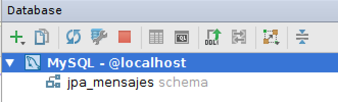
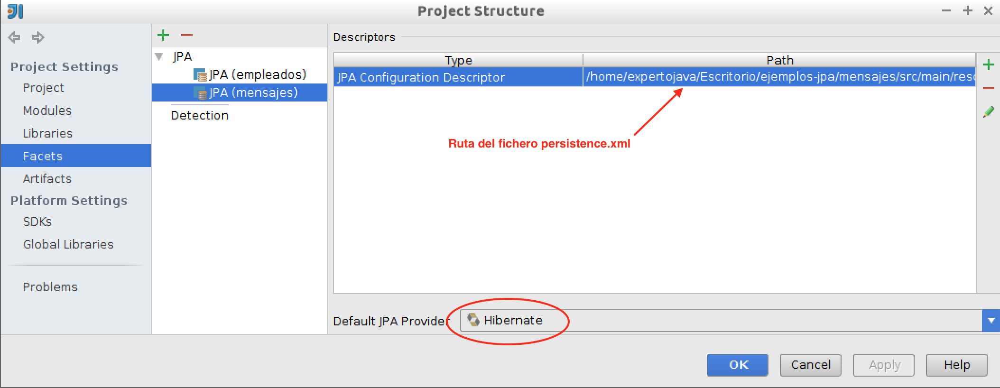
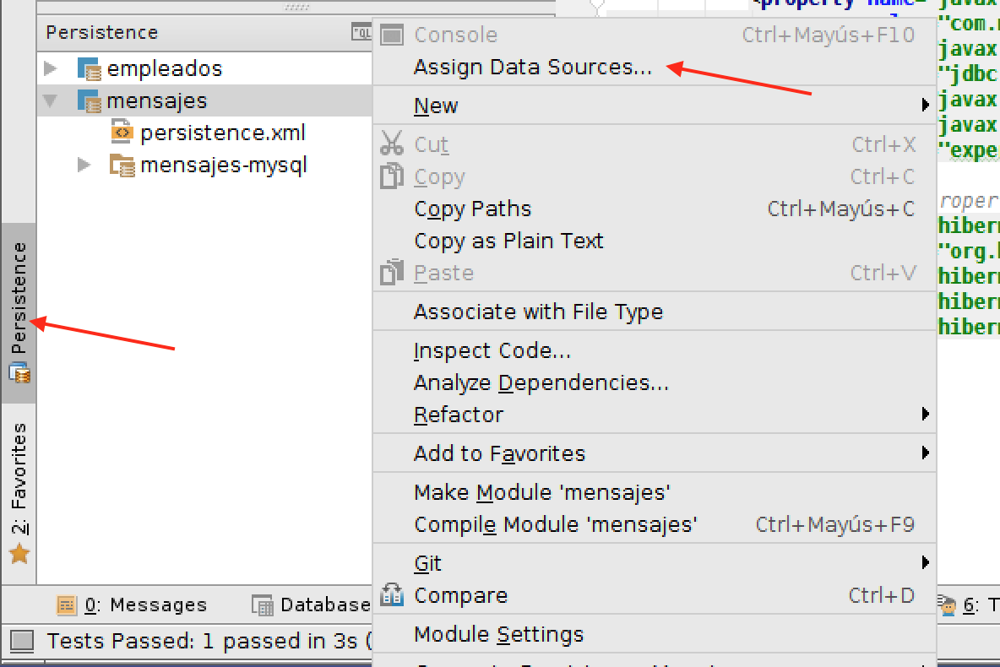
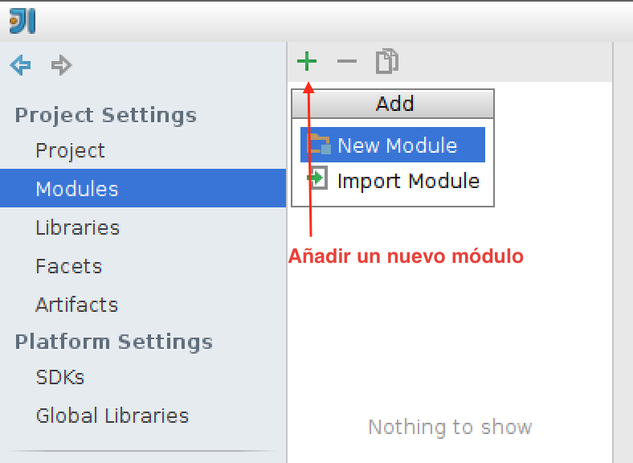

1. Primer contacto con JPA
1.1. Introducción a JPA
En la primera sesión del módulo de Java Persistence API (JPA) vamos a tratar una introducción a esta nueva tecnología Java que permite trabajar con entidades persistentes conectadas a una base de datos. Introduciremos los conceptos principales de JPA que iremos desarrollando en posteriores sesiones y proporcionaremos un ejemplo completo en el que describiremos la instalación básica de JPA en aplicaciones Java standalone (Java SE) usando Maven, IntelliJ IDEA como entorno de desarrollo y Hibernate como implementación de JPA. Veremos por último cómo realizar tests en los que intervienen el acceso a una base de datos usando DbUnit. Este ejemplo será la base de algunos ejercicios de la sesión.
Entre los conceptos principales que trataremos sobre JPA destacamos los siguientes:
-
uso de anotaciones para especificar propiedades
-
entidades persistentes y relaciones entre entidades
-
mapeado objeto-relacional
-
gestión de contextos de persistencia y de transacciones
-
diferencias entre JPA gestionado por la aplicación y gestionado por el contenedor
-
lenguaje de queries
Estudiaremos estos conceptos en profundidad a lo largo del módulo. En la sesión de hoy realizaremos una introducción basándonos en un ejemplo práctico.
1.1.1. Los orígenes de JPA
JPA (Java Persistence API) tiene su origen en el framework Hibernate, un conjunto de librerías que implementan un mapeado ORM (Mapeado Objeto-Relacional) desarrollado por Gavin King y un grupo de colaboradores a finales de 2001. Al principio Hibernate no era parte del estándar Java soportado por Sun, sino que se desarrolló de forma independiente como un proyecto Java open source. Pronto ganó popularidad y aceptación. El grupo de desarrolladores fue contratado por JBoss, integrando el producto en el servidor de aplicaciones de la compañía. En la actualidad JBoss ha sido adquirido por RedHat, que ha incorporado el servidor de aplicaciones en algunas de sus distribuciones de Linux y Gavin King continua trabajando allí.
En paralelo al desarrollo y popularización de Hibernate, la especificación oficial de Java EE también intentó definir entidades persistentes. En concreto, se definieron los entity beans, un tipo de componentes EJB distribuidos gestionados por contenedores. Junto a ellos, Sun también apoyó la especificación de JDO (Java Data Objects), otro framework alternativo de gestión de entidades persistentes que no requiere el uso de contenedores EJB. Ninguno de los dos frameworks tuvo demasiado éxito. Los EJB de entidad siempre fueron denostados por ser muy poco eficientes y complejos de utilizar. JDO, por otra parte, tardó bastante en ser implementado de una forma robusta y sencilla de manejar.
En este contexto se creó en mayo de 2003 el grupo de trabajo que iba a definir la siguiente especificación de EJB (EJB 3.0). Sun propuso a Gavin King formar parte del grupo. Cuando llegó el momento de decidir el modelo de gestión de entidades persistentes se decidió apostar por la solución que ya había adoptado de hecho la comunidad: el enfoque basado en POJOs de Hibernate. Tras tres años de trabajo, en abril de 2006 se realizó la votación que apruebó la nueva especificación y ésta se incorporó a la especificación oficial de Java EE 5 con el nombre de JPA. En declaraciones de Gavin King, la especificación de JPA recoge el 95% de las funcionalidades de Hibernate. Desde entonces JPA como estándar e Hibernate como implementación han ido evolucionando de la mano en las posteriores especificaciones Java EE6 y Java EE 7.
1.1.2. Java Persistence API
Java Persistence API (JPA) es la tecnología estándar de Java para gestionar entidades persistentes que se incluye en Java EE desde la versión 5. La versión 1.0 de la especificación se concluyó en mayo de 2006, como parte de Java EE 5. La versión 2.0 fue lanzada en diciembre de 2009, junto con Java EE 6. La versión 2.1 fue lanzada en abril de 2013, junto con Java EE 7.
La descripción oficial de la última versión del estándar está definida en el JSR 338 en el que se especifica la versión 2.1 de JPA. Como la mayoría de los documentos que especifican las JSR, es un documento bastante legible, muy bien estructurado, muy conciso y con bastante ejemplos. Además, por ser la especificación original, es completo. Cualquier característica de JPA debe estar reflejada en este documento. Aconsejamos, por tanto, tenerlo a mano, echearle un vistazo inicial (después de haber leído los apuntes de este módulo, por supuesto) y utilices como referencia ante dudas serias.
Es posible utilizar JPA no sólo como parte de aplicaciones Java EE que corren en un servidor de aplicaciones, sino también como una librería de acceso a datos en una aplicación Java aislada (standalone). Lo haremos así en esta primera sesión de la asignatura.
La idea de trabajar con entidades persistentes ha estado presente en la Programación Orientada a Objetos desde sus comienzos. Este enfoque intenta aplicar las ideas de la POO a las bases de datos, de forma que las clases y los objetos de una aplicación puedan ser almacenados, modificados y buscados de forma eficiente en unidades de persistencia. Sin embargo, aunque desde comienzos de los 80 hubo aplicaciones que implementaban bases de datos orientadas a objetos de forma nativa, la idea nunca terminó de cuajar. La tecnología dominante en lo referente a bases de datos siempre han sido los sistemas de gestión de bases de datos relacionales (RDBMS). De ahí que la solución propuesta por muchas tecnologías para conseguir entidades persistentes haya sido realizar un mapeado del modelo de objetos al modelo relacional. JPA es una de estas tecnologías. El motor de JPA realiza una transformación en tiempo de compilación de las clases Java a tablas de la base de datos y viceversa. El framework también debe realizar transformaciones en tiempo de ejecución, convirtiendo actualizaciones y consultas realizadas sobre clases y objetos en sentencias SQL que ejecuta sobre la base de datos.
Una de las características principales de JPA es su simplicidad. JPA utiliza anotaciones y configuración por defecto, de forma que el desarrollador sólo tiene que especificar aquellas características que necesita que sean distintas de las de por defecto. Por ejemplo, JPA mapea una clase Java con una tabla de la base de datos usando la anotación @Entity. Por defecto el nombre de la tabla coincidirá con el nombre de la clase. Ahora bien, podemos modificar ese nombre utilizando anotaciones adicionales. En este caso table(name="nombre-de-tabla").
JPA permite realizar el mapeo entre el esquema de datos y las clases Java de dos formas. Una es partir de un esquema de datos ya existente y construir las clases Java a partir de él. La otra es hacerlo al revés, definir las relaciones entre las clases Java mediante anotaciones y generar el esquema de la base de datos a partir de ellas. Para un proyecto nuevo es recomendable utilizar este último enfoque, ya que el modelo de clases es más restrictivo que los esquemas SQL y si lo hacemos al revés podemos encontrar algunas relaciones en SQL difíciles de expresar con JPA.
Las distintas versiones de JPA han ido haciendo cada vez más potente esta tecnología. Por ejemplo, JPA 2.0 incluyó:
-
Extensión de las opciones del mapeo objeto-relacional
-
Soporte para colecciones de objetos embebidos
-
Listas ordenadas
-
Combinación de tipos de acceso
-
API Criteria para la construcción de consultas
-
Metadata adicional para la generación de DDL (Data Definition Language)
-
Soporte para validación
-
Soporte para cache de objetos compartidos
Y la última especificación JPA 2.1 ha incluido:
-
Conversores que permiten customizar el código de conversión entre los tipos de las clases java y los de la base de datos
-
Actualizaciones y borrados en bloque mediante el API Criteria
-
Consultas que ejecutan procedimientos almacenados en la base de datos
-
Generación del esquema
-
Grafos de entidades que permiten la recuperación o la mezcla parcial de objetos en memoria
-
Mejoras en el lenguaje de consultas JPQL/Criteria: subconsultas aritméticas, funciones genéricas de base de datos, cláusula
Join ON
1.1.3. Implementaciones de JPA
JPA es un estándar aprobado en un JSR que necesita ser implementado por desarrolladores o empresas. Al ser una especificación incluida en Java EE cualquier servidor de aplicaciones compatible con Java EE debe proporcionar una implementación de este estándar.
Sólo las implementaciones más avanzadas han implementado a fecha de hoy la última versión 2.1 de la especificación. Las implementaciones más populares son:
-
Hibernate (JPA 2.1, usado por JBoss/WildFly - RedHat)
-
EclipseLink (JPA 2.1, usado por GlassFish - Oracle)
-
OpenJPA (JPA 2.0)
Vamos a usar la implementación de Hibernate, que es la utilizada en el servidor de aplicaciones WildFly y JBoss de RedHat. La gran aceptación de Hibernate en la comunidad de desarrolladores Java se refleja en que en la actualidad hay muchas empresas que utilizan Hibernate como capa de persistencia y no han dado todavía el salto a JPA. Es previsible que lo hagan próximamente.
1.1.4. Para saber más
Las siguientes referencias proporcionan un complemento en profundidad de los conceptos vistos en estos apuntes:
-
Documentación de Hibernate: Documentación en profundidad de Hibernate y JPA que incluye la documentación de la versión 4.3.7 Final que es compatible con JPA 2.1.
-
Especificación JPA 2.1. Documento que especifica el estándar JPA 2.1. Contiene bastante código de ejemplo y no es difícil de leer.
-
Java Persistence with Hibernate, second edition: Christian Bauer y Gavin King. Ed. Manning, 2015. Libro de referencia de JPA (2.1), con numerosos ejemplos tanto del estándar como de la implementación de Hibernate.
1.2. Ejemplo práctico: una sencilla aplicación JPA
Vamos a presentar un primer ejemplo de aplicación JPA, que nos va a servir para introducir los conceptos principales de la librería. El ejemplo es muy sencillo, unos programas Java (aplicaciones standalone Java SE) que gestionan mensajes creados por autores. En la siguiente sesión implementaremos una sencilla versión web y explicaremos cómo utilizar JPA en aplicaciones web Java EE.
Definimos dos entidades JPA, Autor y Mensaje que se deben mapear con dos tablas de la base de datos. Deberemos representar la relación uno-a-muchos entre autor y mensajes. Un autor va a estar relacionado con todos los mensajes que ha creado. Todos los mensajes tendrán obligatoriamente un autor. Las entidades tendrán la siguiente información:
La entidad Autor almacena información de los autores de los mensajes:
-
Long id: identificador del autor -
String correo: correo electrónico del autor, que funcionará también como identificador -
String nombre: nombre del autor -
Set<Mensaje> mensajes: conjunto de mensajes que ha creado el autor
La entidad Mensaje almacena la siguiente información:
-
Long id: identificador del mensaje -
Integer num: número de mensaje del autor -
String texto: texto del mensaje -
Date fecha: fecha de creación del mensaje -
Autor autor: autor del mensaje

Al definir esta relación en JPA se realizará automáticamente un mapeo de estas entidades en dos tablas en la base de datos: Autores y Mensajes:
La tabla Autores contiene las siguientes columnas:
-
autor_id bigint not null: clave primaria de la tabla, autoincrementada -
correo varchar(255) not null -
nombre varchar(255): nombre
La tabla Mensajes contiene las siguientes columnas:
-
mensaje_id bigint not null: clave primaria de la tabla, autoincrementada -
texto varchar(255) not null -
fecha datetime -
autor bigint not null: autor del mensaje, clave ajena que apunta a la columna email de la tabla de autores
La siguiente figura muestra gráficamente las clases Java (entidades) y las tablas asociadas:
A continuación vamos a crear paso a paso todos los elementos del proyecto. Definiremos también algunos programas ejemplo para ilustrar el funcionamiento de distintos usos de JPA: creación de entidades, modificación, borrado y consulta. Todo ello en el proyecto llamado mensajes.
1.2.1. Configuración del proyecto Maven
|
|
Para entregar los ejercicios de la asignatura tienes que crear todos los proyectos en un único repositorio git que mantendrás sincronizado con Bitbucket. Para eso deberás hacer un fork del proyecto principal en el que se guardarán todos los subproyectos (módulos en la terminología de IntelliJ). En el apartado de ejercicios comentaremos paso a paso cómo hacerlo. |
Este primer subproyecto (o módulo) lo crearemos con las siguientes coordenadas Maven:
-
groupId:
org.expertojava.jpa -
artifactId:
mensajes -
packaging:
jar -
name:
mensajes
Las librerías necesarias para trabajar con Maven se pueden comprobar en el fichero POM del proyecto. Todas las versiones de todas las dependencias están actualizadas a la última versión disponible.
<?xml version="1.0" encoding="UTF-8"?>
<project xmlns="http://maven.apache.org/POM/4.0.0"
xmlns:xsi="http://www.w3.org/2001/XMLSchema-instance"
xsi:schemaLocation="http://maven.apache.org/POM/4.0.0 http://maven.apache.org/xsd/maven-4.0.0.xsd">
<modelVersion>4.0.0</modelVersion>
<groupId>org.expertojava.jpa</groupId>
<artifactId>mensajes</artifactId>
<version>1.0-SNAPSHOT</version>
<packaging>jar</packaging>
<name>mensajes</name>
<properties>
<project.build.sourceEncoding>UTF-8</project.build.sourceEncoding>
</properties>
<dependencies>
<!-- Hibernate JPA -->  <dependency>
<groupId>org.hibernate.javax.persistence</groupId>
<artifactId>hibernate-jpa-2.1-api</artifactId>
<version>1.0.0.Final</version>
</dependency>
<dependency>
<groupId>org.hibernate</groupId>
<artifactId>hibernate-entitymanager</artifactId>
<version>4.3.7.Final</version>
</dependency>
<!-- DbUnit -->
<dependency>
<groupId>org.hibernate.javax.persistence</groupId>
<artifactId>hibernate-jpa-2.1-api</artifactId>
<version>1.0.0.Final</version>
</dependency>
<dependency>
<groupId>org.hibernate</groupId>
<artifactId>hibernate-entitymanager</artifactId>
<version>4.3.7.Final</version>
</dependency>
<!-- DbUnit -->  <dependency>
<groupId>org.dbunit</groupId>
<artifactId>dbunit</artifactId>
<version>2.5.0</version>
</dependency>
<!-- Driver MySQL -->
<dependency>
<groupId>org.dbunit</groupId>
<artifactId>dbunit</artifactId>
<version>2.5.0</version>
</dependency>
<!-- Driver MySQL -->  <dependency>
<groupId>mysql</groupId>
<artifactId>mysql-connector-java</artifactId>
<version>5.1.33</version>
</dependency>
<!-- Logging -->
<dependency>
<groupId>mysql</groupId>
<artifactId>mysql-connector-java</artifactId>
<version>5.1.33</version>
</dependency>
<!-- Logging -->  <dependency>
<groupId>org.slf4j</groupId>
<artifactId>slf4j-simple</artifactId>
<version>1.7.12</version>
</dependency>
<dependency>
<groupId>log4j</groupId>
<artifactId>log4j</artifactId>
<version>1.2.17</version>
</dependency>
<dependency>
<groupId>commons-logging</groupId>
<artifactId>commons-logging</artifactId>
<version>1.2</version>
</dependency>
<!-- Hibernate validator -->
<dependency>
<groupId>org.slf4j</groupId>
<artifactId>slf4j-simple</artifactId>
<version>1.7.12</version>
</dependency>
<dependency>
<groupId>log4j</groupId>
<artifactId>log4j</artifactId>
<version>1.2.17</version>
</dependency>
<dependency>
<groupId>commons-logging</groupId>
<artifactId>commons-logging</artifactId>
<version>1.2</version>
</dependency>
<!-- Hibernate validator -->  <dependency>
<groupId>org.hibernate</groupId>
<artifactId>hibernate-validator</artifactId>
<version>5.1.3.Final</version>
</dependency>
<dependency>
<groupId>javax.el</groupId>
<artifactId>javax.el-api</artifactId>
<version>2.2.4</version>
</dependency>
<dependency>
<groupId>org.glassfish.web</groupId>
<artifactId>el-impl</artifactId>
<version>2.2</version>
</dependency>
</dependencies>
</dependencies>
<build>
<finalName>${project.name}</finalName>
<plugins>
<plugin>
<groupId>org.apache.maven.plugins</groupId>
<artifactId>maven-compiler-plugin</artifactId>
<version>3.1</version>
<configuration>
<source>1.7</source>
<target>1.7</target>
</configuration>
</plugin>
</plugins>
</build>
</project>
<dependency>
<groupId>org.hibernate</groupId>
<artifactId>hibernate-validator</artifactId>
<version>5.1.3.Final</version>
</dependency>
<dependency>
<groupId>javax.el</groupId>
<artifactId>javax.el-api</artifactId>
<version>2.2.4</version>
</dependency>
<dependency>
<groupId>org.glassfish.web</groupId>
<artifactId>el-impl</artifactId>
<version>2.2</version>
</dependency>
</dependencies>
</dependencies>
<build>
<finalName>${project.name}</finalName>
<plugins>
<plugin>
<groupId>org.apache.maven.plugins</groupId>
<artifactId>maven-compiler-plugin</artifactId>
<version>3.1</version>
<configuration>
<source>1.7</source>
<target>1.7</target>
</configuration>
</plugin>
</plugins>
</build>
</project>Hibernate JPA: librerías para usar Hibernate como una implementación de JPA y librería de log slf4j-api necesaria para Hibernate. |
|
DbUnit: librería dbunit:2.5.0, carga automáticamente la librería junit:4.11 que necesita. |
|
| Driver MySQL para acceder a la base de datos MySQL desde JPA y desde DbUnit. | |
Hibernate necesita el fichero de logging slf4j-simple.jar, sobre el que definimos una configuración de logging basada en log4j. |
|
| Hibernate validator implementa la validación Bean Validation de las clases entidad. |
En la siguiente imagen se muestran todas las librerías que finalmente se descarga Maven. Son librerías necesarias para que las anteriores librerías puedan funcionar:
En la pestaña Dependency Hierarchy del POM podemos explorar las relaciones entre las distintas librerías.
1.2.2. Configuración de la conexión a la BD de IntelliJ
JPA puede trabajar con cualquier gestor de bases de datos. En nuestro caso, hemos instalado en la máquina virtual el servidor MySQL configurado con el usuario root y la contraseña expertojava.
IntelliJ tiene un conjunto de herramientas muy útiles para trabajar con bases de datos. Se accede a ellas desde el panel Database situado en el lateral derecho:
-
Abre el panel Database en la parte derecha.
-
Crea una nueva conexión con la base de datos MySQL con la opción + > Data Source > MySQL
-
Inicializa los parámetros de la conexión, sólo tienes que indicar el usuario
rooty la contraseñaexpertojava. Aparecerá también un aviso indicando que no está descargado el driver de acceso a MySQL, pincha el enlace y lo descargará e instalará.
Una vez configurada la conexión, vamos a utilizarla para crear la base de datos
jpa_mensajesque vamos a utilizar en las primeras aplicaciones ejemplo que vamos a programar con JPA. En el panel de base de datos podremos ver un desplegable con las bases de datos existentes. Para crear la nueva base de datos abre la consola SQL pulsando el icono correspondiente del panel de base de datos:
Y ejecuta el comando:
CREATE DATABASE jpa_mensajes;Verás que se ha creado una base de datos con ese nombre bajo las ya existentes por defecto en MySQL. Con esto es suficiente para que podamos empezar a trabajar con JPA.
-
Por último, para que aparezca la base de datos recién creada bajo el icono de la fuente de datos MySQL es necesario seleccionarla en la pantalla de propiedades. Pulsa en el botón de propiedades de la fuente de datos (o selecciona con el botón derecho la opcion Properties) y entrarás en la ventana de configuración de la fuente de datos. Selecciona la pestaña Schemas & Tables y escoge la base de datos
jpa_mensajes:
Ahora ya podrás ver la base de datos (por ahora sin ninguna tabla) bajo el icono de la conexión a la fuente de datos:

Otra forma de crear la base de datos es hacerlo desde línea de comando:
$ echo "CREATE DATABASE jpa_mensajes" > create.sql
$ mysql -u root -p"expertojava" < create.sql1.2.3. Clases entidad
Las clases de entidad (entity classes) se codifican como clases Java con campos, getters, setters y con los métodos equals y hashcode basados en claves propias naturales a los que se añaden anotaciones JPA para especificar el mapeado con las tablas correspondientes de la base de datos. Vamos a ver un primer ejemplo con las clases Autor y Mensaje y la relación una-a-muchos definida entre ellos. En las sesiones siguientes entraremos más a fondo a explicar las distintas anotaciones.
Autor
Veamos la primera clase, Autor, que contiene alguna información sobre los autores que escriben los mensajes.
Debemos etiquetar la clase con la anotación @Entity para indicarle a JPA que se debe mapear con una tabla. Todos los atributos de la entidad se mapearán automáticamente con columnas de la tabla SQL. En esos atributos podemos añadir otras anotaciones que permiten configurar las distintas características de las columnas SQL. Estas anotaciones se pueden definir sobre el atributo o sobre los métodos getters. Una forma curiosa de organizar la estructura de una clase entidad es la que utilizan en la documentación de Hibernate, en la que agrupan atributo, getter y setter.
Definimos la clase en la paquete org.expertojava.jpa.mensajes.modelo:
package org.expertojava.jpa.mensajes.modelo;
import javax.persistence.*;
import java.util.HashSet;
import java.util.Set;
@Entity
public class Autor {
@Id
@GeneratedValue
@Column(name = "autor_id")
Long id;
@Column(name="email", nullable = false, unique = true)
private String correo;
private String nombre;  @OneToMany(mappedBy = "autor", cascade = CascadeType.ALL, fetch = FetchType.EAGER)
@OneToMany(mappedBy = "autor", cascade = CascadeType.ALL, fetch = FetchType.EAGER)  private Set<Mensaje> mensajes = new HashSet<Mensaje>();
@Version
private Set<Mensaje> mensajes = new HashSet<Mensaje>();
@Version  private int version;
public Long getId() { return id; }
private void setId(Long id) { this.id = id; }
public String getCorreo() { return correo; }
public void setCorreo(String correo) { this.correo = correo; }
public String getNombre() { return nombre; }
public void setNombre(String nombre) { this.nombre = nombre; }
public Set<Mensaje> getMensajes() { return mensajes; }
public void setMensajes(Set<Mensaje> mensajes) { this.mensajes = mensajes; }
public Autor() {
private int version;
public Long getId() { return id; }
private void setId(Long id) { this.id = id; }
public String getCorreo() { return correo; }
public void setCorreo(String correo) { this.correo = correo; }
public String getNombre() { return nombre; }
public void setNombre(String nombre) { this.nombre = nombre; }
public Set<Mensaje> getMensajes() { return mensajes; }
public void setMensajes(Set<Mensaje> mensajes) { this.mensajes = mensajes; }
public Autor() {  }
public Autor(String nombre, String correo) {
this.nombre = nombre;
this.correo = correo;
}
@Override
public boolean equals(Object o) {
}
public Autor(String nombre, String correo) {
this.nombre = nombre;
this.correo = correo;
}
@Override
public boolean equals(Object o) {  if (this == o) return true;
if (o == null || getClass() != o.getClass()) return false;
Autor autor = (Autor) o;
return !(id != null ? !id.equals(autor.id) : autor.id != null);
}
@Override
public int hashCode() {
return id != null ? id.hashCode() : 0;
}
@Override
public String toString() {
return "Autor{" +
"id=" + id +
", correo='" + correo + '\'' +
", nombre='" + nombre + '\'' +
", mensajes=" + mensajes +
'}';
}
}
if (this == o) return true;
if (o == null || getClass() != o.getClass()) return false;
Autor autor = (Autor) o;
return !(id != null ? !id.equals(autor.id) : autor.id != null);
}
@Override
public int hashCode() {
return id != null ? id.hashCode() : 0;
}
@Override
public String toString() {
return "Autor{" +
"id=" + id +
", correo='" + correo + '\'' +
", nombre='" + nombre + '\'' +
", mensajes=" + mensajes +
'}';
}
}@Entity: La clase es una entidad que se va a mapear con una tabla de la base de datos. Los campos de la clase se mapearán con columnas de la base de datos. Por defecto el nombre de la tabla será el nombre de la clase Java. Se puede modificar usando la anotación @Table. |
|
@Id: indica que el campo anotado (en nuestro caso Long id) va a ser el identificador de la entidad. La columna con la que se mapea en la base de datos es la clave primaria de la tabla. |
|
@GeneratedValue: El identificador se genera automáticamente por parte de la base de datos cuando la entidad se hace persistente. |
|
@Column: Sirve para indicar características del esquema de la columna en la que se mapea el campo. El elemento name sirve para indicar el nombre de la columna en el mapeo. Si no estuviera, con un una columna con el nombre del atributo de la clase Java. |
|
En este caso, obligamos a que no la columna no sea null. Veremos que la columna correo de la tabla tendrá el modificador NOT NULL. |
|
Todos los atributos se mapean con campos de la tabla. En el caso de no utilizar la anotación @Column se mapea con un campo con el mismo nombre que el atributo. |
|
@OneToMany: Sirve para definir una relación uno-a-muchos entre Autor y Mensaje. La anotación cascade indica que las acciones de borrado, persist y merge se propagan en cascada a los mensajes. La anotación @mappedBy indica el atributo que define la clave ajena en el otro lado de la relación. Y la anotación EAGER indica que traeremos a memoria todos los mensajes con los que está relacionado el autor. Los veremos más adelante. |
|
@Version: Un atributo versión que usa JPA para implementar la gestión optimista de la concurrencia. Lo veremos en la última sesión. |
|
| Constructor vacío, necesario para JPA. | |
Métodos equals y hashCode basados en el identificador autogenerado. |
Vemos que se trata de una clase normal Java con cuatro campos (id, correo, nombre y mensajes) y los métodos get y set. JPA mapea esta clase en una tabla de la base de datos utilizando las anotaciones comentadas anteriormente.
La implementación de Hibernate obliga a definir una pareja de métodos get y set para cada atributo. En el caso de la clave primaria, al ser generada automáticamente por la base de datos, definimos el método set como privado para que no pueda ser actualizado desde fuera de la clase. Los métodos get sirven para recuperar la información de un atributo de un objeto. Los métodos set sirven para actualizarlo. Cuando JPA sincronice el estado del objeto con la base de datos escribirá en ella los cambios realizados.
Hibernate obliga también a definir un constructor vacío en todas las entidades. Si no lo hacemos muestra un mensaje de error.
Además es necesario definir los métodos equals y hashCode, a parte del conveniente toString.
Mensaje
Veamos ahora la otra clase, Mensaje, con la información de los mensajes que crean los usuarios (identificador del mensaje, texto, fecha y usuario propietario del mensaje).
package org.expertojava.jpa.mensajes.modelo;
import javax.persistence.*;
import java.util.Date;
@Entity
public class Mensaje {
@Id
@GeneratedValue
@Column(name = "mensaje_id")
private Long id;
@NotNull
@Size(min=3)
@Column(nullable = false)
private String texto;
private Date fecha;
@ManyToOne
private Autor autor;
@Version
private int version;
public Long getId() { return id; }
private void setId(Long id) {this.id = id;}
public String getTexto() { return texto; }
public void setTexto(String texto) { this.texto = texto; }
public Date getFecha() { return fecha; }
public void setFecha(Date fecha) { this.fecha = fecha; }
public Autor getAutor() { return autor; }
public void setAutor(Autor autor) { this.autor = autor; }
public Mensaje() {}
public Mensaje(String texto, Autor autor) {
this.texto = texto;
this.autor = autor;
}
@Override
public String toString() {
return "Mensaje{" +
"id=" + id +
", texto='" + texto + '\'' +
", fecha=" + fecha +
", autor=" + autor +
'}';
}
}@NotNull y @Size son dos anotaciones de Bean Validation que definen restricciones en el contenido del atributo. Ambas restricciones son mantenidas por JPA, lanzando excepciones si se produce una creación o actualización de una entidad que no las cumple. |
|
@ManyToOne: Relación inversa que etiqueta un atributo de tipo Autor. El atributo se mapea en una columna de la tabla Mensaje en la que se guarda la clave ajena al autor asociado. |
El fichero Mensaje.java define la clase entidad Mensaje. La entidad tiene los atributos id (identificador único del mensaje), texto (el texto del mensaje) y autor (el autor del mensaje, una instancia entidad de tipo Autor con la que se define la relación inversa a la definida en autor).
En el ejemplo estamos definiendo una relación uno a muchos entre autor y mensajes. Estas relaciones se definen en JPA definiendo campos del tipo de la otra entidad y anotándolos según el tipo de relación (uno-a-uno, uno-a-muchos o muchos-a-muchos). En nuestro ejemplo relacionamos un mensaje con el autor que lo ha escrito y el autor con todos sus mensajes. La definición de estas relaciones facilita mucho la programación porque evita la realización explícita de muchas consultas SQL. Por ejemplo, si en una consulta recuperamos una colección de mensajes, JPA recuperará al mismo tiempo el autor asociado y lo guardará en el campo autor. De esta forma podremos utilizarlo inmediatamente sin tener que realizar ninguna consulta adicional. Veremos un ejemplo.
La cardinalidad de la relación la definimos con la anotación OneToMany en el campo mensajes de Autor (un autor tiene una colección de mensajes) y su relación inversa ManyToOne en el campo autor de Mensaje (muchos mensajes pueden tener el mismo autor). Estas anotaciones sirven para realizar el mapeo de la relación a las tablas. En este caso se crea una clave ajena en la tabla de mensajes que apunta al autor de cada mensaje. Esto lo indicamos con la anotación mappedBy en el campo mensajes de la clase Autor. Si nos fijamos en el esquema SQL de la tabla de autores veremos que no hay ninguna columna mensajes en ella. La colección con los mensajes de un autor dado la construye JPA con una consulta SQL sobre la tabla de mensajes y utilizando la clave ajena definida por la anotación mappedBy (en este caso el campo autor).
La anotación @ManyToOne se coloca en el campo autor que contiene la relación inversa y que hace de clave ajena a la tabla de autores. En el mapeo con la base de datos, se el nombre de la columna asociada al campo se forma con el nombre del campo actual y el nombre de la columna referenciada (autor_id, la clave primaria de la tabla Autor). En este caso el nombre del campo es autor_autor_id.
En la clase Mensaje utilizamos la anotación @ManyToOne en el campo autor, indicando que muchos mensajes pueden pertenecer al mismo autor.
Veremos que para actualizar una relación uno a muchos como esta y añadir un mensaje a un autor hay que actualizar el atributo de la entidad que se mapea con al tabla que contiene la clave ajena. En este caso se trata de la entidad Mensaje, cuyo campo autor se mapea con la columna de la clave ajena de la tabla. Al crear un nuevo mensaje y hacerlo persistente ya estamos añadiendo un elemento nuevo a la relación y las consultas que se realicen sobre los mensajes de un autor devolverán el nuevo mensaje. Veremos que es necesario también actualizar en memoria la colección de mensajes del autor (JPA no lo hace automáticamente), para mantener consistente las relaciones entre entidades en memoria con la base de datos.
1.2.4. El fichero persistence.xml y la base de datos
El fichero persistence.xml es el fichero de configuración de JPA. En él se define, en un elemento denominado persistence-unit (unidad de persistencia), las clases de entidad que JPA debe mapear en la base de datos. En nuestro caso se trata de las clases org.expertojava.jpa.mensajes.modelo.Autor y org.expertojava.jpa.mensajes.modelo.Mensaje. También se especifica la conexión con la base de datos: el driver SQL que se utiliza, la URL, el gestor de base de datos (MySQL), así como el usuario y contraseña de acceso.
Este fichero de configuración debe encontrarse en el directorio META-INF dentro del classpath de la aplicación que se ejecuta. En nuestro caso, como estamos trabajando con una configuración de directorios definida por Maven, utilizaremos el directorio recursos de las clases de aplicación. Podríamos definir una configuración de test diferente añadiendo otro persistence.xml en el directorio de recursos de las clases de test.
<persistence version="2.1"
xmlns="http://xmlns.jcp.org/xml/ns/persistence"
xmlns:xsi="http://www.w3.org/2001/XMLSchema-instance"
xsi:schemaLocation="http://xmlns.jcp.org/xml/ns/persistence">
<persistence-unit name="mensajes-mysql"
transaction-type="RESOURCE_LOCAL">
<provider>org.hibernate.jpa.HibernatePersistenceProvider</provider>
<class>org.expertojava.jpa.mensajes.modelo.Autor</class>
<class>org.expertojava.jpa.mensajes.modelo.Mensaje</class>
<validation-mode>CALLBACK</validation-mode>
<properties>
<!-- JPA properties -->
<property name="javax.persistence.jdbc.driver"
value="com.mysql.jdbc.Driver"/>
<property name="javax.persistence.jdbc.url"
value="jdbc:mysql://localhost:3306/jpa_mensajes"/>
<property name="javax.persistence.jdbc.user" value="root"/>
<property name="javax.persistence.jdbc.password"
value="expertojava"/>
<!-- Hibernate properties -->
<property name="hibernate.dialect"
value="org.hibernate.dialect.MySQLDialect"/>
<property name="hibernate.show_sql" value="true"/>
<property name="hibernate.format_sql" value="false"/>
<property name="hibernate.hbm2ddl.auto" value="update"/>
</properties>
</persistence-unit>
</persistence>| Nombre de la unidad de persistencia, necesario para cargarla desde la aplicación. | |
Estrategia de gestión de la transacción. En este caso RESOURCE_LOCAL que indica que utilizaremos la gestión de transacciones de la propia base de datos (lo veremos más adelante: por defecto en JPA el AUTOCOMMIT se define como false y hay que gestionar las transacciones de forma explícita). |
|
| Clases que van a hacerse persistentes en forma de tablas. | |
En el modo CALLBACK debe estar presente un proveedor de persistencia que realice la validación de las restricciones Bean Validation. Si no, se genera un error. Otros modos son: AUTO (se realiza la validación si el proveedor de persistencia tiene esa capacidad) o NONE (no se realiza validación). El proveedor de persistencia que estamos usando, Hibernate, sí que implementa la validación. |
|
Clase Java que define el conector con la BD, el conector JDBC com.mysql.jdbc.Driver. |
|
URL de la conexión a la BD y base de datos a la que conectarnos, en nuestro caso la base de datos creada anteriormente jpa_mensajes a la que se accede con la conexión jdbc:mysql://localhost:3306/jpa_mensajes. A continuación se especifican el usuario y contraseña para la conexión. |
|
| Dialecto SQL, necesario para optimizar las sentencias SQL con las que Hibernate gestiona los datos. | |
| Parámetro que activa o desactiva el logeo de las sentencias SQL que va realizando Hibernate. | |
| Parámetro que indica la forma de actualizar las tablas cuando se pone en marcha JPA. Se explica a continuación. |
El parámetro hibernate.hbm2ddl.auto es muy importante. Determina cómo se van a actualizar las tablas de la base de datos cuando Hibernate intente mapearlas con las clases Java. Los posibles valores son los siguientes:
-
update: se actualiza el esquema de las tablas si ha habido algún cambio en las clases Java. Si no existen, se crean. -
validate: se valida que el esquema se puede mapear correctamente con las clases Java. No se cambia nada de la base de datos. -
create: se crea el esquema, destruyendo los datos previos. -
create-drop: se crea el esquema y se elimina al final de la sesión.
|
|
Es aconsejable utilizar el valor create en entornos de test, update en desarrollo y el validate en producción. Inicialmente, antes de ejecutar el primer programa, lo vamos a definir como update para probar a crear las tablas y comprobar cuál es el esquema de datos generado.
|
Generación del esquema de datos con IntelliJ
Para probar el mapeo de las clases entidad con las tablas de la base de datos podemos ejecutar un sencillo programa Java que cargue la unidad de persistencia. Como el parámetro hibernate.hbm2ddl.auto está en modo update si la base de datos está vacía, creará todas las tablas definidas, en este caso Autor y Mensajes.
Para eso vamos a hacer un pequeño test. En src/test/java/ podemos crear la clase org.expertojava.jpa.mensajes.TestEmf:
package org.expertojava.jpa.mensajes;
import org.junit.Test;
import javax.persistence.EntityManager;
import javax.persistence.EntityManagerFactory;
import javax.persistence.Persistence;
import static org.junit.Assert.*;
public class TestEmf {
@Test
public void createEntityManagerTest() {
EntityManagerFactory emf =
Persistence.createEntityManagerFactory("mensajes-mysql");
EntityManager em = emf.createEntityManager();
assertNotNull(em);
em.close();
}
}El test pasa correctamente y en el método createEntityManagerFactory se crean en la base de datos las tablas definidas en la unidad de persistencia. Podemos comprobarlo en el panel Database, refrescando la fuente de datos y desplegando el menú de la base de datos jpa_mensajes:

Podemos generar el esquema de datos desde el panel Database de IntelliJ. Hay que pulsar el botón derecho sobre la base de datos y seleccionar la opción Copy DDL para copiar el esquema de datos al portapapeles. En nuestro caso es el siguiente:
CREATE TABLE Autor
(
autor_id BIGINT PRIMARY KEY NOT NULL AUTO_INCREMENT,
email VARCHAR(255) NOT NULL,
nombre VARCHAR(255),
version INT NOT NULL
);
CREATE TABLE Mensaje
(
mensaje_id BIGINT PRIMARY KEY NOT NULL AUTO_INCREMENT,
fecha DATETIME,
texto VARCHAR(255) NOT NULL,
version INT NOT NULL,
autor BIGINT NOT NULL
);
CREATE UNIQUE INDEX UK_b9rqydwsclpsfivfgus4rq227 ON Autor (email);
ALTER TABLE Mensaje ADD FOREIGN KEY (autor) REFERENCES Autor (autor_id);
CREATE INDEX FK_1n8x4ku41yquct34o1yjs5ud0 ON Mensaje (autor);Por último, para evitar mensajes de error de IntelliJ, debemos asegurarnos de actualizar la faceta JPA y de asociarle la fuente de datos recién creada:
-
Seleccionamos Project Structure y nos aseguramos de que la faceta JPA está configurada en el módulo que estamos usando y que está correctamente definida la ruta del fichero
persistence.xml: -
Y asociamos la fuente de datos recién creada a la configuración de JPA, usando el panel
persistence, seleccionando el módulo y la opción Assign Data Sources…:Y añadimos después la fuente de datos recién creada a la unidad de persistencia
mensajes-mysql:
1.2.5. Ficheros de configuración de logging
Los siguientes ficheros definen la configuración del log. Definen como librería de logging Log4JLogger y configuran los logs para que se muestren los niveles de log INFO en adelante (se pueden cambiar a ERROR o DEBUG si se quiere menos o más mensajes).
org.apache.commons.logging.Log=org.apache.commons.logging.impl.Log4JLogger# Coloca el nivel root del logger en INFO (muestra mensajes de INFO hacia arriba)
log4j.rootLogger=INFO, A1
# A1 se redirige a la consola
log4j.appender.A1=org.apache.log4j.ConsoleAppender
log4j.appender.stdout.Target=System.out
log4j.appender.A1.layout=org.apache.log4j.PatternLayout
log4j.appender.A1.layout.ConversionPattern=%d{dd/MM/yyyy HH:mm:ss} - %p - %m %n1.2.6. Programas Java standalone que trabajan con JPA
Vamos a ver cuatro ejemplos de programas Java standalone que muestran el funcionamiento básico de una aplicación JPA:
-
Programa
NuevoAutorMensaje: programa que pide por la consola un nuevo autor y un nuevo mensaje y que crea esos nuevo registros en la bD -
Programa
NuevoMensaje: programa que pide por la consola un identificador de autor ya creado y un nuevo mensaje, y añade el mensaje al autor -
Programa
MensajesAutor: programa que lista todos los mensajes de un autor -
Programa
BuscaMensajes: programa que realiza una consulta buscando aquellos mensajes que contienen una cadena que se introduce por la consola
Programa NuevoAutorMensaje
Veamos el primer ejemplo de programa Java que usa las clases definidas anteriormente. En él comprobaremos las sentencias JPA necesarias para crear nuevas instancias de entidad y hacerlas persistentes en la base de datos.
En primer lugar vamos a ver la clase org.expertojava.jpa.main.NuevoAutorMensaje que pide un correo electrónico (identificador del autor) por la entrada estándar, busca la entidad asociada y si la encuentra solicita un mensaje y lo añade. En el caso en que el autor no existiera se crea un autor nuevo.
package org.expertojava.jpa.mensajes.main;
import org.expertojava.jpa.mensajes.modelo.Autor;
import org.expertojava.jpa.mensajes.modelo.Mensaje;
import javax.persistence.EntityManager;
import javax.persistence.EntityManagerFactory;
import javax.persistence.Persistence;
import java.io.BufferedReader;
import java.io.IOException;
import java.io.InputStreamReader;
import java.util.Date;
public class NuevoAutorMensaje {
public static void main(String[] args) {
Autor autor;
EntityManagerFactory emf = Persistence
.createEntityManagerFactory("mensajes-mysql");
EntityManager em = emf.createEntityManager();
try {
em.getTransaction().begin();
String email = leerTexto("Introduce el correo electrónico: ");
String nombre = leerTexto("Introduce nombre: ");
autor = new Autor(nombre, email);
em.persist(autor);
System.out.println("Identificador del autor: " + autor.getId());
String mensajeStr = leerTexto("Introduce mensaje: ");
Mensaje mens = new Mensaje(mensajeStr, autor);
mens.setFecha(new Date());
em.persist(mens);
System.out.println("Identificador del mensaje: " + mens.getId());
em.getTransaction().commit();
} catch (Exception ex) {
em.getTransaction().rollback();
System.out.println("Error: " + ex.getMessage() + "\n\n");
ex.printStackTrace();
} finally {
em.close();
emf.close();
}
}
static private String leerTexto(String mensaje) {
String texto;
try {
BufferedReader in = new BufferedReader(new InputStreamReader(
System.in));
System.out.print(mensaje);
texto = in.readLine();
} catch (IOException e) {
texto = "Error";
}
return texto;
}
}Se comienza creando un EntityManagerFactory que carga la unidad de persistencia. Esto es bastante costoso y debería hacerse sólo una vez, al arrancar la aplicación.
A partir del EntityManagerFactory se crea un EntityManager, el objeto de JPA que gestiona las entidades, los contextos de persistencia y las transacciones. Un contexto de persistencia es similar a una conexión a la base de datos. Es muy barato de obtener a partir del EntityManagerFactory.
La unidad de trabajo habitual en JPA con Java SE consiste en:
-
Crear un entity manager a partir del EntityManagerFactory.
-
Marcar el comienzo de la transacción.
-
Realizar operaciones sobre las entidades.
-
Cerrar la transacción y el entity manager.
Todas las entidades que se crean en un entity manager son gestionadas por él y viven en su contexto de persistencia. Cuando el entity manager se cierra, las entidades siguen existiendo como objetos Java, pero a partir de ese momento se encuentran desconectadas (detached) de la base de datos.
Cuando están gestionadas por el entity manager, JPA gestiona los cambios que se producen en las entidades, utiliza el proveedor de persistencia para generar las sentencias SQL asociadas a los cambios y vuelca (flush) esas sentencias en la base de datos.
El ejecución de los comandos SQL en la base de datos se realizan dependiendo del modo de actualización del entity manager. Por defecto el modo es AUTO y es el proveedor de persistencia (en nuestro caso, Hibernate) el que decide cuándo ejecutar los comandos en la base de datos. En el caso de Hibernate, se hace de forma inmediata. Puedes comprobarlo si está activado el log que muestra las sentencias SQL. Si está en modo COMMIT las sentencias se envían a la base de datos al realizar el commit de la transacción.
Podemos comprobar también en el ejemplo que el entity manager es quien proporciona los métodos para trabajar con la base de datos, añadiendo nuevos objetos, ejecutando consultas, etc. Por ejemplo, el método persist hace persistente en la base de datos el objeto que se le pasa como parámetro.
Podemos ejecutar el programa desde IntelliJ o desde línea de comandos usando el plugin exec de Maven:
$ cd jpa-expertojava/mensajes
$ mvn install
$ mvn exec:java -Dexec.mainClass=org.expertojava.jpa.main.NuevoAutorMensajePrograma NuevoMensaje
A continuación vemos un programa en el que se muestra cómo añadir un mensaje a un autor ya existente. Es un ejemplo de utilización de la recuperación de entidades por clave primaria.
package org.expertojava.jpa.mensajes.main;
import org.expertojava.jpa.mensajes.modelo.Autor;
import org.expertojava.jpa.mensajes.modelo.Mensaje;
import javax.persistence.EntityManager;
import javax.persistence.EntityManagerFactory;
import javax.persistence.Persistence;
import java.io.BufferedReader;
import java.io.IOException;
import java.io.InputStreamReader;
import java.util.Date;
public class NuevoMensaje {
public static void main(String[] args) {
EntityManagerFactory emf = Persistence
.createEntityManagerFactory("mensajes-mysql");
EntityManager em = emf.createEntityManager();
em.getTransaction().begin();
System.out.println("--Añadiendo mensaje a un usuario");
Long idAutor = Long
.valueOf(
leerTexto("Introduce identificador de usuario: "));
Autor autor = em.find(Autor.class, idAutor);
if (autor == null) {
System.out.println("Usuario no existente");
} else {
System.out.println("Usuario " + autor.getNombre());
String mensajeStr = leerTexto("Introduce mensaje: ");
Mensaje mens = new Mensaje(mensajeStr, autor);
mens.setFecha(new Date());
mens.setAutor(autor);
em.persist(mens);
System.out
.println("Identificador del mensaje: " + mens.getId());
}
em.getTransaction().commit();
em.close();
emf.close();
}
static private String leerTexto(String mensaje) {
String texto;
try {
BufferedReader in = new BufferedReader(new InputStreamReader(
System.in));
System.out.print(mensaje);
texto = in.readLine();
} catch (IOException e) {
texto = "Error";
}
return texto;
}
}Vemos que la recuperación de un autor a partir de su clave primaria se hace con el método find del entity manager, pasando como parámetro la clase de entidad que queremos recuperar y el valor de la clave primaria. El método devuelve null si no existe esa entidad.
Programa MensajesAutor
A continuación presentamos el programa que lista los mensajes añadidos a un determinado autor. Es un ejemplo de utilización de la relación a-muchos que hemos definido entre un autor y sus mensajes.
package org.expertojava.jpa.mensajes.main;
import org.expertojava.jpa.mensajes.modelo.Autor;
import org.expertojava.jpa.mensajes.modelo.Mensaje;
import javax.persistence.EntityManager;
import javax.persistence.EntityManagerFactory;
import javax.persistence.Persistence;
import java.io.BufferedReader;
import java.io.IOException;
import java.io.InputStreamReader;
public class MensajesAutor {
public static void main(String[] args) {
EntityManagerFactory emf = Persistence
.createEntityManagerFactory("mensajes-mysql");
EntityManager em = emf.createEntityManager();
try {
System.out.println("--Buscando mensajes de autor");
Long idAutor = Long
.valueOf(
leerTexto("Introduce identificador de autor: "));
Autor autor = em.find(Autor.class, idAutor);
if (autor == null) {
System.out.println("No existe ese autor");
} else {
for (Mensaje mensaje : autor.getMensajes()) {
System.out.println(mensaje.toString());
}
}
}
catch (Exception e) {
e.printStackTrace();
}
finally {
em.close();
emf.close();
}
}
static private String leerTexto(String mensaje) {
String texto;
try {
BufferedReader in = new BufferedReader(new InputStreamReader(
System.in));
System.out.print(mensaje);
texto = in.readLine();
} catch (IOException e) {
texto = "Error";
}
return texto;
}
}Si miramos en la consola los mensajes SQL que se generan, veremos que el find que recupera el autor también genera un select que recupera toda la colección de mensajes. Después, basta con recorrer esta colección de mensajes que ya tenemos en memoria.
Programa BuscaMensajes
JPA tiene su propio lenguaje de consultas llamado JP-QL. Lo veremos en una próxima sesión. El siguiente ejemplo ejecuta la consulta en la que se busca un patrón de texto en las entidades Mensaje.
package org.expertojava.jpa.mensajes.main;
import java.io.BufferedReader;
import java.io.IOException;
import java.io.InputStreamReader;
import java.util.List;
import javax.persistence.EntityManager;
import javax.persistence.EntityManagerFactory;
import javax.persistence.Persistence;
import javax.persistence.Query;
import org.expertojava.jpa.mensajes.Mensaje;
public class BuscaMensajes {
private static final String QUERY_BUSCA_MENSAJES = "SELECT m "
+ "FROM Mensaje m " + "WHERE m.texto LIKE :patron";
@SuppressWarnings("unchecked")
public static void main(String[] args) {
EntityManagerFactory emf = Persistence
.createEntityManagerFactory("mensajes");
EntityManager em = emf.createEntityManager();
// No necesitamos crear una transacción
// No modificamos datos y no hay problemas de bloqueos
// em.getTransaction().begin();
System.out.println("--Buscando en los mensajes");
String palabra = leerTexto("Introduce una palabra: ");
String patron = "%" + palabra + "%";
Query query = em.createQuery(QUERY_BUSCA_MENSAJES);
query.setParameter("patron", patron);
List<Mensaje> mensajes = query.getResultList();
if (mensajes.isEmpty()) {
System.out.println("No se han encontrado mensajes");
} else
for (Mensaje mensaje : mensajes) {
System.out.println(mensaje.getTexto() + " -- "
+ mensaje.getAutor().getNombre());
}
// em.getTransaction().commit();
em.close();
emf.close();
}
static private String leerTexto(String mensaje) {
...
}
}Podemos comprobar en el ejemplo que una vez recuperados los mensajes tenemos disponibles sus autores. JPA ha guardado en cada mensaje su autor. Esto sólo se hace por defecto con las relaciones "a-uno". En las relaciones "a-muchos" JPA guarda un proxy en lugar de la colección y JPA debe realizar una consulta SQL cuando se accede a la colección. Lo veremos con más detalle en la sesión en la que hablemos del mapeo de relaciones entre entidades.
1.2.7. Definición de tests con DbUnit
La definición de tests se hace igual que siempre, en el directorio de tests de Maven src/test/java. Ya hemos visto el ejemplo del test que comprueba que funciona correctamente la inicialización de la unidad de persistencia.
Los ficheros de recursos guardados en el directorio src/test/resources tienen preferencia sobre los del directorio main cuando se ejecutan los tests. Por ejemplo, podemos guardar ahí un fichero META-INF/persistence.xml para que los tests se lancen sobre una base de datos distinta, o para que la base de datos se inicialice cada vez que se van a lanzar los tests. Esto es lo que hacemos en el siguiente listado, modificando el valor de la propiedad hibernate.hbm2ddl.auto a create. De esta forma cada vez que se lancen los tests se volverán a crear las tablas y estarán inicialmente vacías de elementos.
...
<property name="hibernate.hbm2ddl.auto" value="create"/>
...Vamos a ver rápidamente cómo usar DbUnit para poblar de datos las tablas sobre las que se realizan los tests. Con DbUnit podemos definir un conjunto de datos asociados a cada clase de tests y lanzar todos los tests de esa clase sobre esos mismos datos. La forma de hacerlo es limpiando las tablas a las que pertenecen los datos e insertándolos a continuación (tantas veces como tests haya que pasar).
El siguiente fichero muestra cómo construir un dataset de prueba usando XML para rellenar las tablas:
<?xml version='1.0' encoding='UTF-8'?>
<dataset>
<Autor autor_id="1" correo="antonio.martinez@ua.es" nombre="Antonio Martinez"/>
<Mensaje mensaje_id="1" fecha="2014-11-09" texto="Hola, colega" autor="1"/>
<Mensaje mensaje_id="2" fecha="2014-11-09" texto="Este es mi segundo mensaje" autor="1"/>
</dataset>Y a continuación el fichero en el que se definen los tests:
package org.expertojava.jpa.mensajes.modelo;
import org.dbunit.database.DatabaseConnection;
import org.dbunit.database.IDatabaseConnection;
import org.dbunit.dataset.IDataSet;
import org.dbunit.dataset.xml.FlatXmlDataSetBuilder;
import org.dbunit.operation.DatabaseOperation;
import org.junit.AfterClass;
import org.junit.Before;
import org.junit.BeforeClass;
import org.junit.Test;
import javax.persistence.EntityManager;
import javax.persistence.EntityManagerFactory;
import javax.persistence.Persistence;
import java.sql.Connection;
import java.sql.DriverManager;
import static org.junit.Assert.assertNotNull;
import static org.junit.Assert.assertTrue;
import static org.junit.Assert.fail;
public class TestMensajes {
private static EntityManagerFactory emf;
private static IDatabaseConnection connection;
private static IDataSet dataset;
// Se ejecuta una vez antes de todos los tests
@BeforeClass
public static void initDatabaseTest() {
try {
// Inicializamos sólo una vez el emf antes de todos los tests
emf = Persistence.createEntityManagerFactory("mensajes");
// Inicializamos la conexión a la BD necesaria para
// que DBUnit cargue los datos de los tests
Class.forName("com.mysql.jdbc.Driver");
Connection jdbcConnection = (Connection) DriverManager
.getConnection(
"jdbc:mysql://localhost:3306/jpa_mensajes",
"root", "expertojava");
connection = new DatabaseConnection(jdbcConnection);
FlatXmlDataSetBuilder flatXmlDataSetBuilder =
new FlatXmlDataSetBuilder();
flatXmlDataSetBuilder.setColumnSensing(true);
dataset = flatXmlDataSetBuilder.build(Thread.currentThread()
.getContextClassLoader()
.getResourceAsStream("dbunit/dataset1.xml"));
} catch (Exception ex) {
ex.printStackTrace();
fail("Excepción al inicializar el emf y DbUnit");
}
}
// Se ejecuta antes de cada test
@Before
public void cleanDB() throws Exception {
// Se hace un "clean insert" de los datos de prueba
// definidos en el fichero XML. El "clean insert" vacía las
// tablas de los datos de prueba y después inserta los datos
DatabaseOperation.CLEAN_INSERT.execute(connection, dataset);
}
@Test
public void persistAñadeUnNuevoAutor() {
EntityManager em = emf.createEntityManager();
em.getTransaction().begin();
Autor autor = new Autor("Antonio Martínez", "antonio.martinez@ua.es");
em.persist(autor);
em.getTransaction().commit();
Long id = autor.id;
Autor autor2 = em.find(Autor.class, id);
assertTrue(autor2.equals(autor));
em.close();
}
@Test
public void createEntityManagerTest() {
EntityManager em = emf.createEntityManager();
assertNotNull(em);
em.close();
}
@Test
public void findDevuelveAutor() {
EntityManager em = emf.createEntityManager();
Autor autor = em.find(Autor.class, 1L);
assertTrue(autor.getCorreo().equals("antonio.martinez@ua.es"));
em.close();
}
@Test
public void findDevuelveAutorConMensajes() {
EntityManager em = emf.createEntityManager();
Autor autor = em.find(Autor.class, 1L);
assertTrue(autor.getMensajes().size() == 2);
em.close();
}
// Se ejecuta una vez después de todos los tests
@AfterClass
public static void closeEntityManagerFactory() throws Exception {
// Borramos todos los datos y cerramos la conexión
DatabaseOperation.DELETE_ALL.execute(connection, dataset);
if (emf != null)
emf.close();
}
}| Se obtiene una conexión JDBC a la base de datos para que DbUnit inserte los datos de pruebas | |
Se cargan los datos de prueba en memoria a partir del fichero dbunit/dataset1.xml |
|
Antes de cada test se realiza una llamada al método CLEAN_INSERT de DbUnit con el que se vacían las tablas a las que pertenecen los datos del dataset y se insertan. De esta forma, antes de comenzar cualquier test las tablas se encuentran en el estado conocido definido por los datos cargados. |
|
| Se realizan tests de forma idéntica a cómo los hacíamos con JUnit | |
Al terminar todos los tests se borran todos los datos de la base de datos y se cierra el EntityManagerFactory |
1.3. Ejercicios
Para crear los proyectos haz un fork del repositorio java_ua/ejercicios-jpa y descargarlo después en tu máquina:
$ git clone https://<usuario>@bitbucket.org/<usuario>/ejercicios-jpa
Lo único que contiene el repositorio es un proyecto IntelliJ vacío con el fichero .gitignore. En este repositorio vas a crear los distintos módulos que vamos a ir desarrollando en las sesiones de ejercicios.
Abre el proyecto con IntelliJ y empezamos con los ejercicios de esta sesión.
1.3.1. (0,5 puntos) Construir el módulo mensajes
Debes construir el proyecto mensajes tal y como se ha presentado en teoría:
-
Una vez que has abierto el proyecto
jpa-expertojava, crea un primer módulo dentro de él. Utiliza el asistente para crear un módulo Maven vacío desde el panel de Project Structure, que puedes abrir con la opción File > Project Structure:Define las coordenadas del proyecto:
-
groupId:`org.expertojava.jpa` -
artifactId:mensajes -
version: la que aparece por defecto (1.0-SNAPSHOT) -
packaging: jarY ubica el módulo en el directorio
mensajesdentro del proyecto principal
-
-
Cuando se abra el nuevo proyecto en IntelliJ recuerda activar los menús del control de versiones Git con la opción VCS > Enable Version Control Integration > Git. Ahora ya podrás usar Git desde IntelliJ.
-
Crea las clases Java de entidad y el fichero
persistence.xml -
Crea los tests
-
Crea las clases main
-
Ejecuta algunos ejemplos y comprueba que los datos se han añadido en la base de datos
Puedes encontrar el código del ejemplo, aparte de en estos apuntes, en el repositorio java_ua/ejemplos-jpa.
1.3.2. (1,5 puntos) Contruir el módulo filmoteca
Construye en IntelliJ el módulo Maven filmoteca con los siguientes parámetros:
-
groupId: org.expertojava.jpa -
artifactId: filmoteca -
version: 0.0.1-SNAPSHOT -
packaging: jar
Modifica el fichero POM para incluir las librerías necesarias para trabajar con JPA. Crea una base de datos nueva llamada jpa_filmoteca y el fichero de configuración de JPA persistence.xml. Crea en el persistence.xml una unidad de persistencia sin clases con el nombre filmoteca. Crea por último el singleton que obtiene el entityManagerFactory.
Para probar todo lo anterior, crea una clase de test como hemos anteriormente para probar que se obtiene correctamente el entity manager. Lanza el test y comprueba que funciona correctamente.
Creación de entidades
Crea las siguientes entidades en el paquete org.expertojava.jpa.filmoteca.modelo:
-
Pelicula, con un identificador autogenerado como clave primaria (tipoLong) y los campos:-
titulo(String) -
estreno (`Date) -
presupuesto(Double): presupuesto de la película en miles de euros -
recaudación(Double): recaudación de la película en miles de euros -
pais(String) -
Relación a-muchos con la entidad
Critica
-
-
Critica, con un identificador autogenerado como clave primaria (tipoLong) y los campos:-
critico(String) -
texto(String) -
valoracion(Integer): número del 1 al 10 -
relación a-uno con
Pelicula
-
Lanza el test anterior y comprueba que las tablas se han creado correctamente en la BD.
Programas de prueba de las entidades
Siguiendo los ejemplos vistos en la sesión de teoría, escribe dos clases main en el paquete org.expertojava.jpa.filmoteca.main:
-
NuevaPelicula: Añade una nueva película, introduciendo por la entrada estándar su título, su fecha de estreno, su presupuesto y su recaudación. Imprime por la salida estándar el código de la película. -
NuevaCritica: Añade una nueva crítica, introduciendo por la entrada estándar el nombre del crítico, el texto de la crítica, la valoración y el código de la película.
Puedes ejecutar los programas desde IntelliJ o desde línea de comando utilizando el plugin exec de Maven:
$ mvn exec:java -Dexec.mainClass=org.expertojava.jpa.filmoteca.main.NuevaPelicula2. Entity Manager y contexto de persistencia
2.1. Introducción
En JPA todas las operaciones relacionadas con la persistencia de las entidades y el mapeado de estas entidades con la base de datos subyacente se realizan a través de un gestor de entidades (entity manager en inglés). El entity manager tiene dos responsabilidad fundamentales:
-
Define una conexión transaccional con la base de datos que debemos abrir y mantener abierta mientras estamos realizado operaciones. En este sentido realiza funciones similares a las de una conexión JDBC.
-
Además, mantiene en memoria una caché con las entidades que gestiona y es responsable de sincronizarlas correctamente con la base de datos cuando se realiza un flush. El conjunto de entidades que gestiona un entity manager se denomina su contexto de persistencia.
El entity manager se obtiene a través de una factoría del tipo EntityManagerFactory, que se configura mediante la especificación de una unidad de persistencia (persistence unit en inglés) definida en el fichero XML persistence.xml. En el fichero pueden haber definidas más de una unidad de persistencia, cada una con un nombre distinto. El nombre de la unidad de persistencia escogida se pasa a la factoría. La unidad de persistencia define las características concretas de la base de datos con la que van a trabajar todos los entity managers obtenidos a partir de esa factoría y queda asociada a ella en el momento de su creación. Existe, por tanto, una relación uno-a-uno entre una unidad de persistencia y su EntityManagerFactory concreto. Para obtener una factoría EntityManagerFactory debemos llamar a un método estático de la clase Persistence .
Las relaciones entre las clases que intervienen en la configuración y en la creación de entity managers se muestran en la siguiente figura.

2.1.1. Entidades gestionadas y desconectadas
Una vez creado el entity manager lo utilizaremos para realizar todas las operaciones de recuperación, consulta y actualización de entidades. Cuando un entity manager obtiene una referencia a una entidad, se dice que la entidad está gestionada (una managed entity en inglés) por él. El entity manager guarda internamente todas las entidades que gestiona y las utiliza como una caché de los datos en la base de datos. Por ejemplo, cuando va a recuperar una entidad por su clave primaria, lo primero que hace es consultar en su caché si esta entidad ya la ha recuperado previamente. Si es así, no necesita hacer la búsqueda en la base de datos y devuelve la propia referencia que mantiene. Al conjunto de entidades gestionadas por un entity manager se le denomina su contexto de persistencia (persistence context en inglés).
En un determinado momento, el entity manager debe volcar a la base de datos todos los cambios que se han realizado sobre las entidades. También debe ejecutar las consultas JPQL definidas. Para ello el entity manager utiliza un proveedor de persistencia (persistence provider en inglés) que es el responsable de generar todo el código SQL compatible con la base de datos.
En esta sesión estudiaremos las distintas operaciones que realiza el entity manager, así como el concepto de contexto de persistencia y las distintas problemáticas relacionadas con la gestión de esta caché de objetos persistentes y la sincronización con la base de datos subyacente.
Una vez que se cierra la transacción y se cierra el entity manager, éste desaparece pero las entidades gestionadas siguen estando en memoria, pero ahora en estado desconectado (detached en inglés). Podrían volverse a gestionar por un entity manager usando el método merge.
2.1.2. APIs de Java EE 7
Veremos una parte de la completa APIs de Java EE 7 sobre estas clases. Los siguientes métodos de la interfaz EntityManager son los más importantes y los estudiaremos en detalle en los siguientes apartados:
-
void clear(): borra el contexto de persistencia, desconectando todas sus entidades -
boolean contains(Object entity): comprueba si una entidad está gestionada en el contexto de persistencia -
Query createNamedQuery(String name): obtiene una consulta JPQL precompilada -
void detach(Object entity): elimina la entidad del contexto de persistencia, dejándola desconectada de la base de datos -
<T> T find(Class<T>, Object key): busca por clave primaria -
void flush(): sincroniza el contexto de persistencia con la base de datos -
<T> T getReference(Class<T>, Object key): obtiene una referencia a una entidad, que puede haber sido recuperada de forma lazy -
EntityTransaction getTransaction(): devuelve la transacción actual -
<T> T merge(T entity): incorpora una entidad al contexto de persistencia, haciéndola gestionada -
void persist(Object entity): hace una entidad persistente y gestionada -
void refresh(Object entity): refresca el estado de la entidad con los valores de la base de datos, sobreescribiendo los cambios que se hayan podido realizar en ella -
void remove(Object entity): elimina la entidad
Puedes consultar el API completo de estas clases en los siguientes enlaces:
2.1.3. Obtención del entity manager factory y de los entity manager
La forma de obtener un entity manager o un entity manager factory varía dependiendo de si estamos utilizando JPA desde una aplicación standalone (lo que se denomina JPA gestionado por la aplicación) o desde un servidor de aplicaciones Java EE (en lo que se denomina JPA gestionado por el contenedor). En el segundo caso se obtienen mediante inyección de dependencias, siendo el servidor el responsable de obtener el entity manager e inyectarlo en una variable que tiene una determinada anotación. En el caso de JPA gestionado por la aplicación, es el programador el que debe llamar de forma explícita a las instrucciones para obtener estos objetos.
Obtención del entity manager factory
En el primer caso, cuando estamos usando JPA gestionado por la aplicación, lo primero que debemos hacer es crear un EntityManagerFactory, para lo que hay que invocar al método createEntityManagerFactory() pasando por parámetro el nombre de la unidad de persistencia definida en el fichero persistence.xml. En este fichero, como ya hemos visto, se especifican los parámetros de configuración de la conexión con la base de datos (URL de la conexión, nombre de la base de datos, usuario, contraseña, gestor de base de datos, características del pool de conexiones, etc.). Por ejemplo:
EntityManagerFactory emf =
Persistence.createEntityManagerFactory("mensajes-mysql");Esta creación es un proceso costoso, ya que incluye el procesamiento de todas las anotaciones de las clases de entidad declaradas en el persistence.xml, la generación del esquema de datos asociados para compararlo con el existente en la base de datos con la que se realiza la conexión y bastantes otros procesos relacionados con el mapeo de las entidades con la base de datos.
Es conveniente llamar al método sólo una vez y guardar el entityManagerFactory resultante en una variable estática o en un singleton para reusar la misma factoría durante el tiempo de vida de la aplicación. Por ejemplo, el siguiente código define un singleton que inicializa el entityManagerFactory sólo una vez. Lo llamamos EmfSingleton y lo definimos en el paquete org.expertojava.jpa.mensajes.persistencia:
package org.expertojava.jpa.mensajes.persistencia
import javax.persistence.EntityManagerFactory;
import javax.persistence.Persistence;
public class EmfSingleton {
private static EmfSingleton ourInstance =
new EmfSingleton();
static private final String PERSISTENCE_UNIT_NAME = "mensajes-mysql";
private EntityManagerFactory emf = null;
public static EmfSingleton getInstance() {
return ourInstance;
}
private EmfSingleton() {
}
public EntityManagerFactory getEmf() {
if (this.emf == null)
this.emf = Persistence
.createEntityManagerFactory(PERSISTENCE_UNIT_NAME);
return this.emf;
}
}| Constante con el nombre de la unidad de persistencia | |
| Creación de la factoría. Sólo se hace una vez, la primera vez que se llama al método. |
Una vez definido el singleton anterior podemos acceder a la factoría con el siguiente código:
EntityManagerFactory emf = EmfSingleton.getInstance().getEmf()Obtención de los entityManager
Los entityManager se obtienen a partir del entityManagerFactory mediante el método createEntityManager():
EntityManager em = emf.createEntityManager();Lo normal es que no necesitemos trabajar con la factoría de y que llamemos directamente al objeto que nos devuelve el singleton:
EntityManager em = EmfSingleton.getInstance().getEmf().createEntityManager();Esta llamada no es nada costosa, ya que las implementaciones de JPA (como Hibernate) implementan pools de entity managers. El método createEntityManager no realiza ninguna reserva de memoria ni de otros recursos sino que simplemente devuelve alguno de los entity managers disponibles.
Repetimos a continuación un ejemplo típico de uso que ya hemos visto previamente:
public class EjemploUnidadDeTrabajoJPA {
public static void main(String[] args) {
EntityManagerFactory emf =
EmfSingleton.getInstance().getEmf();
EntityManager em = emf.createEntityManager();
// Abrimos una transacción
EntityTransaction tx = em.getTransaction();
tx.begin();
// El em realiza operaciones sobre las entidades
// Cerramos la transacción, el em
tx.commit();
em.close();
// Cerramos el emf cuando se termina la aplicación
emf.close();
}
}Es muy importante considerar que los objetos EntityManager no son thread-safe, no pueden ser compartidos por más de un thread. Cuando los utilicemos en servlets, por ejemplo, deberemos crearlos en cada petición HTTP. De esta forma se evita que distintas sesiones accedan al mismo contexto de persistencia.
2.1.4. Transacciones
Cualquier operación que conlleve una creación, modificación o borrado de entidades debe hacerse dentro de una transacción. En JPA las transacciones se gestionan de forma distinta dependiendo de si estamos en un entorno Java SE o en un entorno Java EE. La diferencia fundamental entre ambos casos es que en un entorno Java EE las transacciones se manejan con JTA (Java Transaction API), un API que implementa el two face commit y que permite gestionar operaciones sobre múltiples recursos transaccionales o múltiples operaciones transaccionales sobre el mismo recurso. En el caso de Java SE las transacciones se implementan con el gestor de transacciones propio del recurso local (la base de datos) y se especifican en la interfaz EntityTransaction.
El gestor de transacciones locales se obtiene con la llamada getTransaction() al EntityManager. Una vez obtenido, podemos pedirle cualquiera de los métodos definidos en la interfaz: begin() para comenzar la transacción, commit() para actualizar los cambios en la base de datos (en ese momento JPA vuelca las sentencias SQL en la base de datos) o rollback() para deshacer la transacción actual.
El siguiente listado muestra un ejemplo de uso de una transacción:
em.getTransaction().begin();
createEmpleado("Juan Garcia", 30000);
em.getTransaction().commit();2.2. Operaciones CRUD del entity manager
Vamos a ver con más detalle las operaciones básicas relacionadas con entidades que podemos hacer con un entity manager. Veremos las siguientes:
-
persist()para almacenar una entidad en la base de datos -
find()para buscar entidades por clave primaria -
actualización de entidades con los setters
-
remove()para borrar entidades
2.2.1. Persist para hacer persistente una entidad
El método persist() del EntityManager acepta una nueva instancia de entidad y la convierte en gestionada. Si la entidad que se pasa como parámetro ya está gestionada en el contexto de persistencia, la llamada se ignora. La operación contains() puede usarse para comprobar si una entidad está gestionada.
El hecho de convertir una entidad en gestionada no la hace persistir inmediatamente en la base de datos. La verdadera llamada a SQL para crear los datos relacionales no se generará hasta que el contexto de persistencia se sincronice con la base de datos. Lo más normal es que esto suceda cuando se realiza un commit de la transacción. En el momento en que la entidad se convierte en gestionada, los cambios que se realizan sobre ella afectan al contexto de persistencia. Y en el momento en que la transacción termina, el estado en el que se encuentra la entidad es volcado en la base de datos.
Si se llama a persist() fuera de una transacción la entidad se incluirá en el contexto de persistencia, pero no se realizará ninguna acción hasta que la transacción comience y el contexto de persistencia se sincronice con la base de datos.
La operación persist() se utiliza con entidades nuevas que no existen en la base de datos. Si se le pasa una instancia con un identificador que ya existe en la base de datos el proveedor de persistencia puede detectarlo y lanzar una excepción EntityExistsException. Si no lo hace, entonces se lanzará la excepción cuando se sincronice el conexto de persistencia con la base de datos, al encontrar una clave primaria duplicada.
Un ejemplo completo de utilización de persist(), en el que también se realiza una actualización de una relación a-muchos, es el siguiente:
EntityManager em = emf.createEntityManager();
em.getTransaction().begin();
// Añadimos un nuevo empleado al departamento 1
Departamento depto = em.find(Departamento.class, 1L);
Empleado empleado = new Empleado();
empleado.setNombre("Pedro");
empleado.setSueldo(38000.0);
empleado.setDepartamento(depto);
em.persist(empleado);
// Actualizamos la colección en memoria de empleados del departamento
depto.getEmpleados().add(empleado);
em.getTransaction().commit();
em.close();En el ejemplo comenzamos obteniendo una instancia que ya existe en la base de datos de la entidad Departamento. Se crea una nueva instancia de Empleado, proporcionando algún atributo. Después asignamos el empleado al departamento, llamando al método setDepartamento() del empleado y pasándole la instancia de Departamento que habíamos recuperado. Después realizamos la llamada al método persist() que convierte la entidad en gestionada. Cuando el contexto de persistencia se sincroniza con la base de datos, se añade el nuevo empleado en la tabla y se actualiza su id. En la columna departmento_id se guarda la clave ajena al departamento al que está asignado. Hay que hacer notar que sólo se actualiza la tabla de Empleado, que es la propietaria de la relación y la que contiene la clave ajena a Departamento.

Por último actualizamos en memoria el otro lado de la relación llamando al método add() de la colección. Esto no es necesario para actualizar la base de datos, sólo para actualizar la relación en memoria. Es importante tener siempre presente que JPA no actualiza las colecciones en memoria de las relaciones uno-a-muchos.
Una cuestión muy importante a tener en cuenta es que si el identificador del empleado es una clave primaria generada por la base de datos no estará disponible hasta que el contexto de persistencia realice la ejecución de los comandos SQL. Hay que tener cuidado y no realizar el add en la colección con el identificador a null. Con Hibernate no hay problema, porque realiza la actualización en la base de datos de inmediantamente y tenemos el id actualizado justo después de ejecutar el persist (si el flush() está puesto a AUTO). Pero tenemos que tener cuidado, y comprobar el comportamiento de cada proveedor de persistencia.
Si queremos asegurarnos de que el identificador se carga en la entidad podemos utilizar las siguientes sentencias:
em.persist(empleado);
em.flush(empleado);
em.refresh(empleado);La llamada a flush asegura que se ejecuta el insert en la BD y la llamada a refresh asegura que el identificador se carga en la instancia. Esto es válido para cualquier proveedor de persistencia.
2.2.2. Find para buscar entidades por clave primaria
Una vez que la entidad está en la base de datos, lo siguiente que podemos hacer es recuperarla de nuevo. Para ello basta con escribir una línea de código:
Empeado empleado = em.find(Empleado.class, 4L);Pasamos la clase de la entidad que estamos buscando (en el ejemplo estamos buscando una instancia de la clase Empleado) y el identificador o clave primaria que identifica la entidad. El entity manager buscará esa entidad en la base de datos y devolverá la instancia buscada. La entidad devuelta será una entidad gestionada que existirá en el contexto de persistencia actual asociado al entity manager.
En el caso en que no existiera ninguna entidad con ese identificador, se devolvería simplemente null.
La llamada a find puede devolver dos posibles excepciones de tiempo de ejecución, ambas de la clase PersistenceException: IllegalStateException si el entitiy manager ha sido previamente cerrado o IllegalArgumentException si el primer argumento no contiene una clase entidad o el segundo no es el tipo correcto de la clave primaria de la entidad.
Existe una versión especial de find() que sólo recupera una referencia (técnicamente, un proxy) a la entidad, sin obtener los datos de los campos de la base de datos. Se trata del método getReference(). Es últil cuando se quiere añadir un objeto con una clave primaria conocida a una relación. Ya que únicamente estamos creando una relación, no es necesario cargar todo el objeto de la base de datos. Sólo se necesita su clave primaria. Veamos la nueva versión del ejemplo anterior:
Departamento depto = em.getReference(Departamento.class, 1L);
Empleado empleado = new Empleado();
empleado.setNombre("Pedro");
empleado.setSueldo(38000.0);
empleado.setDepartamento(depto);
em.persist(empleado);Esta versión es más eficiente que la anterior porque no se realiza ningún SELECT en la base de datos para buscar la instancia del Departamento. Cuando se llama a getReference(), el proveedor devolverá un proxy al Departamento sin recuperarlo realmente de la base de datos. En tanto que sólo se acceda a la clave primaria, no se recuperará ningún dato. Y cuando se haga persistente el Empleado, se guardará en la clave ajena correspondiente el valor de la clave primaria del Departamento.
Un posible problema de este método es que, a diferencia de find() no devuelve null si la instancia no existe, ya que realmente no realiza la búsqueda en la base de datos. Únicamente se debe utilizar el método cuando estamos seguros de que la instancia existe en la base de datos. En caso contrario estaremos guardando en la variable dept una referencia (clave primaria) de una entidad que no existe, y cuando se haga persistente el empleado se generará una excepción porque el Empleado estará haciendo referencia a una entidad no existente.
En general, la mayoría de las veces llamaremos al método find() directamente. Las implementaciones de JPA hacen un buen trabajo con las cachés y si ya tenemos la entidad en el contexto de persistencia no se realiza la consulta a la base de datos.
Por ejemplo, el siguiente código sólo generaría un SELECT sobre la base de datos:
Departamento depto1 = em.find(Departamento.class, 1L);
Departamento depto2 = em.find(Departamento.class, 1L);
Departamento depto3 = em.find(Departamento.class, 1L);
Departamento depto4 = em.find(Departamento.class, 1L);La única sentencia SQL generada es:
Hibernate: select departamen0_.id as id1_0_0_, departamen0_.campus as campus2_0_0_,
departamen0_.edificio as edificio3_0_0_, departamen0_.nombre as nombre4_0_0_
from Departamento departamen0_ where departamen0_.id=?2.2.3. Actualización de entidades
Para actualizar una entidad, primero debemos obtenerla para convertirla en gestionada. Después podremos colocar los nuevos valores en sus atributos utilizando los métodos set de la entidad. Por ejemplo, supongamos que queremos subir el sueldo del empleado 146 en 1.000 euros. Tendríamos que hacer lo siguiente:
em.getTransaction().begin();
Empleado empleado = em.find(Empleado.class, 2L);
double sueldo = empleado.getSueldo();
empleado.setSueldo(sueldo + 1000.0);
em.getTransaction().commit();
em.close();Nótese la diferencia con las operaciones anteriores, en las que el EntityManager era el responsable de realizar la operación directamente. Aquí no llamamos al EntityManager sino a la propia entidad. Estamos, por así decirlo, trabajando con una caché de los datos de la base de datos. Posteriormente, cuando se finalice la transacción, el EntityManager hará persistentes los cambios mediante las correspondientes sentencias SQL.
La otra forma de actualizar una entidad es con el método merge() del EntityManager. A este método se le pasa como parámetro una entidad no gestionada. El EntityManager busca la entidad en su contexto de persistencia (utilizando su identificador) y actualiza los valores del contexto de persistencia con los de la entidad no gestionada. En el caso en que la entidad no existiera en el contexto de persistencia, se crea con los valores que lleva la entidad no gestionada.
EntityManager em = emf.createEntityManager();
Empleado empleado = em.find(Empleado.class, 2L);
em.close();
empleado.setNombre("Pepito Pérez");
em = emf.createEntityManager();
em.getTransaction().begin();
empleado = em.merge(empleado);
empleado.setSueldo(20000.0);
em.getTransaction().commit();
em.close();Es muy importante notar que no está permitido modificar la clave primaria de una entidad gestionada. Si intentamos hacerlo, en el momento de hacer un commit la transacción lanzará una excepción RollbackException. Para reforzar esta idea, es conveniente definir las entidades sin un método set de la clave primaria. En el caso de aquellas entidades con una generación automática de la clave primaria, ésta se generará en tiempo de creación de la entidad. Y en el caso en que la aplicación tenga que proporcionar la clave primaria, lo puede hacer en el constructor.
2.2.4. Remove para borrar entidades
Un borrado de una entidad realiza una sentencia DELETE en la base de datos. Esta acción no es demasiado frecuente, ya que las aplicaciones de gestión normalmente conservan todos los datos obtenidos y marcan como no activos aquellos que quieren dejar fuera de vista de los casos de uso. Se suele utilizar para eliminar datos que se han introducido por error en la base de datos o para trasladar de una tabla a otra los datos (se borra el dato de una y se inserta en la otra). En el caso de entidades esto último sería equivalente a un cambio de tipo de una entidad.
Para eliminar una entidad, la entidad debe estar gestionada, esto es, debe existir en el contexto de persistencia. Esto significa que la aplicación debe obtener la entidad antes de eliminarla. Un ejemplo sencillo es:
Empleado empleado = em.find(Empleado.class, 1L);
em.remove(emp);La llamada a remove asume que el empleado existe. En el caso de no existir se lanzaría una excepción.
Borrar una entidad no es una tarea compleja, pero puede requerir algunos pasos, dependiendo del número de relaciones en la entidad que vamos a borrar. En su forma más simple, el borrado de una entidad se realiza pasando la entidad como parámetro del método remove() del entity manager que la gestiona. En el momento en que el contexto de persistencia se sincroniza con una transacción y se realiza un commit, la entidad se borra. Hay que tener cuidado, sin embargo, con las relaciones en las que participa la entidad para no comprometer la integridad de la base de datos.
Veamos un sencillo ejemplo. Consideremos las entidades Empleado y Despacho y supongamos una relación unidireccional uno-a-uno entre Empleado y Despacho que se mapea utilizando una clave ajena en la tabla EMPLEADO hacia la tabla DESPACHO (lo veremos en la sesión siguiente). Supongamos el siguiente código dentro de una transacción en el que borramos el despacho de un empleado:
Empleado emp = em.find(Empleado.class, 1L);
Despacho desp = emp.getDespacho();
em.remove(desp);Cuando se realice un commit de la transacción veremos una sentencia DELETE en la tabla DESPACHO, pero en ese momento obtendremos una excepción con un error de la base de datos referido a que hemos violado una restricción de la clave ajena. Esto se debe a que existe una restricción de integridad referencial entre la tabla EMPLEADO y la tabla DESPACHO. Se ha borrado una fila de la tabla DESPACHO pero la clave ajena correspondiente en la tabla EMPLEADO no se ha puesto a NULL. Para corregir el problema, debemos poner explícitamente a null el atributo despacho de la entidad Empleado antes de que la transacción finalice:
Empleado empleado = em.find(Empleado.class, 3L);
Despacho desp = empleado.getDespacho();
empleado.setDespacho(null);
em.remove(desp);Eliminamos la clave ajena hacia el despacho poniendo un null en el atributo. |
El mantenimiento de las relaciones es una responsabilidad de la aplicación. Casi todos los problemas que suceden en los borrados de entidades tienen relación con este aspecto. Si la entidad que se va a borrar es el objetivo de una clave ajena en otras tablas, entonces debemos limpiar esas claves ajenas antes de borrar la entidad.
2.3. Operaciones en cascada
Por defecto, las operaciones del entity manager se aplican únicamente a las entidades proporcionadas como argumento. La operación no se propagará a otras entidades que tienen relación con la entidad que se está modificando. Lo hemos visto antes con la llamada a remove(). Pero no sucede lo mismo con operaciones como persist(). Es bastante probable que si tenemos una entidad nueva y tiene una relación con otra entidad, las dos deben persistir juntas.
Consideremos la secuencia de operaciones del siguiente códgo que muestran cómo se crea un nuevo Empleado con una entidad Direccion asociada y cómo se hacen los dos persistentes. La segunda llamada a persist() sobre la Direccion es algo redundante. Una entidad Direccion se acopla a la entidad Empleado que la almacena y tiene sentido que siempre que se cree un nuevo Empleado, se propague en cascada la llamada a persist() para la Direccion.
Empleado emp = new Empleado(12, "Rob");
Direccion dir = new Direccion("Alicante");
emp.setDireccion(dir);
em.persist(emp);
em.persist(dir);El API JPA proporciona un mecanismo para definir cuándo operaciones como persist() deben propagarse en cascada. Para ello se define el elemento cascade en todas las anotaciones de relaciones (@OneToOne, @OneToMany, @ManyToOne y @ManyToMany).
Las operaciones a las que hay que aplicar la propagación se identifican utilizando el tipo enumerado CasacadeType, que puede tener como valor PERSIST, REFRESH, REMOVE, MERGE y ALL.
2.3.1. Persist en cascada
Para activar la propagación de la persistencia en cascada debemos añadir el elemento cascade=CascadeType.PERSIST en la declaración de la relación. Por ejemplo, en el caso anterior, si hemos definido una relación muchos-a-uno entre Empleado y Direccion, podemos escribir el siguiente código:
@Entity
public class Empleado {
...
@ManyToOne(cascadeCascdeType.PERSIST)
Direccion direccion;
...
}Para invocar la persistencia en cascada sólo nos tenemos que asegurar de que la nueva entidad Direccion se ha puesto en el atributo direccion del Empleado antes de llamar a persist() con él. La definición de la operación en cascada es unidireccional, y tenemos que tener en cuenta quién es el propietario de la relación y dónde se va a actualizar la misma antes de tomar la decisión de poner el elemento en ambos lados. Por ejemplo, en el caso anterior cuando definamos un nuevo empleado y una nueva dirección pondremos la dirección en el empleado, por lo que el elemento cascade tendremos que definirlo únicamente en la relación anterior.
|
|
Aunque JPA define esta forma de crear y hacer persistentes en cascada las entidades, no es una característica demasiado utilizada. La mayoría de las ocasiones tendremos ya las entidades hechas persistentes por una llamada previa al método persist. |
2.3.2. Borrado en cascada
A primera vista, la utilización de un borrado en cascada puede parecer atractiva. Dependiendo de la cardinalidad de la relación podría eliminar la necesidad de eliminar múltiples instancias de entidad. Sin embargo, aunque es un elemento muy interesante, debe utilizarse con cierto cuidado. Hay sólo dos situaciones en las que un remove() en cascada se puede usar sin problemas: relaciones uno-a-uno y uno-a-muchos en donde hay una clara relación de propiedad y la eliminación de la instancia propietaria debe causar la eliminación de sus instancias dependientes. No puede aplicarse ciegamente a todas las relaciones uno-a-uno o uno-a-muchos porque las entidades dependientes podrían también estar participando en otras relaciones o podrían tener que continuar en la base de datos como entidades aisladas.
Habiendo realizado el aviso, veamos qué sucede cuando se realiza una operación de remove() en cascada. Si una entidad Empleado se elimina, no tiene sentido eliminar el despacho (seguirá existiendo) pero sí sus cuentas de correo (suponiendo que le corresponde más de una). El siguiente código muestra cómo definimos este comportamiento:
@Entity
public class Empleado {
...
@OneToOne(cascade={CascadeType.PERSIST})
Despacho despacho;
@OneToMany(mappedBy="empleado",
cascade={CascadeType.PERSIST, CascadeType.REMOVE})
Collection<CuentaCorreo> cuentasCorreo;
...
}Cuando se llama al método remove() el entity manager navegará por las relaciones entre el empleado y sus cuentas de correo e irá eliminando todas las instancias asociadas al empleado.
Hay que hacer notar que este borrado en cascada afecta sólo a la base de datos y que no tiene ningún efecto en las relaciones en memoria entre las instancias en el contexto de persistencia. Cuando la instancia de Empleado se desconecte de la base de datos, su colección de cuentas de correo contendrá las mismas instancias de CuentaCorreo que tenía antes de llamar a la operación remove(). Incluso la misma instancia de Empleado seguirá existiendo, pero desconectada del contexto de persistencia.
2.4. Queries
Uno de los aspectos fundamentales de JPA es la posibilidad de realizar consultas sobre las entidades, muy similares a las consultas SQL. El lenguaje en el que se realizan las consultas se denomina Java Persistence Query Language (JPQL). Desde la versión 2.0 de JPA es posible también utilizar el API Criteria que permite la detección de errores de sintaxis en la construcción de las consultas. Lo veremos más adelante.
Una consulta se implementa mediante un objeto Query. Los objetos Query se construyen utilizando el EntityManager como una factoría. La interfaz EntityManager proporciona un conjunto de métodos que devuelven un objeto Query nuevo. Veremos algún ejemplo ahora, pero profundizaremos en el tema más adelante.
Una consulta puede ser estática o dinámica. Las consultas estáticas se definen con metadatos en forma de anotaciones o XML, y deben incluir la consulta propiamente dicha y un nombre asignado por el usuario. Este tipo de consulta se denomina una consulta con nombre (named query en inglés). El nombre se utiliza en tiempo de ejecución para recuperar la consulta.
Una consulta dinámica puede lanzarse en tiempo de ejecución y no es necesario darle un nombre, sino especificar únicamente las condiciones. Son un poco más costosas de ejecutar, porque el proveedor de persistencia (el gestor de base de datos) no puede realizar ninguna preparación, pero son muy útiles y versátiles porque pueden construirse en función de la lógica del programa, o incluso de los datos proporcionados por el usuario.
El siguiente código muestra un ejemplo de consulta dinámica:
Query query = em.createQuery("SELECT e FROM Empleado e " +
"WHERE e.sueldo > :sueldo");
query.setParameter("sueldo", 20000);
List emps = query.getResultList();En el ejemplo vemos que, al igual que en JDBC, es posible especificar consultas con parámetros y posteriormente especificar esos parámetros con el método setParameter(). Una vez definida la consulta, el método getResultList() devuelve la lista de entidades que cumplen la condición. Este método devuelve un objeto que implementa la interfaz List, una subinterfaz de Collection que soporta ordenación. Hay que notar que no se devuelve una List<Empleado> ya que no se pasa ninguna clase en la llamada y no es posible parametrizar el tipo devuelto. Sí que podemos hacer un casting en los valores devueltos por los métodos que implementan las búsquedas, como muestra el siguiente código:
public List<Empleado> findEmpleadosSueldo(long sueldo) {
Query query = em.createQuery("SELECT e FROM Empleado e " +
"WHERE e.sueldo > :sueldo");
query.setParameter("sueldo", 20000);
return (List<Empleado>) query.getResultList();
}2.5. Operaciones sobre el contexto de persistencia
Una cuestión muy importante para entender el funcionamiento del entity manager es comprender el funcionamiento de las operaciones que gestionan el contexto de persistencia. Hemos dicho que el contexto de persistencia es la colección de entidades gestionadas por el entity manager, entidades que están conectadas y sincronizadas con la base de datos. Cuando el entity manager cierra una transacción, genera las sentencias SQL necesarias para que el estado de estas entidades se vuelque a la base de datos. Es fundamental entender que el contexto de persistencia hace el papel de caché de las entidades que están en la base de datos. Cuando actualizamos una instancia en el contexto de persistencia estamos actualizando una caché, una copia que sólo se hace persistente en la base de datos cuando el entity manager realiza un flush de las instancias en la base de datos.
Simplificando bastante, el entity manager realiza el siguiente proceso para todas las entidades:
-
Si la aplicación solicita una entidad (mediante un
find, o accediendo a un atributo de otra entidad en una relación), se comprueba si ya se encuentra en el contexto de persistencia. Si es así, se devuelve su referencia. Si no se ha recuperado previamente, se obtiene la instancia de la entidad de la base de datos. -
La aplicación utiliza las entidades del contexto de persistencia, accediendo a sus atributos y (posiblemente) modificándolos. Todas las modificaciones se realizan en la memoria, en el contexto de persistencia.
-
En un momento dado (cuando termina la transacción, se ejecuta una query o se hace una llamada al método
flush) el entity manager comprueba qué entidades han sido modificadas y vuelca los cambios a la base de datos.
Es muy importante darse cuenta de la diferencia entre el contexto de persistencia y la base de datos propiamente dicha. La sincronización no se realiza hasta que el entity manager vuelca los cambios a la base de datos. La aplicación debe ser consciente de esto y utilizar razonablemente los contextos de persistencia.
Vamos a ver con algún detalle las operaciones del entity manager relacionadas con el contexto de persistencia:
-
flush()sincroniza el contexto de persistencia con la base de datos -
detach()desconecta una entidad del contexto de persistencia -
merge()mezcla una entidad desconectada en el contexto de persistencia actual -
refresh()refresca el estado de una entidad con los valores de la base de datos, sobreescribiendo sus cambios en memoria -
clear()yclose()vacían el contexto de persistencia y lo desconectan de la base de datos
2.5.1. Sincronización con la base de datos con flush
Cada vez que el proveedor de persistencia genera sentencias SQL y las escribe en la base de datos a través de una conexión JDBC, decimos que se ha volcado (flush) el contexto de persistencia. Todos los cambios pendientes que requieren que se ejecute una sentencia SQL en la transacción se escriben en la base de datos cuando ésta realiza un commit. Esto significa que cualquier operación SQL que tenga lugar después de haberse realizado el volcado ya incorporará estos cambios. Esto es particularmente importante para consultas SQL que se ejecutan en una transacción que también está realizando cambios en los datos de la entidad.
¿Qué sucede exactamente cuando se realiza un volcado del contexto de persistencia? Un volcado consiste básicamente en tres componentes: entidades nuevas que necesitan hacerse persistentes, entidades modificadas que necesitan ser actualizadas y entidades borradas que deben ser eliminadas de la base de datos. Toda esta información es gestionada por el contexto de persistencia.
Cuando ocurre un volcado, el entity manager itera primero sobre las entidades gestionadas y busca nuevas entidades que se han añadido a las relaciones y que tienen activada la opción de persistencia en cascada. Esto es equivalente lógicamente a invocar a persist() con cada una de las entidades gestionadas antes de que se realice el volcado. El entity manager también comprueba la integridad de todas las relaciones. Si una entidad apunta a otra que no está gestionada o que ha sido eliminada, entonces se puede lanzar una excepción.
Si en el proceso de volcado alguno de los objetos a los que apunta la instancia que estamos haciendo persistente no está gestionado, no tiene el atributo de persistencia en cascada y no está incluido en una relación uno-a-uno o muchos-a-uno entonces se lanzará una excepción IllegalStateException.
2.5.2. Desconexión de entidades
Como resultado de una consulta o de una relación, obtendremos una colección de entidades que deberemos tratar, pasar a otras capas de la aplicación y, en una aplicación web, mostrar en una página JSP o JSF. En este apartado vamos a ver cómo trabajar con las entidades obtenidas y vamos a reflexionar sobre su desconexión del contexto de persistencia.
Una entidad desconectada (detached entity en inglés) es una entidad que ya no está asociada a un contexto de persistencia. En algún momento estuvo gestionada, pero el contexto de persistencia puede haber terminado, o la entidad puede haberse transformado de forma que ha perdido su asociación con el contexto de persistencia que la gestionaba. Cualquier cambio que se realice en el estado de la entidad no se hará persistente en la base de datos, pero todo el estado que estaba en la entidad antes de desconectarse sigue estando ahí para ser usado por la aplicación.
Hay dos formas de ver la desconexión de entidades. Por una parte, es una herramienta poderosa que puede utilizarse por las aplicaciones para trabajar con aplicaciones remotas o para soportar el acceso a los datos de la entidad mucho después de que la transacción ha concluido. Además, son objetos que pueden hacer el papel de DTOs (Data Transfer Objets) y ser devueltos por la capa de lógica de negocio y utilizados por la capa de presentación. La otra posible interpretación es que puede ser una fuente de problemas frustrantes cuando las entidades contienen una gran cantidad de atributos que se cargan de forma perezosa y los clientes que usan estas entidades desconectadas necesitan acceder a esta información.
Existen muchas condiciones en las que una entidad se convierte en desconectada. Cada una de las situaciones siguientes generarán entidades desconectadas:
-
Cuando el contexto de persistencia se cierra con una llamada a
close()del entity manager -
Cuando se llama al método
clear()del entity manager -
Cuando se produce un rollback de la transacción
-
Cuando una entidad se serializa
Todos los casos se refieren a contextos de persistencias gestionados por la aplicación (Java SE y aplicaciones web sin contenedor de EJB).
Recuperación LAZY y EAGER de las entidades relacionadas
Una característica que hace muy cómoda la programación con JPA es la recuperación de todo el grafo de relaciones asociado a una entidad. Cuando el entity manager trae a memoria entidades (como resultado de una consulta o de una llamada a find) también trae todas aquellas entidades relacionadas. De esta forma podemos acceder a las entidades relacionadas a través de llamadas a los getters. Sin embargo, no todas las entidades relacionadas se traen realmente a memoria. En muchos casos, por motivos de eficiencia, lo que JPA guarda en el getter no es la propia entidad sino un proxy que generará una consulta a la base de datos cuando se acceda a él. Es lo que se denomina carga perezosa (lazy loading).
Podemos definir el tipo de carga que queremos marcando las relaciones con los atributos EAGER o LAZY. Por defecto las relaciones a-uno son de tipo eager y las a-muchos de tipo lazy.
Es fundamental saber si un atributo se ha traído a memoria o si está cargado de forma perezosa cuando se realiza una desconexión del contexto de persistencia, por ejemplo cuando se cierra el entity manager. Veamos un ejemplo. Supongamos que tenemos la siguiente definición de Empleado:
public class Empleado {
@Id
@GeneratedValue
private Long id;
...
@OneToMany(mappedBy = "empleado", fetch = FetchType.EAGER)
private Set<CuentaCorreo> correos;
...
}Todos los elementos de la relación correos se cargarán en memoria al recupar un empleado, aunque no accedamos a ellos. De esta forma, si el entity manager se cierra, tendremos acceso a la colección:
// Cargamos una entidad y cerramos la conexión
// del entity manager
EntityManager em = emf.createEntityManager();
em.getTransaction().begin();
Empleado empleado = em.find(Empleado.class, 1L);
em.getTransaction().commit();
em.close();
// Comprobamos que los correos se han cargado en memoria
// por ser el tipo Eager Fetch
assertTrue(empleado.getCorreos().size()==2);El comportamento del acceso a atributos no cargados cuando la entidad está desconectada no está definido en la especificación. Algunas implemenentaciones pueden intentar resolver la relación, mientras que otros simplemente lanzan una excepción y dejan el atributo sin inicializar. En el caso de Hibernate, se lanza una excepción de tipo org.hibernate.LazyInitializationException. Si la entidad ha sido desconectada debido a una serialización entonces no hay virtualmente ninguna esperanza de resolver la relación. La única forma portable de gestionar estos casos es no utilizando estos atributos.
En el caso en el que las entidades no tengan atributos de carga perezosa, no debe haber demasiados problemas con la desconexión. Todo el estado de la entidad estará todavía disponible para su uso en la entidad.
Si las relaciones a-muchos no tienen un número demasiado elevado de elementos es recomendable definirlas de tipo EAGER.
2.5.3. Merge
El método merge() permite volver a incorporar en el contexto de persistencia del entity manager una entidad que había sido desconectada. Debemos pasar como parámetro la entidad que queremos incluir. Hay que tener cuidado con su utilización, porque el objeto que se pasa como parámetro no pasa a ser gestionado. Hay que usar el objeto que devuelve el método. Un ejemplo:
public void subeSueldo(Empleado emp, long inc)
Empleado empGestionado = em.merge(emp);
empGestionado.setSueldo(empGestionado.getSueldo()+inc);
}Si una entidad con el mismo identificador que emp existe en el contexto de persistencia, se devuelve como resultado y se actualizan sus atributos. Si el objeto que se le pasa a merge() es un objeto nuevo, se comporta igual que persist(), con la única diferencia de que la entidad gestionada es la devuelta como resultado de la llamada.
Clear
En ocasiones puede ser necesario limpiar (clear) contexto de persistencia y vaciar las entidades gestiondas. Esto puede suceder, por ejemplo, en conextos extendidos gestionados por la aplicación que han crecido demasiado. Por ejemplo, consideremos el caso de un entity manager gestionado por la aplicación que lanza una consulta que devuelve varios cientos de instancias entidad. Una vez que ya hemos realizado los cambios a unas cuantas de esas instancias y la transacción se termina, se quedan en memoria cientos de objetos que no tenemos intención de cambiar más. Si no queremos cerrar el contexto de persistencia en ese momento, entonces tendremos que limpiar de alguna forma las instancias gestionadas, o el contexto de persistencia irá creciendo cada vez más.
El método clear() del interfaz EntityManager se utiliza para limpiar el contexto de persistencia. En muchos sentidos su funcionamiento es similar a un rollback de una transacción en memoria. Todas las instancias gestionadas por el contexto e persistencia se desconectan del contexto y quedan con el estado previo a la llamada a clear(). La operación clear() es del tipo todo o nada. No es posible cancelar selectivamente la gestión de una instancia particular cuando el contexto de persistencia está abierto.
2.5.4. Actualización de las colecciones en las relaciones a-muchos
En una relación uno-a-muchos el campo que mantiene la colección es un proxy que nos permite acceder a los elementos propiamente dichos, pero sólo si la entidad está gestionada. Hay que tener cuidado porque si la parte inversa de la relación se actualiza con un nuevo elemento, JPA no tiene forma de saberlo por si solo. La aplicación debe actualizar la colección también.
Veamos un ejemplo. Supongamos que tenemos la relación uno-a-muchos entre AutorEntity y MensajeEntity definida en la sesión anterior, que la entidad MensajeEntity contiene la clave ajena hacia AutorEntity y que la aplicación ejecuta el siguiente código para añadir un mensaje a un autor:
em.getTransaction().begin();
AutorEntity autor = em.find(AutorEntity.class, 1L);
System.out.println(autor.getNombre() + " ha escrito " +
autor.getMensajes().size() + " mensajes");
Mensaje mens = new Mensaje("Nuevo mensaje");
mens.setAutor(autor);
em.persist(mens);
em.getTransaction().commit();
System.out.println(autor.getNombre() + " ha escrito " +
autor.getMensajes().size() + " mensajes");Si comprobamos qué sucede veremos que no aparecerá ningún cambio entre el primer mensaje de la aplicación y el segundo, ambos mostrarán el mismo número de mensajes. ¿Por qué? ¿Es que no se ha actualizado el nuevo mensaje del autor en la base de datos?. Si miramos en la base de datos, comprobamos que la transacción sí que se ha completado correctamente. Sin embargo cuando llamamos al método getMensajes() en la colección resultante no aparece el nuevo mensaje que acabamos de añadir.
Este es un ejemplo del tipo de errores que podemos cometer por trabajar con contextos de persistencia pensando que estamos conectados directamente con la BD. El problema se encuentra en que la primera llamada a getMensajes() (antes de crear el nuevo mensaje) ha generado la consulta a la base de datos y ha cargado el resultado en memoria. Cuando hacemos una segunda llamada, el proveedor detecta que esa información ya la tiene en la caché y no la vuelve a consultar.
La aplicación es la responsable de actualizar las relaciones en memoria. Por eso hay que añadir manualmente el mensaje a la colección. Hay que hacerlo una vez que se ha hecho persistente el mensaje, para que su identicador autogenerado esté actualizado. Lo haríamos añadiendo al código anterior la línea que actualiza la colección:
em.getTransaction().begin();
Autor autor = em.find(Autor.class, 1L);
System.out.println(autor.getNombre() + " ha escrito " +
autor.getMensajes().size() + " mensajes");
Mensaje mens = new Mensaje("Nuevo mensaje");
mens.setAutor(autor);
em.persist(mens);
em.getTransaction().commit();
autor.getMensajes().add(mens);
System.out.println(autor.getNombre() + " ha escrito " +
autor.getMensajes().size() + " mensajes");La llamada al método add() de la colección añade un mensaje nuevo a la colección de mensajes del autor existente en el contexto de persistencia. De esta forma estamos reflejando en memoria lo que hemos realizado en la base de datos. |
Otra posible solución (menos recomendable) es obligar al entity manager a que sincronice la entidad y la base de datos. Para ello podemos llamar al método refresh() del entity manager:
em.getTransaction().begin();
// ... añado un mensaje al autor
em.refresh(autor);
em.getTransaction().commit();
System.out.println(autor.getNombre() + " ha escrito " +
autor.getMensajes().size() +
" mensajes");La llamada al método refresh obliga a JPA a volver a hacer un SELECT la siguiente vez que se pida la colección autor.getMensajes(). |
Estos ejemplos ponen en evidencia que para trabajar bien con JPA es fundamental entender que el contexto de persistencia es una caché de la base de datos propiamente dicha.
2.6. Implementación de un DAO con JPA
El patrón DAO (Data Access Object) se ha utilizado históricamente para ocultar los detalles de implementación de la capa de persistencia y ofrecer una interfaz más sencilla a otras partes de la aplicación. Esto es necesario cuando se trabaja con un API de persistencia de bajo nivel, como JDBC, en la que las operaciones sobre la base de datos conlleva la utilización de sentencias SQL que queremos aislar de otras capas de la aplicación.
Sin embargo, en desarrollos en los que utilizamos un API de persistencia de mayor nivel como JPA, la utilización de un patrón DAO no es tan necesaria. Muchos argumentan incluso que se trata de un antipatrón, un patrón que conviene evitar. No creemos que sea así, porque un patrón DAO bien diseñado y adaptado a JPA permite eliminar errores derivados de la mala utilización del contexto de persistencia y agrupar en una única clase todas las consultas relacionadas con una misma clase de dominio.
Presentamos a continuación una adaptación del patrón DAO propuesto por Adam Bien, uno de los autores y expertos sobre Java EE más importantes en la actualidad.
Cada clase de entidad definirá una clase DAO en la que se definen los métodos CRUD sobre la entidad (Create, Read, Update y Delete), así como el find que devuelve la entidad a partir de su clave primaria. También definirán las consultas JPQL.
Por ejemplo, el DAO de la clase Autor definiría los siguientes métodos:
-
create (Autor autor): recibe una variableautorno gestionada y devuelve una variable gestionada con la clave primaria actualizada -
update (Autor autor): recibe una variableautorque puede no estar gestionada (pero ya está en la base de datos) y actualiza el valor de la base de datos con los valores de la variable -
delete (Autor autor): borra la entidadautorde la base de datos -
find (Long id): devuelve una entidad gestionada correspondiente a la clave primaria que se pasa como parámetro.
Todos estos métodos se deben implementar a través de un entity manager que habremos creado al comienzo del trabajo con los DAOs y le habremos pasado a los DAO en su creación. O sea que los DAO trabajarán con un entity manager y una transacción abierta, de forma que podremos englobar distintas operaciones de distintos DAOs en una misma transacción y un mismo contexto de persistencia.
La capa responsable de abrir la transacción y el entity manager será la capa que utiliza los DAO, la que implementa la lógica de negocio. Si se intenta llamar a cualquiera de los métodos del DAO sin que se haya abierto una transacción en el entity manager se deberá lanzar una excepción.
Vamos a definir todas las clases DAO en el paquete persistencia y las clases que usan los DAO para implementar la lógica de negocio en el paquete service.
La implementación concreta se especifica a continuación. Agrupamos todas las funciones CRUD comunes a todos los DAO en una clase abstracta genérica, que tiene como parámetro la entidad que va a gestionar y el tipo de su clave primaria de la entidad. En las aplicaciones JPA que utilicen este patrón se definirá una clase DAO específica por cada entidad que definamos.
Clase DAO genérica:
package org.expertojava.jpa.empleados.persistencia;
import javax.persistence.EntityManager;
abstract class Dao<T, K> {
EntityManager em;
public Dao(EntityManager em) {
this.em = em;
}
public EntityManager getEntityManager() {
return this.em;
}
public T create(T t) {
em.persist(t);
em.flush();
em.refresh(t);
return t;
}
public T update(T t) {
return (T) em.merge(t);
}
public void delete(T t) {
t = em.merge(t);
em.remove(t);
}
public abstract T find(K id);
}Definición de la clase abstracta genérica. Las clases T y K se corresponden con la clase de la entidad y la clase de la clave primaria. |
|
| Variable de instancia con el entity manager en el que vamos a utilizar el DAO | |
| Creación del DAO en el que se le pasa el entity manager en el se van a realizar todas las operaciones | |
create: se recibe un objeto entidad creado con los datos a hacer persistente y se llama a persist(), flush() y refresh() para hacer persistente la entidad y actualizar su clave primaria. Se devuelve la entidad gestionada. |
|
update: de realiza un merge de la entidad y se devuelve la entidad resultante, ya gestionada |
|
delete: se hace un merge (la entidad que se pasa puede estar desconectada) y se hace un remove |
|
find: se define como un método abstracto que se implementará en los DAOs concretos que extiendan esta clase abstracta genérica. Se define el perfil de la función: se devuelve la entidad con la clave primaria que buscamos o null si no la encuentra. |
Para cada clase entidad definiremos una clase DAO que extiende la clase anterior genérica. En esta clase DAO concreta se implementan también todas las consultas relacionadas con la entidad. Por ejemplo, a continuación vemos el ejemplo concreto de DAO EmpleadoDao:
package org.expertojava.jpa.empleados.persistencia;
import org.expertojava.jpa.empleados.modelo.Empleado;
import org.expertojava.jpa.empleados.modelo.Proyecto;
import javax.persistence.EntityManager;
import javax.persistence.Query;
import java.util.List;
public class EmpleadoDao extends Dao<Empleado, Long> {
String FIND_ALL_EMPLEADOS = "SELECT e FROM Empleado e ";
public EmpleadoDao(EntityManager em) {
super(em);
}
@Override
public Empleado find(Long id) {
EntityManager em = this.getEntityManager();
return em.find(Empleado.class, id);
}
public List<Empleado> listAllEmpleados() {
EntityManager em = this.getEntityManager();
Query query = em.createQuery(FIND_ALL_EMPLEADOS);
return (List<Empleado>) query.getResultList();
}
}Los DAO proporcionan métodos de un grano muy fino, un CRUD básico sobre las entidades de cada clase. Trabajan con entidades gestionadas por un mismo entorno de persistencia y en el código llamador hay que gestionar la transacción y el entity manager.
Es habitual definir clases de más nivel que contienen las operaciones de negocio en un paquete servicio. Las operaciones de negocio se definen como métodos de estas clases en los que se encapsulan las llamadas a los DAOs y todo el trabajo de las entidades gestionadas. Los métodos reciben identificadores y datos planos y devuelven objetos entidad desconectados de la base de datos
Por ejemplo, podemos definir la clase EmpleadoServicio con los métodos de negocio:
-
findPorId(Long idEmpleado): devuelve un empleadl -
intercambiaDespachos(Long idEmpleado1, Long idEmpleado2): intercambia los despachos de dos empleados
import org.expertojava.jpa.empleados.modelo.Despacho;
import org.expertojava.jpa.empleados.modelo.Empleado;
import org.expertojava.jpa.empleados.persistencia.EmpleadoDao;
import javax.persistence.EntityManager;
import javax.persistence.EntityManagerFactory;
public class EmpleadoServicio {
private EntityManagerFactory emf;
public void setEmf(EntityManagerFactory emf) {
this.emf = emf;
}
public Empleado findPorId(Long idEmpleado) {
EntityManager em = emf.createEntityManager();
Empleado empleado = null;
EmpleadoDao empleadoDao = new EmpleadoDao(em);
try {
em.getTransaction().begin();
empleado = empleadoDao.find(idEmpleado);
em.getTransaction().commit();
} catch (Exception e){
e.printStackTrace();
} finally {
em.close();
}
return empleado;
}
public void intercambiaDespachos(Long idEmpleado1, Long idEmpleado2) {
EntityManager em = emf.createEntityManager();
EmpleadoDao empleadoDao = new EmpleadoDao(em);
try {
em.getTransaction().begin();
Empleado emp1 = empleadoDao.find(idEmpleado1);
Empleado emp2 = empleadoDao.find(idEmpleado2);
Despacho despachoAux = emp1.getDespacho();
emp1.setDespacho(emp2.getDespacho());
emp2.setDespacho(despachoAux);
empleadoDao.update(emp1);
empleadoDao.update(emp2);
em.getTransaction().commit();
} catch (Exception e){
e.printStackTrace();
} finally {
em.close();
}
}
}Todos los métodos de lógica de negocio son utilizados desde otras capas de la aplicación. Por ejemplo, la capa de servicio. A diferencia de los métodos de los DAO, que toman y devuelven entidades gestionadas, los métodos de negocio toman y devuelven objetos planos, desconectados de cualquier transacción o gestor de persistencia. Son métodos atómicos. Cuando terminan podemos estar seguros de que se ha realizado la operación. En el caso en que haya algún problema, la operación no se realizará en absoluto (el estado de los objetos quedará como estaba antes de llamar a la operación) y se lanzará una excepción runtime.
Todos los métodos de negocio tienen la misma estructura:
-
Se obtiene un entity manager y se abre la transacción si se va a hacer algún cambio en las entidades. No es necesario abrir una transacción cuando se va a hacer sólo una consulta.
-
Se obtienen los DAO de las entidades que intervienen en la operación.
-
Se realizan las consultas y modificaciones de las entidades que participan en la operación, actualizando su estado en la base de datos mediante los DAO.
-
Se realiza el commit de la transacción y se cierra el entity manager.
Presentamos a continuación un ejemplo de test en el que se prueba el método de intercambiar los despachos:
@Test
public void testServicioActualizaDespacho() {
EmpleadoServicio empleadoServicio = new EmpleadoServicio();
empleadoServicio.setEmf(emf);
Empleado emp1 = empleadoServicio.findPorId(1L);
Empleado emp2 = empleadoServicio.findPorId(2L);
Despacho desp1 = emp1.getDespacho();
Despacho desp2 = emp2.getDespacho();
empleadoServicio.intercambiaDespachos(1L,2L);
emp1 = empleadoServicio.findPorId(1L);
emp2 = empleadoServicio.findPorId(2L);
assertTrue(emp1.getDespacho().equals(desp2));
assertTrue(emp2.getDespacho().equals(desp1));
}2.7. Ejercicios
2.7.1. (0,5 puntos) Contexto de persistencia
En el módulo mensajes escribe nuevos tests que comprueben errores generados por manejar incorrectamente el contexto de persistencia:
-
Comprobación de que se lanza una excepción al intenta acceder a un atributo lazy después de cerrar el contexto de persistencia
-
Comprobación del error en el manejo de las colecciones en las relaciones a muchos (apartado 2.5.4)
Explica los errores en comentarios en los propios tests.
2.7.2. (0,5 puntos) Clases DAO del módulo filmoteca
En el módulo filmoteca crea en el paquete org.expertojava.jpa.filmoteca.persistencia las clases DAO correspondiente a las entidades Pelicula y Critica siguiendo el patrón visto en la sesión de teoría.
2.7.3. (0,5 puntos) Clase PeliculaServicio
Crea en el paquete org.expertojava.jpa.filmoteca.servicio la clase PeliculaServicio con los siguientes métodos de negocio:
-
Long creaPelicula(String titulo, Date fechaEstreno, String pais, Double presupuesto): crea una película y devuelve su identificador. -
void actualizaRecaudacionPelicula(Long idPelicula, Double recaudacion): actualiza la recaudación de una película.
3. Mapeado entidad-relación: tablas
En este tema vamos a tratar en profundidad el mapeado entidad-relación (ORM, Object-Relational Mapping en inglés), uno de los aspectos principales del API de persistencia. Veremos los aspectos referidos al mapeo de entidades en tablas: cómo acceder a los atributos de una entidad, como se mapea la entidad en una tabla, como se mapean los distintos tipos simples de Java en tipos de la base de datos, cómo se maneja el identificador de la identidad y se mapea en la clave primaria de la tabla. Introduciremos las caracaterísticas básicas del API Bean Validation, que permite restringir los valores a introducir en los atributos de las entidades. Y terminaremos introduciendo un par de conceptos avanzados, los objetos embebidos y la herencia.
El mapado entidad-relación permite independizar la aplicación del sistema de base de datos utilizado. El proveedor de persistencia (en nuestro caso Hibernate) se encarga de transformar las anotaciones estándar de JPA al lenguaje SQL específico que necesitemos y hacer totalmente portable nuestra aplicación.
Como hemos comentado en temas anteriores, la especificación del ORM se realiza mediante anotaciones. JPA continua soportando además el formato de anotaciones basadas en ficheros XML. Podemos consultar la lista de anotaciones definidas por JPA en la última parte de la página del API de javax.persistence.
3.1. Acceso al estado de la entidad
Existen dos formas diferentes con las que podemos anotar una clase Java para convertirla en entidad: podemos anotar los campos de la entidad o anotar sus propiedades (métodos JavaBean getters y setters). La forma de implementar el acceso al estado de una entidad en el entity manager para acceder al estado dependerá entonces del tipo de anotación utilizada. En el primer caso, el proveedor leerá y establecerá los campos de la entidad utilizando reflexión. Si las anotaciones se realizan en las propiedades, entonces el proveedor utilizará estos métodos para acceder al estado.
3.1.1. Acceso por campo
Si anotamos los campos de una entidad, el proveedor accederá a estos campos mediante reflexión (aunque estén declarados como privados). A esta forma de acceder a la entidad por parte del proveedor se denomina acceso por campo. Los métodos getters y setters serán ignorados por el proveedor. Todos los campos deben declararse como protected o private. Se desaconseja siempre el uso de campos públicos, porque podrían accederse directamente desde otras clases. Este acceso público podría incluso estropear el funcionamiento del proveedor.
El ejemplo siguiente muestra el uso de las anotaciones en los campos. La anotación @Id indica no sólo que el campo id es el identificador o clave primaria de la entidad, sino también que se va a utilizar un acceso por campo. Los campos nombre y sueldo son hechos persistentes en columnas con el mismo nombre.
@Entity
public class Empleado {
@Id private int id;
@Column(name="nom")
private String nombre;
private Long sueldo;
public Empleado() {}
public int getId() { return id; }
public void setId(int id) { this.id = id; }
public String getNombre() { return nombre; }
public void setNombre(String nombre) { this.nombre = nombre; }
public Long getSueldo() { return sueldo; }
public void setSueldo(Long sueldo) { this.sueldo = sueldo; }}3.1.2. Acceso por propiedad
La otra forma de anotar una entidad es colocando las anotaciones en sus métodos getters. Se dice en este caso que estamos anotando las propiedades. Cuando anotamos las propiedades, se aplican las mismas condiciones que cuando se define un JavaBean, y debe haber getters y setters para las propiedades que queremos hacer persistentes. En este caso se dice que el proveedor utiliza un acceso por propiedad a la entidad. El tipo de la propiedad viene determinado por el tipo devuelto por el método getter y debe ser el mismo que el único parámetro pasado al método setter. Ambos métodos deben tener visibilidad public o protected. La anotación de mapeado debe realizarse en el método getter.
En el código siguiente, la clase Empleado tiene una anotación @Id en el método getter getId(), por lo que el proveedor podrá utilizar el acceso a la propiedad id para obtener y establecer el estado de la entidad. Las propiedades nombre y sueldo se hacen persistentes también automáticamente y se mapearán en columnas con el nombre nom (por haberlo especificado con la anotación @column) y sueldo. Nótese que es posible utilizar nombres distintos para los campos. En el ejemplo, la propiedad sueldo está respaldada por el campo paga. El proveedor ignora esta diferencia, ya que únicamente utiliza los getters y setters.
@Entity
public class Empleado {
private int id;
private String nombre;
private Long paga;
public Empleado {}
@Id public int getId() { return id; }
public void setId(int id) { this.id = id; }
@Column (name="nom")
public String getNombre() { return nombre; }
public void setNombre(String nombre) { this.nombre = nombre; }
public Long getSueldo() { return paga; }
public void setSueldo(Long sueldo) { this.sueldo = sueldo; }}3.2. Mapeado de entidades
Ya hemos visto en el tema anterior que es muy sencillo mapear entidades en tablas. Sólo se necesitan las anotaciones @Entity y @Id para crear y mapear una entidad en una tabla de la base de datos.
En esos casos el nombre que se utiliza para la tabla es el propio nombre de la entidad. Podría darse el caso de que necesitáramos especificar un nombre distinto para la tabla, por ejemplo si no estamos desarrollando la aplicación desde cero y partimos de un modelo de datos ya creado. Podemos hacerlo con la anotación @Table en la que incluimos el nombre de la tabla. El siguiente código muestra un ejemplo.
@Entity
@Table(name="EMP")
public class Empleado { ... }Los nombres por defecto son los nombres de las clases, que en Java comienzan por mayúscula y continúan con minúscula. ¿Cómo se mapean las mayúsculas y minúsculas en la base de datos? Depende de la base de datos. Muchas bases de datos no distinguen mayúsculas y minúsculas, por lo que en estos casos el nombre se convierte en mayúsculas. En el caso de MySQL, sí que se distinguen entre mayúsculas y minúsculas, por lo que el nomre de las tablas será idéntico al de las clases.
La anotación @Table proporciona la posibilidad no sólo de nombrar la tabla, sino de especificar un esquema o catálogo de la base de datos. El nombre del esquema se utiliza normalmente para diferenciar un conjunto de tablas de otro y se indica en la anotación con el elemento schema. Se muestra en el siguiente ejemplo.
@Entity
@Table(name="EMP", schema="IT")
public class Empleado { ... }Cuando se especifica de esta forma, el proveedor colocará el nombre del esquema como prefijo del de la tabla cuando acceda a los datos. En este caso, los accesos se harán a la tabla IT.EMP.
3.3. Mapeado de tipos
La especificación de JPA define un gran número de tipos Java que pueden ser hechos persistentes. Son los siguientes:
-
Tipos primitivos Java:
byte,int,short,long,boolean,char,float,double -
Clases wrapper de los tipos primitivos:
Byte,Integer,Short,Long,Boolean,Character,Float,Double -
Arrays de bytes y char:
byte[],Byte[],char[],Character[] -
Tipos numéricos largos:
java.math.BigInteger,java.math.BigDecimal -
Strings:
java.lang.String -
Tipos temporales de Java:
java.util.Date,java.util.Calendar -
Tipos temporales de JDBC:
java.sql.Date,java.sql.Time,java.sql.Timestamp -
Tipos enumerados: cualquier tipo enumerado del sistema o definido por el usuario
-
Objetos serializables: cualquier tipo serializable del sistema o definido por el usuario
En algunos casos el tipo de la columna que está siendo mapeada no es exactamente el mismo que el tipo Java. En casi todos los casos, el runtime del proveedor puede convertir el tipo devuelto por la consulta JDBC en el tipo Java correcto del atributo. Si el tipo de la capa JDBC no puede convertirse en el tipo Java del campo o la propiedad se lanza una excepción.
Cuando se hace persistente un campo o una propiedad, el proveedor comprueba que su tipo es uno de los que está en la lista anterior. Si lo está, el proveedor lo transformará en el tipo JDBC apropiado y lo pasará al driver JDBC.
Se puede usar la anotación opcional @Basic en el campo o la propiedad para marcarlos como persistentes. Esta anotación se utiliza únicamente para efectos de documentación o para especificar algún detalle sobre la persistencia (lo veremos más adelante).
Ahora que hemos comprobados que los campos (definidos en las variables de instancia) y las propiedades (definidas en los getters y setters) son equivalentes en términos de persistencia, los llamaremos de ahora en adelante atributos. Consideramos atributo un campo o una propiedad de una clase estilo JavaBean.
3.3.1. Mapeo de columnas
Es posible anotar las características físicas de la columna de la base de datos en la que se mapea un atributo utilizando la anotación @Column. Aunque es posible especificar bastantes elementos, vamos a comentar sólo alguno de ellos (consultar la especificación de JPA para obtener más información).
La primera característica que hay que mencionar es el nombre de la columna. Al igual que con las tablas, es posible especificar los nombres de las columnas con las que se va a mapear cada atributo. El siguiente código muestra un ejemplo.
@Entity
public class Empleado {
@Id
@Column(name="EMP_ID")
private int id;
private String nombre;
@Column(name=SAL)
private Long sueldo;
@Column(name=COM)
private String comentario;
// ...
}La tabla resultante del mapeo se llamaría EMPLEADO y tendría como columnas EMP_ID, NOMBRE, SAL y COM. La primera columna sería la clave primaria de la tabla. La siguiente figura muestra la tabla resultante en la base de datos.
Es posible también obligar a que un atributo no pueda dejarse a null utilizando el elemento nullable=false. En la columna de la tabla se incluiría la restricción SQL NOT NULL. Por ejemplo en el siguiente código obligaríamos a que el nombre del empleado nunca pudiera ser null.
@Entity
public class Empleado {
@Id private int id;
@Column(nullable=false)
private String nombre;
// ...
}Otra parámetro muy útil es el que nos permite generar la restricción UNIQUE sobre un campo de la base de datos. Por ejemplo, podemos obligar a que el login se único así:
@Entity
public class Empleado {
@Id private int id;
@Column(nullable=false, unique=true)
String login
// ...
}Cuando no se especifica la longitud de una columna que almacena cadenas (String, char[] o Character[]), el valor por defecto es 255. Para definir otro tamaño hay que utilizar el elemento length, como en el siguiente ejemplo:
@Entity
public class Empleado {
@Id private int id;
@Column(length=40)
private String nombre;
// ...
}Otros posibles parámetros de la anotación son: columnDefinition, insertable, precision, scale o updatable (consultar la especificación de la anotación Column).
3.3.2. Recuperación perezosa
El concepto de recuperación perezosa (lazy fetching en inglés) es muy importante para gestionar de forma eficiente la base de datos. Ya veremos más adelante que también se aplica a las relaciones entre entidades.
En ocasiones, sabemos que hay algunos atributos de la entidad a los que se accede con muy poca frecuencia. En este caso podemos optimizar el rendimiento de los accesos a la base de datos obteniendo sólo los datos que vamos a necesitar con frecuencia. Existen muchos nombres para esta idea, entre los que se incluyen (en inglés) lazy loading, lazy fetching, on-demand fetching o indirection. Todos significan lo mismo, que es que algunos datos no se cargan en el objeto cuando éste es leído inicialmente de la base de datos sino que serán recuperados sólo cuando sean referenciados o accedidos.
El comportamiento de un atributo de la entidad se puede especificar con el elemento fetch de la anotación @Basic. El tipo enumerado FetchType especifica los posibles valores de este elemento, que pueden ser EAGER (ávido, recupera el dato cuando se obtiene la entidad de la base de datos) o LAZY (perezoso, recupera el dato cuando se accede al atributo). El comportamiento por defecto es el primero.
El siguiente código muestra un ejemplo, en el que el atributo comentario se define con un mapeo de recuperación perezosa:
@Entity
public class Empleado {
// ...
@Basic(fetch=FetchType.LAZY)
@Column(name=COM)
private String comentario;
// ...
}Antes de usar esta característica se debería tener claro unos cuantos aspectos. Lo primero es que la declaración de un atributo como de recuperación perezosa no obliga a nada al proveedor de persistencia. Sólo es una indicación para que pueda agilizar ciertas acciones sobre la base de datos. El proveedor no está obligado a respetar la petición, ya que el comportamiento de la entidad no queda comprometido haga una cosa u otra el proveedor.
Segundo, aunque en principio pueda parecer interesante definir ciertos atributos como de carga perezosa, en la práctica no es correcto hacerlo con tipos simples (no relaciones a otras entidades). La razón es que se gana poco haciendo que la base de datos devuelva parte de una fila. Únicamente se gana algo y debería considerarse la recuperación perezosa cuando tenemos muchas (decenas o cientos) columnas o cuando algunas columnas ocupan mucho (por ejemplo, cadenas muy largas o lobs).
La recuperación perezosa sí que es muy importante cuando hablemos de mapeo de relaciones, como veremos más adelante.
3.3.3. LOBs
El nombre que habitualmente se les da en base de datos a los objetos de tipo byte o caracter que son muy grandes es el de large object o LOB como abreviatura. Las columnas de la base de datos que almacenan estos tipos de objetos se deben acceder desde Java con llamadas JDBC especiales. Para indicarle al proveedor que debería usar métodos de tipo LOB en el driver de JDBC para acceder a ciertas columnas se debe utilizar la anotación @Lob.
En la base de datos se pueden encontrar dos tipos de LOBs: objetos grandes de tipo carácter, llamados CLOBs y objetos grandes de tipo binario, llamados BLOBs. Como su nombre indica, una columna CLOB guarda una larga secuencia de caracteres, mientras que un BLOB guarda una larga secuencia de bytes no formateados. Los tipos Java que se mapean con columnas CLOB son String, char[] y Character[], mientras que byte[], Byte[] y Serializable se mapean con columnas de tipo BLOB.
El siguiente código muestra el ejemplo de mapeo de una columna con un BLOB imagen. Suponemos que la columna PIC guarda una imagen del empleado, que se mapea en el atributo foto de tipo byte[].
@Entity
public class Empleado {
@Id private int id;
@Basic(fetch=FetchType.LAZY)
@Lob @Column(name="PIC")
private byte[] foto;
// ...
}3.3.4. Tipos enumerados
Otro tipo Java que puede ser mapeado en la base de datos es cualquier tipo enumerado del sistema o definido por el usuario.
Al igual que en otros lenguajes de programación, a los valores de los tipos enumerados en Java se les asigna un ordinal implícito que depende del orden de creación. Este ordinal no puede ser modificado en tiempo de ejecución y es el que se utiliza para representar y almacenar el valor del tipo enumerado. El proveedor, por tanto, mapeará un tipo enumerado en una columna de tipo entero y sus valores en números enteros específicos.
Por ejemplo, consideremos el siguiente tipo enumerado:
public enum TipoEmpleado {
EMPLEADO_TIEMPO_PARCIAL,
EMPLEADO_TIEMPO_COMPLETO,
EMPLEADO_EXTERNO
}Los ordinales asignados en tiempo de compilación a los valores de este tipo enumerado son 0 para EMPLEADO_TIEMPO_PARCIAL, 1 para EMPLEADO_TIEMPO_COMPLETO y 2 para EMPLEADO_EXTERNO. El siguiente código utiliza este tipo para definir un atributo de la entidad:
@Entity
public class Empleado {
@Id private int id;
private TipoEmpleado tipo;
// ...
}Podemos ver que el mapeado es trivial, ya que no hay que hacer nada especial y el proveedor se encarga de realizar la transformación del tipo enumerado al tipo entero de la base de datos.
Sin embargo, hay que tener cuidado con una cosa. Si en algún momento cambiamos el tipo enumerado podemos tener problemas, ya que puede cambiar el orden de los valores en el tipo enumerado y no corresponderse con los ya existentes en la base de datos. Por ejemplo, supongamos que necesitamos añadir un nuevo tipo de empleado a tiempo completo: EMPLEADO_TIEMPO_COMPLETO_EXCEDENCIA y supongamos que lo añadimos justo después de EMPLEADO_TIEMPO_COMPLETO. Esto causaría un cambio en el ordinal asociado a EMPLEADO_EXTERNO, que pasaría de 2 a 3. Los empleados existentes en la base de datos, sin embargo, no cambiarían y los datos grabados con el ordinal 2 pasarían de ser EMPLEADO_EXTERNO a ser EMPLEADO_TIEMPO_COMPLETO_EXCEDENCIA.
Podríamos modificar la base de datos y ajustar todos las entidades, pero si los ordinales se utilizan en algún otro lugar tendríamos que arreglarlo también. No es una buena política de mantenimiento.
Una solución mejor sería almacenar el nombre del valor como una cadena en lugar de almacenar el ordinal. Esto nos aislaría de los cambios en la declaración y nos permitiría añadir nuevos tipos sin tener que preocuparnos sobre los datos existentes. Podemos hacer esto añadiendo una anotación @Enumerated en el atributo y especificando un valor de STRING. El siguiente código muestra cómo hacerlo:
@Entity
public class Empleado {
@Id private int id;
@Enumerated(EnumType.STRING)
private TipoEmpleado tipo;
// ...
}Hay que hacer notar de esta forma no arreglamos el problema completamente. Ahora en la base de datos se guardan las cadenas EMPLEADO_TIEMPO_COMPLETO y demás. Si en algún momento modificamos el nombre de los valores del tipo enumerado también deberíamos cambiar los datos de la base de datos. Pero esto es menos frecuente, ya que un cambio en los valores de un tipo enumerado nos obliga a cambiar todo el código en el que aparezcan los valores, y esto es bastante más serio que cambiar los datos de una columna de la base de datos.
En general, definir el tipo enumerado como un ordinal es la forma más eficiente de trabajar, pero siempre que no sea probable tener que añadir nuevos valores en medio de los ya existentes.
3.3.5. Tipos temporales
Los tipos temporales son el conjunto de tipos basados en tiempo que pueden usarse en el mapeo entidad-relación. La lista de tipos temporales soportados incluye los tres tipos java.sql java.sql.Date, java.sql.Time y java.sql.Timestamp, e incluye también los tipos java.util java.util.Date y java.util.Calendar.
El mapeo de los tipos java.sql no plantea ningún problema en absoluto y se almacenan en la base de datos sin cambios. Los dos tipos java.util necesitan metadatos adicionales, para indicar qué tipo JDBC java.sql hay que usar cuando el proveedor haga persistente la entidad. Esto se consigue anotándolos con la anotación @Temporal y especificando el valor del tipo JDBC utilizando el valor correspondiente del tipo enumerado TemporalType. Hay tres valores enumerados: DATE, TIME y TIMESTAMP que representan cada uno de los tipos java.sql.
EL código siguiente muestra cómo java.util.Date y java.util.Calendar pueden mapearse a columnas de la base de datos.
@Entity
public class Empleado {
@Id private int id;
@Temporal(TemporalType.DATE)
private java.util.Date fechaNacimiento;
@Temporal(TemporalType.TIMESTAMP)
private java.util.Date horaSalida;
// ...
}3.3.6. Estado transitorio
Es posible definir en la entidad atributos que no se hacen persistentes utilizando la palabra clave de Java transient o el atributo @Transient. Si se especifica alguna de estas propiedades, el proveedor no aplicará las reglas por defecto al atributo marcado.
Los campos transitorios son útiles, por ejemplo, para cachear un estado en memoria que no queremos recalcular o reinicializar. En el ejemplo siguiente usamos el campo transitorio traduccion para guardar la traducción de la palabra "Empleado" en el locale actual, de forma que se imprima correctamente el nombre. El uso del modificador Java transient hace que el atributo sea temporal no sólo para la persistencia sino también para la máquina virtual. Si el Empleado se serializa y se envía desde una MV a otra el valor del atributo traduccion no se enviaría.
@Entity
public class Empleado {
@Id private int id;
private String nombre;
private Long sueldo;
transient private String traduccion;
// ...
public String toString() {
if (traduccion == null) {
traduccion =
ResourceBundle.getBundle("EmpResources").getString("Empleado");
}
return traduccion + ": " + id + " " + nombre;
}
}3.4. Objetos embebidos
Un objeto embebido es uno que no tiene identidad propia, y que está ligado a una entidad. Es meramente una parte de una entidad que ha sido separada y almacenada en un objeto Java independiente para adaptar mejor el modelo de datos al dominio. En la definición de la entidad aparece un atributo con un tipo no básico. A primera vista parecería que se está definiendo una relación con otra entidad. Sin embargo, el tipo embebido no tiene entidad suficiente como para definir una entidad persistente por él mismo. Sus datos se almacenan con el resto de la entidad en la misma fila de la base de datos.
Un ejemplo muy común es el tipo Direccion. Puede ser que en nuestro dominio una dirección no tenga las características que le hagan definir una entidad persistente (no vamos a hacer búsquedas por direcciones, ni identificadores de direcciones). Sin embargo, queremos guardar los datos que forman la dirección como un atributo del empleado. Y además obtener los beneficios del modelo de objetos considerándolos uno único dato.
Las ventajas de agrupar un conjunto de campos en un nuevo tipo de datos Java son múltiples. En primer lugar, abstraemos el modelo físico (representación en la tabla de la base de datos) y obtenemos una representación más cercana al dominio de la aplicación. Podremos utilizar objetos Direccion en distintas partes de la lógica de negocio. En segundo lugar, podemos reutilizar este tipo en más de una entidad, dando consistencia a nuestro modelo físico. Por último, es una forma muy portable de conseguir una características de SQL que nunca se ha llegado a estandarizar: el uso de tipos definidos por el usuario.
Vamos a ver el ejemplo con más detalle. La siguiente figura muestra una tabla EMPLEADO que contiene una mezcla de información propia del empleado y de columnas que definen su dirección:

Las columnas CALLE, CIUDAD, PROVINCIA y COD_POSTAL se combinan lógicamente para formar la dirección. En el modelo de objetos podríamos perfectamente abstraer esta información en tipo embebido Direccion. La clase entidad tendría entonces una atributo direccion que referenciaría un objeto embebido de tipo Direccion. La siguiente figura muestra la relación entre Empleado y Direccion. Utilizamos la asociación UML composición (en la que se utiliza un rombo como punto de origen de la flecha) para denotar que el Empleado posee completamente la Direccion y que una instancia de Direccion no debe ser compartida con ningún otro objeto salvo la instancia de Empleado que lo posee.

Con esta representación, no sólo la información de la dirección se encapsula de forma limpia dentro de un objeto, sino que otras entidades como Empresa pueden también utilizar el tipo y tener sus propios atributos de con objetos embebidos de tipo Direccion.
Para definir el tipo embebido debemos utilizar la anotación @Embeddable en la definición de la clase. Esta anotación sirve para diferenciar la clase de otras clases normales Java. Una vez que la clase ha sido definida como embebible, sus atributos se harán persistentes como parte de la entidad. Los atributos de mapeo de columnas @Basic, @Temporal, @Enumerado, @Lob y @Column pueden añadirse a los atributos de la clase embebida. El código siguiente muestra un ejemplo.
@Embeddable
public class Direccion {
private String calle;
private String ciudad;
private String provincia;
@Column(name="COD_POSTAL")
private String codigoPostal;
// ...
}Para usar esta clase en una entidad hay que declararla con la anotación @Embedded. Se muestra a continuación.
@Entity
public class Empleado {
@Id private int id;
private String nombre;
private Long sueldo;
@Embedded private Direccion direccion;
// ...
}Cuando el proveedor realice la persistencia de una instancia de Empleado accederá a los atributos del objeto Direccion como si estuvieran presentes en la propia instancia. El mapeado de las columnas del tipo Direccion se realiza realmente en la tabla EMPLEADO.
3.5. Mapeo de la clave primaria
Aunque muchas bases de datos heredadas (legacy) utilizan claves primarias naturales, la práctica recomendable es trabajar con claves primarias generadas de forma automática y sin ningún significado fuera del ámbito de la propia gestión de la base de datos. Una clave natural es una clave primaria con un significado de negocio. Por ejemplo, el NIF o el login de un usuario. Por otra parte, una clave generada (también llamada clave subrogada, del inglés surrogate key) no tiene ningún significado propio en el modelo de negocio, sino que únicamente garantiza la unicidad de los datos almacenados en la tabla.
Es una buena práctica el utilizar siempre claves primarias generadas. La utilización de claves naturales termina causando problemas. Una clave primaria tiene que ser única, constante y no vacía. Es muy difícil encontrar estas características en los atributos del modelo de negocio. Incluso si los encontramos, es muy frecuente que a lo largo de la vida de la base de datos suceda algún cambio en el negocio que obligue a modificarlos. Por ejemplo, un NIF erróneo que hay que modificar o un nombre de usuario que antes era inmutable y ahora nos piden que sea modificable.
La utilización de claves primarias generadas en todas las tablas de nuestra base de datos también proporciona una gran consistencia a la aplicación y permite procedimientos unificados en la gestión de claves ajenas y referencias.
Por último, en un modelo orientado a objetos como el de JPA, el uso de claves primarias autogeneradas refuerza la idea de que las entidades son objetos. La clave de una entidad es similar a la dirección de memoria de un objeto. Los objetos mantienen referencias a otros objetos de la misma forma que las entidades guardan claves ajenas a otras entidades. Referencias y claves se utilizan para definir grafos de objetos relacionados entre si. Tanto las claves como las referencias son internas de la aplicación y el usuario no debe conocerlas ni utilizarlas directamente.
Aun así, hay muchas bases de datos heredadas para las que será necesario utilizar claves primarias ya existentes. Por ejemplo, es usual la utilización de claves primarias compuestas para asegurarse la unicidad. JPA permite también el mapeo de este tipo de claves primarias.
Veremos en primer lugar las estrategias de JPA para implementar claves primarias autogeneradas y después pasaremos a la gestión de claves compuestas para trabajar con bases de datos heredadas.
En general, JPA permite utilizar como clave primaria los siguientes tipos:
-
Tipos Java primitivos:
byte,int,short,long,char -
Clases wrapper de tipos primitivos:
Byte,Integer,Short,Long,Character -
Arrays de tipos primitivos o de clases wrappers
-
Cadenas:
java.lang.String -
Tipos numéricos grandes:
java.math.BigInteger -
Tipos temporales:
java.util.Date,java.sql.Date
Igual que con los mapeos básicos, la anotación @Column puede utilizarse para modificar el nombre con el que el atributo identificador se hace persistente. Si no se utiliza sucede igual que con los mapeos básicos y el campo se guarda en la columna con el mismo nombre.
3.5.1. Generación del identificador
Se utiliza la anotación @GeneratedValue para definir una clave primaria única generada de forma automática.
Es importante tener en cuenta que en este caso el identificador de la entidad puede ser que no esté disponible hasta que se haya realizado la inserción en la base de datos. Esto no significa que no lo podamos utilizar. Podríamos por ejemplo, asignarlo a otra entidad en una relación entre entidades o modificar sus atributos. Cuando se realiza un flush es cuando nos podemos asegurar que se actualiza automáticamente esta clava primaria.
Existen cuatro estrategias de generación de id que se seleccionan mediante el elemento strategy de la anotación. Son AUTO, IDENTITY, SEQUENCE o TABLE. Para definir el tipo de estrategia se utilizan los valores enumerados del tipo GenerationType.
Con la opción AUTO dejamos que sea el proveedor de persistencia el que se ocupe de cómo generar los identificadores. El siguiente código muestra un ejemplo:
@Entity
public class Empleado {
@Id @GeneratedValue(strategy=GenerationType.AUTO)
private int id;
// ...
}Esta estrategia es muy portable, ya que se mapea a los distintos sistemas de generación de identidades usados por los sistemas de gestión de base de datos, como identity, sequence o HiLo.
En la estrategia IDENTITY se definen columnas que utilizan la estrategia identity de DB2, MySQL, MS SQL Server, Sybase, y HypersonicSQL. El identificador devuelto es de tipo long, short, int.
En la estrategia SEQUENCE crea una secuencia en DB2, PostgreSQL, Oracle, SAP DB; o un generador en InterBase. El tipo devuelto es también long, short, int.
Por último, en la estrategia TABLE se usa una tabla de la base de datos que guarda las últimas claves primarias generadas. Cada fila de la tabla corresponde a una clave primaria. La tabla tiene dos columnas: pkColumnName y valueColumnName. La columna pkColumnValue define el generador de clave primaria y la columna valor guarda la última generada.
3.5.2. Clave primaria compuesta
En ocasiones tenemos que mapear a JPA bases de datos heredadas con múltiples configuraciones y características. Una de las más frecuentes es el uso de las claves primarias compuestas, en las que dos columnas de la tabla forman una única clave primaria.
La especificación de JPA permite utilizar hasta tres estrategias distintas para manejar claves compuestas:
-
Encapsular los atributos de la clave compuesta en una clase separada y marcarla como
@Embeddablecomo un componente normal. Usar un atributo de esta clase como clave compuesta anotándolo con el atributo@Idcomo siempre. -
Encapsular los atributos de la clave compuesta en una clase separada sin ninguna anotación. Usar un atributo de esta clase como clave compuesta anotándolo con
@EmbeddedId. -
Incluir la anotación
@IdClassreferenciando la clase que implementa la clave compuesta y declarar explícitamente todos los atributos que forman la clave compuesta.
En todas las estrategias hay que definir una clase con los atributos de la clave compuesta. Lo que cambia es la forma de utilizar esa clase. Veamos un ejemplo. Supongamos que queremos mapear una tabla USUARIOS con una clave primaria compuesta formada por USUARIO y DEPTO, ambos VARCHAR. Usando la primera opción, que debemos crear una clase UsuarioId con la anotación @Embeddable:
@Embeddable
public class UsuarioId implements Serializable {
private String username;
private String departamento;
...
public boolean equals(Object o) {
if (o != null && o instanceof UsuarioId) {
Id that = (Id) o;
return this.username.equals(that.username) &&
this.departamento.equals(that.departamento);
} else {
return false;
}
}
public int hashCode() {
return username.hashCode() + departamento.hashCode();
}
}Y en la entidad principal utilizamos esta clase como clave primaria, indicando los nombres de las columnas con la anotación @AttributeOverride:
@Entity
@Table(name = "USUARIOS")
public class Usuario {
@Id
@AttributeOverrides({
@AttributeOverride(name="username", column=@Column(name="USUARIO")),
@AttributeOverride(name="depto", column=@Column(name="DEPTO"))
})
private UsuarioId usuarioId;
...
}En la segunda estrategia creamos la clase UsuarioId pero sin la anotación @Embeddable. Después declaramos la clave primaria compuesta igual que antes, pero utilizando la anotación @EmbeddedId:
@Entity
@Table(name = "USUARIOS")
public class Usuario {
@EmbeddedId
@AttributeOverrides({
@AttributeOverride(name="username", column=@Column(name="USUARIO")),
@AttributeOverride(name="depto", column=@Column(name="DEPTO"))
})
private UsuarioId usuarioId;
...
}3.5.3. Clave ajena compuesta
Por último, también entidads posible utilizar la nueva clave primaria compuesta como una clave ajena. Supongamos una entidad Item que tiene una relación muchos-a-uno con Usuario. Primero mapeamos la asociación de Item a Usuario:
@ManyToOne
@JoinColumns({
@JoinColumn(name="USUARIO", referencedColumnName = "USUARIO"),
@JoinColumn(name="DEPTO", referencedColumnName = "DEPTO")
})
private Usuario vendedor;La diferencia principal con un mapeo normal @ManyToOne es el número de columnas usadas. Si no se usara la anotación referencedColumnName habría que tener cuidado en definir las columnas en el mismo orden en el que se declaran en la clase de la clave primaria.
El mapeo inverso de Usuario a Item es aun mas sencillo:
@OneToMany(mappedBy = "seller")
private Set<Item> itemsForAuction = new HashSet<Item>();3.6. Mapeado de las relaciones de herencia
Una de las diferencias fundamentales entre un modelo orientado a objetos y un modelo relacional es la existencia en el primero de herencia entre clases o entidades. La definición de herencia es algo muy natural y útil en modelos orientados a objetos. Por ejemplo, siguiendo con nuestro ejemplo de Empleado, supongamos que queremos definir dos tipos de empleado: EmpleadoContratado y EmpleadoBecario, cada uno de ellos con sus propios atributos adicionales. Supongamos también que cualquier empleado deba ser de uno de los subtipos, de forma que no se permita crear instancias del tipo padre. Para ello, en programación OO deberíamos definir la clase Empleado como abstracta y las dos clases deberían ser subclases de ella.

JPA permite mapear estas relaciones de herencia en tablas de la base de datos. Existen tres posibles estrategias para realizar este mapeo:
-
Tabla única
-
Tablas join
-
Una tabla por clase
Vamos a ver la estrategia más común, la de tabla única.
En la estrategia de tabla única, todas las clases en la jerarquía de herencia se mapean en una única tabla. Esta tabla contiene almacenadas todas las instancias de todos los posibles subtipos. Los distintos objetos en la jerarquía OO se identifican utilizando una columna especial denominada columna discriminante (disriminator column). Esta columna contiene un valor distinto según la clase a la que pertenezca el objeto. Además, las columnas que no se correspondan con atributos de un tipo dado se rellenan con NULL.
Supongamos que un EmpleadoBecario tiene un atributo SeguroMedico de tipo Long con la aportación que debe realizar la empresa para el seguro del empleado. Y el EmpleadoContratado tienen un atributo PlanPensiones de tipo Long con la aportación para el plan de pensiones.
En la figura siguiente aparece la tabla única que guardaría entidades de ambos tipos. La columna discriminante es la columna Tipo. La tabla contiene todos los registros. Los registros que se corresponden con empleados contratados tienen el valor Contrato en la columna discriminante y los empleados becarios Beca. Las columnas que no se correspondan con el tipo de entidad están a NULL.

Para implementar la herencia en JPA se utiliza la anotación @Inheritance en la clase padre. En esta anotación hay que indicar la estrategia de mapeado utilizada con el elemento strategy. También hay que añadir a la clase padre la anotación @DiscriminatorValue que indica la columna discriminante. El tipo de la columna discriminante se define con el elemento discriminatorType que puede tomar como valor las constantes DiscriminatorType.STRING, DiscriminatorType.INTEGER o DiscriminatorType.CHAR.
El siguiente código muestra cómo sería la definición de la clase Empleado. En este caso la estamos definiendo como abstract para impedir crear instancias y obligar a que las instancias sean de las clases hijas. No es obligatorio hacerlo así, podría darse el caso de que nos interesara también tener instancias de la clase padre sin especificar el tipo de empleado.
@Entity
@Inheritance(strategy=InheritanceType.SINGLE_TABLE)
@DiscriminatorColumn(name="Tipo", discriminatorType=DiscriminatorType.STRING)
public abstract class Empleado {
...
}Las subclases de la jerarquía se definen igual que en Java estándar (recordemos que las entidades son clases Java normales) con la palabra clave extends. Lo único que hay que añadir es el valor en la columna discriminante que se le asigna a esta clase. Para ello se utiliza la anotación DiscriminatorValue y su atributo value. Por ejemplo, si el EmpleadoBecario va a tener como valor la cadena Beca, hay que indicar:
@DiscriminatorValue(value="Beca")Las definiciones de las subclases las mostramos a continuación. Primero la clase EmpleadoContratado, que se asocia al valor Contrato de la columna discriminante. En la nueva clase se define al atributo específico Long planPensiones.
import javax.persistence.*;
@Entity
@DiscriminatorValue(value="Contrato")
public class EmpleadoContratado extends Empleado {
private Long planPensiones;
public Long getPlanPensiones() {
return planPensiones;
}
public void setPlanPensiones(Long planPensiones) {
this.planPensiones = planPensiones;
}
}Por último, la clase EmpleadoBecario se distingue por el valor Beca. En la clase se define el nuevo atributo Long seguroMedico
@Entity
@DiscriminatorValue(value="Beca")
public class EmpleadoBecario extends Empleado {
private Long seguroMedico;
public Long getSeguroMedico() {
return seguroMedico;
}
public void setSeguroMedico(Long seguroMedico) {
this.seguroMedico = seguroMedico;
}
}En las clases hijas no se define la clave primaria. Debe estar definida en la clase padre. Lo mismo sucede con los método equals() y hashCode(), los debemos definir en la clase padre. En la comprobación de igualdad se debe utilizar la comprobación de identidad de clase para identificar como distintos objetos de distintas subclases (podemos usar el asistente de Eclipse para generar el método).
Con esto es suficiente. Una vez definidas, las entidades se usan como clases Java normales:
Empleado emp = new EmpleadoContratado();
emp.setId(id);
emp.setNombre(nombre);
emp.setSueldo(sueldo);
emp.setPlanPensiones(sueldo/10);3.7. Bean Validation
Bean Validation es un API de la especificación Java EE con el que es posible definir restricciones a los posibles valores de los atributos de cualquier clase Java definida en forma de JavaBean utilizando anotaciones. Existen unas restricciones predefinidas y es posible definir validaciones custom. En la última versión 1.1 de la especificación se incluye también la posibilidad de validad los parámetros y los valores devueltos en cualquier método Java.
El API se puede aplicar a cualquier clase Java, no está limitada a entidades JPA. De hecho es muy útil para validar datos que se reciben en las peticiones a los servicios antes de crear las propias entidades. Sin embargo en los ejemplos que mostramos a continuación sólo utilizamos el API para anotar atributos de entidades JPA.
Al igual que JPA, Bean Validation es parte de la especificación Java EE pero puede utilizarse en aplicaciones Java standalone Java SE, junto con JPA. El propio gestor de persistencia detecta las anotaciones y se encarga de asegurar las restricciones antes de actualizar los datos en la base de datos. Para usar Bean Validation en una aplicación Java standalone basta con incluir las librerías necesarias en el classpath (en nuestro caso, actualizaando el POM de Maven).
La última especificación aprobada es la JSR 349 correspondiente a Bean Validation 1.1. Puedes consultar en el siguiente enlace el API completo de Bean Validation. El líder de la especificación es Emmanuel Bernard, de Red Hat. Mantiene una página sobre el API en la que también publica novedades y noticias.
3.7.1. Configuración de Maven y JPA
La activación de Bean Validation es automática si utilizamos JPA. Hay que incluir las siguiente dependencias en el pom.xml. La primera es la implementación de Hibernate del API de validación, y las otras dos son dos librerías necesarias que hay que incluir sólo si estamos ejecutando una aplicación standalone. En el caso de una aplicación web, las proporciona el servidor de aplicaciones.
<dependency>
<groupId>org.hibernate</groupId>
<artifactId>hibernate-validator</artifactId>
<version>5.1.3.Final</version>
</dependency>
<dependency>
<groupId>javax.el</groupId>
<artifactId>javax.el-api</artifactId>
<version>2.2.4</version>
</dependency>
<dependency>
<groupId>org.glassfish.web</groupId>
<artifactId>el-impl</artifactId>
<version>2.2</version>
</dependency>Por defecto, el entity manager de JPA realiza la comprobación de las restricciones Bean Validation si el JAR se encuentra en el classpath. Se puede definir el comportamiento en el fichero persistence.xml:
<persistence version="2.1"
xmlns="http://xmlns.jcp.org/xml/ns/persistence"
xmlns:xsi="http://www.w3.org/2001/XMLSchema-instance"
xsi:schemaLocation="http://xmlns.jcp.org/xml/ns/persistence">
<persistence-unit name="mensajes" transaction-type="RESOURCE_LOCAL">
<provider>org.hibernate.jpa.HibernatePersistenceProvider</provider>
<class>org.expertojava.jpa.mensajes.modelo.Autor</class>
<class>org.expertojava.jpa.mensajes.modelo.Mensaje</class>
<validation-mode>CALLBACK</validation-mode>
<properties>
<!-- JPA properties -->
<!-- Hibernate properties -->
</properties>
</persistence-unit>
</persistence>| Configuración de la validación Bean Validation |
Los posibles valores del campo validation-mode son:
-
AUTO: Si el JAR de Bean Validation se encuentra en el classpath se activa el modoCALLBACK, si no no pasa nada -
CALLBACK: Se validan las entidades usando Bean Validation en el momento de creación, actualización y borrado. Si el JAR de validación no se encuentra en el classpath se lanza una excepción. -
NONE: No se realiza la validación de Bean Validation
3.7.2. Anotaciones de validación predefinidas
Mediante las anotaciones predefinidas en el paquete javax.validation.constraints podemos restringir los valores que pueden tomar atributos de un JavaBean (clase Java en la que se definen atributos y getters y setters). Las entidades JPA son JavaBeans, por lo que podemos utilizar este API para restringir los valores de sus campos.
Las restricciones definidas por Bean Validation son independientes de las definidas por las anotaciones JPA, se validan y comprueban en memoria y no generan ninguna anotación adicional en el esquema de base de datos.
Por ejemplo, la siguiente definición de la entidad Empleado obliga a que el nombre y los apellidos no sean null (en memoria), que el tamaño de la cadena no sea mayor de 25 caracteres y que el sueldo no sea mayor de 50.000.
import javax.validation.constraints.NotNull;
import javax.validation.constraints.Size;
@Entity
public class Empleado {
@Id
@GeneratedValue(strategy=GenerationType.AUTO)
private int idEmpleado;
@NotNull
@Size(max = 25)
@Column(nullable = false)
private String nombre;
@NotNull
@Size(max = 25)
@Column(nullable = false)
private String apellidos;
@NotNull
@DecimalMax(value = "50000.00")
@Column(nullable = false)
private Double sueldo;
public Empleado(String nombre, String apellidos, Double sueldo) {
this.nombre = numbre;
this.apellidos = apellidos;
this.sueldo = sueldo;
}
public int getIdEmpleado() {
return idEmployee;
}
private void setIdEmpleado(int idEmpleado) {
this.idEmpleado = idEmpleado;
}
public String getNombre() {
return nombre;
}
public void setNombre(String nombre) {
this.nombre = nombre;
}
public String getApellidos() {
return apellidos;
}
public void setApellidos(String apellidos) {
this.apellidos = apellidos;
}
public Double getSueldo() {
return sueldo;
}
public void setSueldo(Double sueldo) {
this.sueldo = sueldo;
}
}La lista de restricciones estándar que proporciona el API es la siguiente:
| Anotación | Descripción | Ejemplo |
|---|---|---|
|
El valor debe ser |
|
|
El valor debe ser |
|
|
El valor debe ser un valor decimal menor o igual que el número especificado |
|
|
El valor debe ser un valor decimal mayor o igual que el número especificado |
|
|
El valor debe ser un número dentro de un rango especificado. El elemento |
|
|
El valor debe ser una fecha en el futuro |
|
|
El valor debe ser menor o igual que el número especificado |
|
|
El valor debe ser mayor o igual que el número especificado |
|
|
El valor no debe ser |
|
|
El valor debe ser |
|
|
El valor debe ser una fecha en el pasado |
|
|
El valor debe ser una cadena que cumple la expresión regular definida en el elemento |
|
|
Se evalúa el tamaño del atributo y se comprueba si cumple la dimensión especificada. Se puede aplicar a |
|
3.7.3. Proceso de validación
Si algún valor no cumple la restricción, se lanza una excepción unchecked (de tiempo de ejecución) de tipo javax.validation.ConstraintViolationException. El momento en que se hace la validación depende de la implementación del API. Hibernate valida todas las restricciones cuando hace un flush a la base de datos. Otros proveedores de persistencia (EclipseLink, por ejemplo) lo hacen en el propio método persist o merge.
En todas las operaciones de la capa de servicio se deben capturar las excepciones y cerrar la transacción y el entity manager de forma correcta. Vamos a actualizar el código de una de las operaciones que vimos en la sesión anterior con el manejo de las excepciones. La llamada em.flush justo antes de realizar el commit de la transacción asegura que el proveedor (en nuestro caso Hibernate) realiza la validación de las restricciones antes y que se lanza la excepción ConstraintViolationException. En el caso de Hibernate, si no lo pusiéramos, la excepción se lanzaría dentro del tx.commit() y sería envuelta por una excepción de tipo RollbackException:
public class PeliculaServicio {
private static Log logger = LogFactory.getLog(BibliotecaBR.class);
//
// Hay que actualizar todos los métodos de negocio hay para que capturen
// las excepciones producidas por la capa de validación y de datos
//
public void actualizaRecaudacionPelicula(
Long idPelicula,
Double recaudacion) {
EntityManager em = EmfSingleton.getInstance().createEntityManager();
EntityTransaction tx = em.getTransaction();
try {
tx.begin();
PeliculaDao daoPelicula = new PeliculaDao(em);
Pelicula pelicula = daoPelicula.find(idPelicula);
pelicula.setRecaudacion(recaudacion);
daoPelicula.update(pelicula);
em.flush();
tx.commit();
} catch (Exception ex) {
tx.rollback();
String mensaje = "Error al actualizar la pelicula "
+ id + " con la recaudación " + recaudacion;
logger.error(mensaje, ex);
throw(ex)
} finally {
em.close();
}
}Todas las operaciones de actualización de la base de datos se hacen dentro de un try |
|
Se fuerza que Hibernate compruebe las restricciones llamando un flush() |
|
| Si todo ha ido bien, se hace un commit de la transacción | |
| Se hace un rollback cuando se ha producido una excepción | |
| Se logea un mensaje con el problema y se lanza de nuevo la excepción | |
| Se cierra la conexión del entity manager |
3.8. Ejercicios
En esta sesión de ejercicios vamos a continuar con el proyecto filmoteca, en concreto vamos a añadir lo aprendido en esta sesión a la clase Pelicula.
3.8.1. (0,5 puntos) Mapeado de tablas y campos y restricciones Bean Validation
Modifica los campos da la entidad Pelicula utilizando alguna de las anotaciones y de las restricciones Bean Validation vistas en la clase de hoy:
-
titulo: 70 caracteres como máximo, no nulo -
duracion(Integer): minutos. Minimo 0 y máximo 999. -
sinopsis(String): 255 caracteres como máximo, puede sernull
3.8.2. (0,5 puntos) Relación de herencia en Pelicula
Haz que Película sea una clase abstracta y define las 3 clases concretas que sean hijas suyas. Por ejemplo: Largometraje, Corto y Documental
3.8.3. (0,5 puntos) Restricciones Bean Validation
Comprueba que las validaciones funcionan correctamente con algún test
3.8.4. (0,5 puntos) Clase de servicio
-
Crea la clase de excepciones de negocio
FilmotecaException. -
Actualiza los métodos de la clase de servicio con la gestión de las excepciones para capturar errores de validación y genera un error del tipo anterior cuando ha sucedido algo
4. Mapeo entidad-relación: relaciones
4.1. Conceptos previos
Antes de comenzar a detallar los aspectos del mapeo de las relaciones entre entidades vamos a repasar algunos conceptos básicos y alguna terminología. Es muy importante tener claro estos conceptos antes de intentar entender los entresijos a los que nos vamos a enfrentar más adelante.
Vamos a ilustrar estos conceptos con la relación que vimos en la sesión 1. Allí definíamos dos entidades, Autor y Mensaje y una relación muchos-a-uno bidireccional de Mensaje a Autor. Un autor puede escribir muchos mensajes.
La relación la representamos con la figura siguiente, en donde se muestran las dos entidades unidas con una flecha con dos puntas que indica que la relación es bidireccional y con la anotación de la cardinalidad de cada entidad bajo la flecha. La flecha presupone un atributo con el mismo nombre y cardinalidad de la entidad a la que se apunta:
-
En la entidad
Mensajeun atributo que define unAutor -
En la entidad
Autorun atributo que define una colección de entidadesMensaje
El modelo físico que se genera con el mapeado es el que se muestra en la siguiente figura. La tabla MENSAJE contiene una clave ajena hacia la tabla AUTOR, en su columna AUTOR. Los valores de esta columna guardan claves primarias de autores. De esta forma relacionamos cada mensaje con el autor que lo ha escrito. Cuando queramos obtener todos los mensajes de un determinado autor se deberá hacer un SELECT en la tabla MENSAJE buscando todas las filas que tengan como clave ajena el autor que buscamos.
Vamos a ver las distintas características que hay que definir para especificar completamente una relación en el modelo de entidades, utilizando como ejemplo esta relación entre Mensaje y Autor.
4.1.1. Direccionalidad
En primer lugar debemos considerar la direccionalidad de la relación. Nos indica si desde una entidad podemos obtener la otra. Una relación puede ser unidireccional cuando desde la entidad origen se puede obtener la entidad destino o bidireccional, como es el caso del ejemplo, cuando desde ambas partes de la relación se puede obtener la otra parte.
En un diagrama UML, la direccionalidad viene indicada por la dirección de la flecha. En el caso del ejemplo anterior tenemos una relación bidireccional. Podemos pedirle a una instancia de Mensaje que nos diga con que Autor está relacionado. En la entidad de Mensaje habrá un método que devuelve el autor. Y al ser la relación bidireccional podemos hacer lo mismo al revés, podemos pedirle a un Autor que nos diga con qué Mensajes está relacionado. En la entidad Autor hay un método que devuelve una colección de mensajes. Por tanto, los métodos definidos por la relación son:
-
En la entidad
Mensaje:public Autor getAutor() -
En la entidad
Autor:public Set<Mensaje> getMensajes()
4.1.2. Cardinalidad
La cardinalidad de una relación define el número de instancias de una entidad que pueden estar relacionada con otras. Atendiendo a la cardinalidad, una relación puede ser uno-a-uno, uno-a-muchos, muchos-a-uno o muchos-a-muchos.
En el caso del ejemplo tenemos una relación muchos-a-uno entre Mensaje y Autor. Al ser una relación bidireccional, también podríamos considerar esta relación como una relación uno-a-muchos entre Autor y Mensaje.
4.1.3. Entidad propietaria de la relación
¿Cómo se realiza el mapeo de una relación? La forma más habitual es definir una columna adicional en la tabla asociada a una de las entidades con la clave primaria de la otra tabla con la que está relacionada. Esta columna hace de clave ajena hacia la otra tabla. Decimos que esta entidad cuya tabla contiene la clave ajena hacia la otra es la propietaria de la relación.
En el ejemplo visto, la relación se mapea haciendo que la tabla MENSAJE contenga una clave ajena hacia la tabla AUTOR, como hemos visto en la figura. Decimos entonces que la entidad Mensaje es la propietaria de la relación.
Para especificar las columnas que son claves ajenas en una relación se utilizan las anotaciones @JoinColumn y mappedBy. La primera identifica la entidad propietaria de la relación y permite definir el nombre de la columna que define la clave ajena (equivalente a la anotación @Column en otros atributos). Su uso es opcional, aunque es recomendable, ya que hace el mapeo más fácil de enteder. La segunda anotación es obligatoria se usa en el atributo de la entidad no propietaria que no se mapea en ninguna columna de la tabla. Como veremos más adelante, este elemento debe indicar el nombre del atributo que representa la clave ajena en la otra entidad.
También es posible mapear una relación utilizando una tabla join, una tabla auxiliar con dos claves ajenas hacia las tablas de la relación. No nos da tiempo en este tema de explicar cómo hacerlo. Si estás interesado puedes consultar en la especificación de JPA.
4.1.4. Actualización de la relación
Ya hemos comentado previamente que una de las características fundamentales del funcionamiento de JPA es que las instancias de las entidades viven en el contexto de persistencia asociado al entity manager hasta que se realiza una operación de flush sobre la base de datos. Normalmente esto sucede cuando se cierra la transacción. En ese momento es cuando el proveedor de persistencia consulta las instancias del contexto y genera las sentencias SQL que actualizan la base de datos. Es interesante tener activo el debug de Hibernate que muestra las sentencias generadas para comprobar en qué momento se realizan y cuáles son.
En el caso de las relaciones, la especificación de JPA avisa literalmente de lo siguiente (el énfasis es del documento original):
Es particularmente importante asegurarse de que los cambios en el lado inverso de una relación se actualizan de forma apropiada en el lado propietario, para asegurarse de que los cambios no se pierden cuando se sincronizan en la base de datos.
Esto es, para que una relación se sincronice correctamente en la base de datos, se debe actualizar la instancia a la que se refiere en la parte propietaria de la relación. En el caso del ejemplo, para añadir una relación entre un Mensaje y un Autor, lo imprescindible a efectos de actualización de la base de datos es la sentencia en la que se añade el autor asociado al mensaje (el Mensaje es la clase propietaria de la relación, la que contiene la clave ajena). JPA no actualiza automáticamente la relación en memoria. Si está definida la relación inversa (la colección de mensajes de un autor) tenemos que actualizarla a mano en el programa, añadiendo el mensaje a la colección. Todo esto se hace con dos líneas de código:
// añadimos un mensaje a un autor
// se actualiza el campo autor del mensaje
// imprescindible para actualizar la BD
mensaje.setAutor(autor);
// actualizamos la relación inversa en memoria
autor.getMensajes().add(mensaje);4.2. Definición de relaciones
Detallamos a continuación cómo se especifican las relaciones utilizando anotaciones.
4.2.1. Relación uno-a-uno unidireccional
En una relación uno-a-uno unidireccional entre la entidad A y la entidad B, una instancia de la entidad A referencia una instancia de la entidad B. En la relación A pondremos la anotación @OneToOne en el atributo referente. En la entidad B no hay que añadir ninguna anotación.
Un ejemplo podría ser la relación entre un Empleado y un Despacho (asumiendo que Despacho es una entidad, y no un objeto embebido). El código sería el siguiente:
@Entity
public class Empleado {
// ...
@OneToOne
private despacho Despacho;
// ...
public void setDespacho(Despacho despacho) {
this.despacho = despacho;
}
}
@Entity
public class Despacho {
// ...
@OneToOne(mappedBy = "despacho")
private Empleado empleado;
// ...
}La entidad Empleado es la propietaria de la relación y en su tabla hay una clave ajena (en la columna despacho) que apunta a la otra tabla. Se puede especificar esta clave ajena con la anotación @JoinColumn:
public class Empleado {
// ...
@OneToOne
@JoinColumn(name = "despacho_id", unique = true)
private Despacho despacho;
//...
public Despacho getDespacho() {
return despacho;
}
public void setDespacho(Despacho despacho) {
this.despacho = despacho;
}
}En esta anotación @JoinColumn se especifica el nombre de la columna en la tabla Empleado (despacho), el nombre de la columna con la clave primaria en la tabla a la que se apunta (idDespacho).
En el caso de no utilizar la anotación, JPA realizará el mapeo utilizando como nombre de columna el nombre del atributo que guarda la otra entidad y el nombre de la columna con la clave primaria en la otra entidad, uniéndolas con un subrayado ("_"). En este caso, se llamaría empleado_idDespacho.
Nos aseguramos de que la relación es uno-a-uno, añadiendo una restricción de unique = true que existirá en la columna correspondiente de la base de datos. Esa restricción la mantiene la base de datos.
Para actualizar la relación, basta con llamar al método setDespacho():
em.getTrasaction().begin();
Empleado empleado = em.find(Empleado.class, 1L);
Despacho despacho = em.find(Despacho.class, 3L);
empleado.setDespacho(despacho);
em.getTransaction().commit();4.2.2. Relación uno-a-uno bidireccional
Supongamos que necesitamos modificar la relación anterior para que podamos obtener el empleado a partir de su despacho. Basta con hacer que la relación anterior sea bidireccional. Para ello, debemos añadir el atributo empleado en la entidad Despacho y anotarlo con @OneToOne(mappedBy="despacho"). De esta forma estamos indicando que la entidad Empleado es la propietaria de la relación y que contiene la clave ajena en el atributo despacho.
@Empleado
public class Empleado {
// ...
@OneToOne
@JoinColumn(name = "despacho_id", unique = true)
private despacho Despacho;
// ...
}
@Entity
public class Despacho {
// ...
@OneToOne(mappedBy="despacho")
private empleado Empleado;
// ...
}Hay que destacar la utilización del elemento mappedBy en el atributo despacho. Con ese elemento estamos indicando al proveedor de persistencia cuál es la clave ajena en la entidad Empleado. En la tabla asociada a la entidad despacho no existe ninguna columna que se refiere al empleado, sino que el get se obtiene haciendo una SELECT en la otra tabla (la propietaria de la relación). En el elemento mappedBy en una entidad B hay que especificar el nombre del atributo que en la otra entidad A guarda la referencia a B.
Veamos ahora los métodos de actualización de la entidad Empleado. Definimos un método auxiliar quitaDespacho() en lugar de llamar a setDespacho con null para hacer consistentes estos métodos con los métodos de las relaciones a muchos y para evitar usar null como parámetro en un método en el que se pasa un Despacho.
@Entity
public class Empleado {
....
public Despacho getDespacho() {
return despacho;
}
public void setDespacho(Despacho despacho) {
this.despacho = despacho;
if (despacho.getEmpleado() != this) {
despacho.setEmpleado(this);
}
}
public void quitaDespacho() {
if (this.getDespacho() != null) {
this.getDespacho().quitaEmpleado();
this.despacho = null;
}
}
...
}| Se actualiza relación inversa en memoria. |
Esta vez permitimos actualizar la relación en el otro lado. Al ser el lado no propietario de la relación, debemos llamar a la actualización del otro lado:
@Entity
public class Despacho {
...
public void setEmpleado(Empleado empleado) {
this.empleado = empleado;
empleado.setDespacho(this);
}
public void quitaEmpleado() {
if (this.empleado != null) {
this.empleado.quitaDepartamento();
}
this.empleado = null;
}
...
}Se actualiza la relación inversa en memoria y la base de datos, por ser la clase Empleado la propietaria de la relación. |
Un ejemplo de uso de las funciones anteriores para poner el despacho de un empleado a otro empleado (dejando sin despacho al primero):
// El empleado1 está en el despacho1. Ponemos en el despacho del empleado 1
// al empleado 3 (dejando sin despacho al empleado 1)
em.getTransaction().begin();
Empleado empleado1 = em.find(Empleado.class, 1L);
Despacho despacho1 = empleado1.getDespacho();
Empleado empleado3 = em.find(Empleado.class, 3L);
empleado1.quitaDespacho();
empleado3.setDespacho(despacho1);
em.getTransaction().commit();Al poner primero a null el despacho del empleado1 nos aseguramos de que no haya un error de integridad en la base de datos que sucedería si se cambiara primero el despacho del empleado3, antes de cambiar el despacho del empleado1. El valor de la columna departamento_id no sería único. |
|
| El nuevo despacho del empleado3 es el despacho1 (y también se actualiza automáticamente el otro lado de la relación en memoria: el nuevo empleado del despacho1 es el empleado3). |
4.2.3. Relación uno-a-muchos/muchos-a-uno bidireccional
En una relación uno-a-muchos bidireccional entre la entidad A y la B, una instancia de la entidad A referencia a una colección de instancias de B y una instancia de B referencia a una instancia de A. Por ejemplo la relación entre Departamento (entidad A) y Empleado (entidad B). Un departamento tiene una colección de empleados, y un empleado pertenece a un departamento. La entidad B (en este caso, Empleado) debe ser la propietaria de la relación, y contener una columna con la clave ajena a la entidad A (Departamento).
En la entidad Empleado se define un atributo del tipo de la entidad Departamento, con la anotación @ManyToOne. En la entidad Departamento se define un atributo del tipo Set<Empleado> con la anotación @OneToMany(mappedBy="departamento") que indica el nombre de la clave ajena.
El ejemplo que presentamos al comienzo del capítulo es de este tipo. Otro ejemplo podría ser el de la relación entre un departamento y los empleados. Un Departamento está relacionado con muchos Empleado`s. Y un `Empleado pertenece a un único Departamento. De esta forma el Empleado hace el papel de propietario de la relación y es quien llevará la clave ajena hacia Departamento. Lo vemos en el siguiente código:
@Entity
public class Empleado {
...
@ManyToOne
@JoinColumn(name="departamento_id")
private departamento Departamento;
...
}
@Entity
public class Departamento {
...
@OneToMany(mappedBy="departamento")
private Set<Empleado> empleados = new HashSet();
...
}En la declaración se podría eliminar la anotación @JoinColumn y el nombre de la columna con la clave ajena se obtendría de la misma forma que hemos visto en la relación uno-a-uno.
Definimos en las entidades los siguientes métodos de actualización de las relaciones. En la clase Empleado:
@Entity
public class Empleado {
...
public Departamento getDepartamento() {
return departamento;
}
public void setDepartamento(Departamento departamento) {
this.departamento = departamento;
departamento.getEmpleados().add(this);
}
public void quitaDepartamento() {
Departamento departamento = this.getDepartamento();
this.departamento = null;
departamento.getEmpleados().remove(this);
}
...
}| Se actualiza la relación en memoria. |
Como también hemos dicho anteriormente, la relación se actualiza insertando el nuevo Departamento en la instancia Empleado (la propietaria de la relación) con el método setDepartamento(), de esta forma nos aseguraremos que la relación se guarda en la base de datos. Sin embargo, también es importante actualizar la colección en el otro lado de la relación. La llamada a getEmpleados() es sobreescrita por JPA y es implementada por una consulta a la base de datos, pero si queremos utilizar inmediatamente la colección de empleados, debemos actualizar su contenido en memoria.
En la clase Departamento podemos definir también métodos auxiliares que llamen a los anteriores. Haremos esto sólo si es desde el punto de vista de la lógica de negocio.
@Entity
public class Departamento {
...
public Set<Empleado> getEmpleados() {
return empleados;
}
public void añadeEmpleado(Empleado empleado) {
this.getEmpleados().add(empleado);
empleado.setDepartamento(this);
}
public void quitaEmpleado(Empleado empleado) {
this.getEmpleados().remove(empleado);
empleado.quitaDepartamento();
}
...
}| Se actualiza la relación inversa y la base de datos. |
Veamos varios ejemplos de uso de estas relaciones.
Actualización del departamento de un empleado, usuando los métodos quitaDepartamento() y setDepartamento():
// El empleado1 pertenece al departamento1. Lo cambiamos al departamento2.
Departamento depto1 = em.find(Departamento.class, 1L);
Departamento depto2 = em.find(Departamento.class, 2L);
Empleado empleado1 = em.find(Empleado.class, 1L);
empleado1.quitaDepartamento();
empleado1.setDepartamento(depto2);También podríamos hacer la misma actualización usando los métodos de la entidad Departamento:
// El empleado1 pertenece al departamento1. Lo cambiamos al departamento2.
Departamento depto1 = em.find(Departamento.class, 1L);
Departamento depto2 = em.find(Departamento.class, 2L);
Empleado empleado1 = em.find(Empleado.class, 1L);
depto1.quitaEmpleado(empleado1);
depto2.añadeEmpleado(empleado1);4.2.4. Relación muchos-a-uno unidireccional
En una relación muchos-a-uno unidireccional entre las entidades A y B, una instancia de A está relacionada con una instancia de B (que puede ser la misma para distintas instancias de A), pero la relación inversa que devolvería una colección de B a partir de A no está definida. Por ejemplo, sería el tipo de relación entre Empleado (A) y Categoria (B), en el caso en que no quisiéramos obtener los empleados de una determinada categoría, sino sólo saber de qué categoría es un empleado. Para definir la relación hay que definir en la entidad propietaria Empleado (A) un atributo que define la clave ajena hacia la entidad Categoría (B). Al ser una relación unidireccional no obtendremos desde la entidad B su entidad relacionada A, no definiendo ningún atributo adicional:
@Empleado
public class Empleado {
...
@ManyToOne
@JoinColumn(name="categoria_id")
private categoria Categoria;
...
}
@Entity
public class Categoria {
// ...
}4.2.5. Relación muchos-a-muchos bidireccional
En una relación muchos-a-muchos bidireccional entre la entidad A y la entidad B, una instancia de A está relacionada con una o muchas instancias de B (que pueden ser las mismas para distintas instancias de A). Por ejemplo, un Empleado (A) puede participar en más de un Proyecto (B). Dado un empleado se puede obtener la lista de proyectos en los que participa y dado un proyecto podemos obtener la lista de empleados asignados a él.
Se implementa con las siguientes anotaciones:
@Entity
public class Empleado {
@Id
@GeneratedValue
private Long id;
String nombre;
@ManyToMany
private Set<Projecto> proyectos = new HashSet();
...
public Set<Proyecto> getProyectos() {
return this.proyectos;
}
...
}
@Entity
public class Proyecto {
@Id
@GeneratedValue
private Long id;
String codigo;
@ManyToMany(mappedBy="proyectos");
private Set<Empleado> empleados = new HashSet();
...
public Set<Empleado> getEmpleados() {
return empleados;
}
...
}La anotación mappedBy apunta a la entidad propietaria de la relación. En este caso es la entidad Empleado.
La relación se mapea, a diferencia de los casos anteriores, utilizando una tabla join que construye JPA automáticamente utilizando los nombres de las dos entidades. Es una tabla con dos columnas que contienen claves ajenas a las tablas de las entidades. La primera columna apunta a la tabla propietaria de la relación y la segunda a la otra tabla. La siguiente imagen representa el mapeo de la relación anterior.

En el caso de ya existir la tabla join, o de necesitar un nombre específico para sus elementos, podríamos utilizar la anotación @JoinTable de la siguiente forma:
@Entity
public class Empleado {
...
@ManyToMany
@JoinTable(
name = "EMPLEADO_PROYECTO",
joinColumns = {@JoinColumn(name = "EMPLEADO_NOMBRE")},
inverseJoinColumns = {@JoinColumn(name = "PROYECTO_CODIGO")}
)
private Set<Projecto> proyectos = new HashSet<Projecto>();
...
}La anotación joinColumns hace referencia a la columna de la tabla join que contiene el identificador (o identificadores, en el caso de una clave compuesta) a la propia entidad (Empleado en este caso). La anotación inverseJoinColumns identifica la columna que hace referencia a la otra entidad (Proyecto).
En el otro lado de la relación no hace falta declarar la tabla join:
@ManyToMany(mappedBy = "proyectos")
private Set<Empleado> empleados = new HashSet<Proyecto>();A la hora de actualizar la relación es muy importante tener en cuenta qué entidad es la propietaria de la relación, la que se sincronizará con la base de datos. En este caso, en el lado propietario (Empleado) tenemos una colección de proyectos. Para añadir un nuevo empleado a un proyecto debemos obtener la referencia a la colección de proyectos en los que participa el empleado (con el método getProyectos()) y añadir el nuevo proyecto con el método add() de la colección. Por ejemplo, para añadir el empleado 1 al proyecto 2, debemos añadir el proyecto 2 a los proyectos del empleado 1. También hay que actualizar el otro lado de la relación, para mantener correctamente la relación en memoria.
em.getTransaction().begin();
Proyecto proyecto2 = em.find(Proyecto.class, 2L);
Empleado empleado1 = em.find(Empleado.class, 1L);
empleado1.getProyectos().add(proyecto2);
proyecto2.getEmpleados().add(empleado1);
em.getTransaction().commit();| Se actualiza el lado propietario de la relación para actualizar la relación en la base de datos. | |
| Se actualiza el otro lado de la relación para actualizar la relación en memoria. |
Para borrar un empleado de un proyecto también hay que modificar la relación en el lado de propietario de la relación para actualizar la base de datos, y el otro lado para actualizar la relación en memoria:
Proyecto proyecto2 = em.find(Proyecto.class, 2L);
Empleado empleado3 = em.find(Empleado.class, 3L);
empleado3.getProyectos().remove(proyecto2);
proyecto2.getEmpleados().remove(empleado3); | Se actualiza el lado propietario de la relación para actualizar la relación en la base de datos | |
| Se actualiza el otro lado de la relación para actualizar la relación en memoria |
Es conveniente definir estas actualizaciones en métodos auxiliares en las entidades. En la clase Empleado (propietaria de la relación):
@Entity
public class Empleado {
...
public Set<Proyecto> getProyectos() {
return proyectos;
}
public void añadeProyecto(Proyecto proyecto) {
this.getProyectos().add(proyecto);
proyecto.getEmpleados().add(this);
}
public void quitaProyecto(Proyecto proyecto) {
this.getProyectos().remove(proyecto);
proyecto.getEmpleados().remove(this);
}
...
}En la clase Proyecto:
@Entity
public class Proyecto {
...
public Set<Empleado> getEmpleados() {
return empleados;
}
public void añadeEmpleado(Empleado empleado) {
empleado.getProyectos().add(this);
this.getEmpleados().add(empleado);
}
public void quitaEmpleado(Empleado empleado) {
empleado.getProyectos().remove(this);
this.getEmpleados().remove(empleado);
}
...
}Un ejemplo de uso de los métodos auxiliares para añadir un empleado a un proyecto
// Empleados proyecto2 = {empleado2, empleado3}
// Proyectos empleado1 = {proyecto1}
// Añadimos el empleado 1 al proyecto 2 usando los métodos auxiliares
Proyecto proyecto2 = em.find(Proyecto.class, 2L);
Empleado empleado1 = em.find(Empleado.class, 1L);
empleado1.añadeProyecto(proyecto2);Y un ejemplo para eliminar un empleado de un proyecto:
Proyecto proyecto2 = em.find(Proyecto.class, 2L);
Empleado empleado3 = em.find(Empleado.class, 3L);
empleado3.quitaProyecto(proyecto2);4.2.6. Relación muchos-a-muchos unidireccional
En una relación muchos-a-muchos unidireccional entre una entidad A y otra entidad B, cada instancia de la entidad A está relacionada con una o muchas instancias de B (que pueden ser las mismas para distintas instancias de A). Al ser una relación unidireccional, dada una instancia de B no nos interesa saber la instancia de A con la que está relacionada.
Por ejemplo, un Empleado tiene una colección de Patentes que ha desarrollado. Distintos empleados pueden participar en la misma patente. Pero no nos interesa guardar la información de qué empleados han desarrollado una patente determinada. La forma de especificarlo es:
@Entity
public class Empleado {
@Id String nombre;
@ManyToMany
private Set<Patentes> patentes = new HashSet();
public Set<Patentes> getPatentes() {
return this.patentes;
}
public void setPatentes(Set<Patentes> patentes) {
this.patentes = patentes;
}
// ...
}
@Entity
public class Patente {
// ...
}En el mapeo de la relación se crea una tabla join llamada EMPLEADO_PATENTE con las dos claves ajenas hacia EMPLEADO y PATENTE.
La forma de actualizar la relación es la misma que en la relación bidireccional.
4.2.7. Columnas adicionales en la tabla join
Es bastante usual encontrar columnas adicionales en las tablas join, además de las dos columnas ajenas. Imaginemos, por ejemplo, que necesitamos almacenar alguna información cada vez que añadimos un Proyecto a una Empleado. Por ejemplo, la fecha en la que el empleado entra en el proyecto y el cargo en el mismo. Lo vemos en la siguiente figura.

Una forma de mapearlo a JPA es creando una entidad nueva en la que se mapea la tabla. Llamamos a la entidad ProyectoEmpleado. Tiene como clave primaria la pareja de claves ajenas a las tablas de empleados y proyectos:
@Entity
@Table(name = "PROYECTO_EMPLEADO")
public class ProyectoEmpleado {
@Embeddable
public static class Id implements Serializable {
@Column(name = "PROYECTO_ID")
private int proyectoId;
@Column(name = "EMPLEADO_ID")
private int empleadoId;
public Id() {}
public Id(int proyectoId, int empleadoId) {
this.proyectoId = proyectoId;
this.empleadoId = empleadoId;
}
public boolean equals(Object o) {
if (o != null && o instanceof Id) {
Id that = (Id) o;
return this.proyectoId.equals(that.proyectoId) &&
this.empleadoId.equals(that.empleadoId);
} else {
return false;
}
}
public int hashCode() {
return proyectoId.hashCode() + empleadoId.hashCode();
}
}
@EmbeddedId
private Id id = new Id();
@Column(name = "FECHA")
private Date fecha = new Date();
@Column(name = "CARGO")
private String cargo;
@ManyToOne
@JoinColumn(name="PROYECTO_ID",
insertable = false,
updatable = false)
private Proyecto proyecto;
@ManyToOne
@JoinColumn(name="EMPLEADO_ID",
insertable = false,
updatable = false)
private Empleado empleado;
public ProyectoEmpleado() {}
public ProyectoEmpleado(Proyecto proyecto,
Empleado emplado,
String cargo) {
this.proyecto = proyecto;
this.empleado = empleado;
this cargo = cargo;
this.id.proyectoId = proyecto.getId();
this.id.empleadoId = empleado.getId();
// Garantizamos la actualización en memoria
proyecto.getProyectoEmpleados().add(this);
empleado.getProyectoEmpleados().add(this);
}
// Getters y setters
...
}Este es un buen ejemplo para terminar el apartado, porque se utilizan en él múltiples elementos que hemos ido viendo en las dos últimas sesiones. Se utiliza como clave primaria de la nueva entidad una clave compuesta con las columnas PROYECTO_ID y EMPLEADO_ID. Hemos utilizado la estrategia de clase estática anidada para definirla. En el constructor se actualizan los valores de la clave primaria con las claves primarias del proyecto y el empleado. También se actualizan las propiedades que definen la relación a-muchos (proyecto y empleado) y se actualizan las relaciones inversas para asegurar la integridad referencial en memoria.
4.3. Carga perezosa
Hemos comentado que una de las características de JPA es la carga perezosa (lazy fetching en inglés). Este concepto es de especial importancia cuando estamos trabajando con relaciones.
Supongamos los ejemplos anteriores, con la relación uno-a-muchos entre Departamento y Empleado y la relación muchos-a-muchos entre Empleado y Proyecto. Cuando recuperamos un departamento de la base ese departamento está relacionado con un conjunto de empleados, que a su vez están relacionados cada uno de ellos con un conjunto de proyectos. La carga perezosa consiste en que no se cargan todos los objetos en el contexto de persistencia, sino sólo la referencia al departamento que se ha recuperado. Es cuando se realiza una llamada al método getEmpleados() cuando se recuperan de la base de datos todas las instancias de Empleado con las que ese departamento está relacionado. Pero sólo los empleados. Los proyectos de cada empleado no se cargan hasta que no se llama al método getProyectos() del empleado que nos interese.
Esta funcionalidad hace que la carga de instancias sea muy eficiente, pero hay que saber utilizarla correctamente. Un posible problema puede surgir cuando la instancia original (el Departamento) queda desconectada (detached) del EntityManager (lo veremos en el tema siguiente). Entonces ya no podremos acceder a ningún atributo que no se haya cargado.
Es posible que quereamos desactivar la propiedad por defecto de la carga perezosa. Para ello debemos definir la opción fetch=FetchType.EAGER en la anotación que define el tipo de relación:
@Entity
public class Empleado {
@Id String nombre;
@ManyToMany(fetch=FetchType.EAGER)
private Set<Patentes> patentes = new HashSet();
// ...
}4.4. Referencias e información adicional
Puedes encontrar más información sobre las relaciones entre entidades JPA en la documentación de Hibernate que incluye muchos ejemplos de distintos tipos de mapeado, incluyendo características no estándar en JPA.
4.5. Ejercicios
Continuamos con el proyecto filmoteca.
4.5.1. (0,75 punto) Relación muchos-a-muchos entre Pelicula y Actor
Crea la clase Actor con los siguientes campos:
-
Identificador autogenerado como clave primaria (
Long) -
nombre(String) -
fechaNacimiento(Date) -
Sexo(Enumerado:hombreomujer) -
Biografia(String) -
relación muchos-a-muchos con
Pelicula
4.5.2. (0,75 puntos) DAOs ActorDao y CriticaDao
Crea los DAO ActorDao y CriticaDao. Crea la clase ActorServicio con los métodos:
-
Long nuevoActor(String nombre, Date fechaNacimiento, Sexo sexo, String biografia): añade un actor -
void añadePeliculaActor(Long idActor, Long idPelicula): añade un actor a una película ya existente -
List<Actor> buscaActorNombre(String nombre): devuelve una lista de actores que tienen el nombre que le pasamos como parámetro -
List<Pelicula> peliculasActor(Long idActor): devuelve la lista completa de películas en las que ha participado un actor
5. Consultas
Hasta ahora hemos explicado cómo se realiza la definición de entidades y relaciones en JPA. En esta sesión vamos a explicar el lenguaje de consultas JPQL, el API que utiliza JPA para realizar consultas sobre esas tablas definidas. Explicaremos las sentencias principales de este API, sin entrar en demasiados detalles sobre la estructura de clases en las que se van a guardar estas consultas. Lo haremos en la próxima sesión, donde explicaremos cómo definir las clases DAO y Service que trabajan con entidades y proporcionan la capa de negocio de la aplicación.
5.1. Definición de clases
Vamos a definir las consultas sobre las clases Empleado, Proyecto y CuentaCorreo, definidas como sigue (todas con identificador autogenerado de tipo Long):
Empleado:
-
nombre:String -
sueldo:Float -
direccion:Direccion, clase embebida -
departamento:Departamento, relación muchos-a-uno (departamento de un empleado) -
proyectos:Set<Proyecto>, relación muchos-a-muchos (proyectos de un empleado) -
facturas:Set<FacturaGasto>, relación uno-a-muchos (gastos de un empleado)
Departamento:
-
nombre:String -
empleados:Set<Empleado>, relación a-muchos (empleados de un departamento)
Proyecto:
-
nombre:String -
empleados:Set<Empleado>, relación a-muchos (empleados que trabajan en el proyecto)
FacturaGasto:
-
concepto:String -
cantidad:Double -
fecha:Date -
empleado:Empleado, relación a-uno (empleado asociado a la cuenta de correo)
Direccion (Clase embebida):
-
campus:String -
edificio:String
Código JPA de estas clases:
@Entity
public class Empleado {
@Id
private Long id;
private String nombre;
private Double sueldo;
@ManyToOne
private Departamento departamento;
@ManyToMany
private Set<Proyecto> proyectos;
@OneToMany(mappedBy = "empleado")
private Set<FacturaGasto> gastos;
...
}
@Entity
public class Departamento {
@Id
private Long id;
private String nombre;
@Embedded
private Direccion direccion;
@OneToMany(mappedBy = "departamento")
private Set<Empleado> empleados;
...
}
@Entity
public class Proyecto {
@Id
private Long id;
private String nombre;
@ManyToMany(mappedBy = "proyectos")
private Set<Empleado> empleados;
...
}
@Entity
public class FacturaGasto {
@Id
private Long id;
@ManyToOne
private Empleado empleado;
private String concepto;
private Double cantidad;
private Date fecha;
...
}
@Embeddable
public class Direccion {
private String campus;
private String edificio;
...
}El diagrama de clases que genera IntelliJ con estas entidades es el siguiente:
5.2. Definición de consultas JPQL
El API JPA proporciona la interfaz Query para configurar y ejecutar consultas. Podemos obtener una instancia que implemente esa interfaz mediante un dos de métodos del entity manager: createQuery() y createNamedQuery(). El primer método se utilizar para crear una consulta dinámica y el segundo una consulta con nombre.
Una vez obtenida la consulta podemos pasarle los parámetros con setParameter() y ejecutarla. Se definen dos métodos para ejecutar consultas: el método getSingleResult() que devuelve un Object que es la única instancia resultante de la consulta y el método getResultList() que devuelve una lista de instancias resultantes de la consulta.
5.2.1. Parámetros de las consultas
JPQL soporta dos tipos de sintaxis para la ligadura (binding) de parámetros: posicional y por nombre. Vemos un ejemplo del primer caso:
QUERY = "SELECT e
FROM Empleado e
WHERE e.departamento = ?1 AND
e.salario > ?2"La segunda forma de definir parámetros es por nombre:
QUERY = "SELECT e
FROM Empleado e
WHERE e.departamento = :dept AND
e.salario > :sal"Veremos en el siguiente apartado ejemplos en los que se liga parámetros determinados a esas posiciones o nombres.
5.2.2. Consultas dinámicas
Se puede crear una consulta dinámica pasándole al entity manager la cadena con la consulta al método createQuery. JPA transforma en ese momento la consulta en el código SQL que se ejecutará en la base de datos.
Veamos un ejemplo de consulta, que utiliza el paso de parámetros por nombre visto anteriormente:
public double salarioPorDeptoNombre(String nombreDepto, String nombreEmpleado) {
final String SALARIO_POR_DEPTO_NOMBRE = "SELECT e.sueldo " +
"FROM Empleado e " +
"WHERE e.departamento.nombre = :deptNombre AND " +
" e.nombre = :empNombre";
EntityManager em = emf.createEntityManager();
em.getTransaction().begin();
TypedQuery<Double> query = em.createQuery(SALARIO_POR_DEPTO_NOMBRE, Double.class)
.setParameter("deptNombre", nombreDepto)
.setParameter("empNombre", nombreEmpleado);
double sueldo = query.getSingleResult();
System.out.println(sueldo);
em.getTransaction().commit();
em.close();
return sueldo;
}La clase TypedQuery se introdujo en el API JPA 2.0 y es recomendble usarlo. Se construye la query pasando al método createQuery un segundo parámetro con la clase del tipo devuelto por la query. De esta forma se evita tener que hacer un casting de lo que devuelve query.getSingleResult().
Un inconveniente de las consultas dinámicas es que se procesan en tiempo de ejecución de la aplicación, con la consiguiente pérdida de rendimiento. Su ventaja principal es que se pueden definir con mucha comodidad.
5.2.3. Consultas con nombre
Las consultas con nombre se definen junto con alguna entidad, utilizando la anotación @NamedQuery. Mejoran el rendimiento con respecto a las consultas dinámicas, ya que son procesadas una única vez. El siguiente código muestra un ejemplo:
@Entity
@NamedQuery(name="Empleado.salarioPorNombreDepartamento",
query="SELECT e.sueldo " +
"FROM Empleado e " +
"WHERE e.departamento.nombre = : deptNombre AND " +
" e.nombre = : empNombre")
public class Empleado implements Serializable {
...
}El nombre de la consulta es una cadena única. Utilizamos el convenio de colocar el nombre de la clase al comienzo de la cadena, separado por un punto del resto. Las consultas pueden definirse en cualquier clase de entidad y este convenio permite que sea la definición de la consulta sea fácil de localizar.
Si se necesita más de una consulta para una entidad, deben incluirse en la anotación @NamedQueries, que acepta una array de una o más anotaciones @NamedQuery:
@Entity
@NamedQueries({
@NamedQuery(name="Empleado.findAll",
query="SELECT e FROM Empleado e"),
@NamedQuery(name="Empleado.findById",
query="SELECT e FROM Empleado e WHERE e.id = :id"),
@NamedQuery(name="Empleado.findByNombre",
query="SELECT e FROM Empleado e WHERE e.nombre = :nombre")
})
public class Empleado implements Serializable {
...
}Para ejecutar la consulta hay que llamar al método createNamedQuery pasándole como parámetro el nombre de la consulta. El siguiente código muestra dos ejemplos:
public Empleado findEmpleadoPorNombre(String nombreEmpleado) {
EntityManager em = emf.createEntityManager();
em.getTransaction().begin();
TypedQuery<Empleado> queryEmpleado =
em.createNamedQuery("Empleado.findByNombre", Empleado.class)
.setParameter("nombre", nombreEmpleado);
Empleado empleado = queryEmpleado.getSingleResult();
em.getTransaction().commit();
em.close();
return empleado;
}
public List<Empleado> findAllEmpleados() {
EntityManager em = emf.createEntityManager();
em.getTransaction().begin();
TypedQuery<Empleado> queryListaEmpleados =
em.createNamedQuery("Empleado.findAll", Empleado.class);
List<Empleado> empleados = queryListaEmpleados.getResultList();
em.getTransaction().commit();
em.close();
return empleados;
}5.2.4. Ejecución de consultas
Veamos por último los métodos del interfaz Query para ejecutar las consultas definidas. Son los métodos getSingleResult() y getResultList().
Ambos métodos se deben lanzar sobre una Query ya construida y en la que se han introducido los parámetros. El método getSingleResult() se utiliza con consultas que devuelven un único resultado. Devuelve un Object que contiene el resultado de la consulta. Después de llamarlo conviene hacer un casting al tipo (entidad o tipo básico) que esperamos. Puede suceder que la consulta ejecutada no devuelva ningún resultado o devuelva más de uno. En el primer caso se genera la excepción NoResultException y en el segundo NonUniqueResultException.
Si no tenemos seguridad de una consulta vaya a devolver un único valor deberíamos llamar a getResultList(). Este método devuelve una List de Object. La utilización de la interfaz List en lugar de Collection es para soportar la devolución de colecciones ordenadas. En el caso en que la consulta no obtenga resultados, se devuelve una lista vacía. El siguiente código muestra un ejemplo de utilización de una consulta:
public void imprimeEmpleadosProyecto() {
List<Empleado> empleados = findEmpleadosProyecto("Reconocimiento de caras");
for (Empleado empleado : empleados) {
System.out.println(empleado.getNombre());
}
}
private List<Empleado> findEmpleadosProyecto(String nombreProyecto) {
EntityManager em = emf.createEntityManager();
em.getTransaction().begin();
TypedQuery<Empleado> queryEmpleadosProyecto =
em.createQuery(
"SELECT e " +
"FROM Proyecto p JOIN p.empleados e " +
"WHERE p.nombre = ?1", Empleado.class);
List<Empleado> empleados = queryEmpleadosProyecto
.setParameter(1, nombreProyecto)
.getResultList();
em.getTransaction().commit();
em.close();
return empleados;
}5.3. Java Persistence Query Language
JPQL es el lenguaje en el que se construyen las queries en JPA. Aunque en apariencia es muy similar a SQL, en la realidad operan en mundos totalmente distintos. En JPQL las preguntas se construyen sobre clases y entidades, mientras que SQL opera sobre tablas, columnas y filas en la base de datos.
Una consulta JPQL puede contener los siguientes elementos
SELECT c
FROM Category c
WHERE c.categoryName LIKE :categoryName
ORDER BY c.categoryId-
Una cláusula
SELECTque especifica el tipo de entidades o valores que se recuperan -
Una cláusula
FROMque especifica una declaración de entidad que es usada por otras cláusulas -
Una cláusula opcional
WHEREpara filtrar los resultados devueltos por la query -
Una cláusula opcional
ORDERBY para ordenar los resultados devueltos por la query -
Una cláusula opcional
GROUP BYpara realizar agregación -
Una cláusula opcional
HAVINGpara realizar un filtrado en conjunción con la agregación
5.3.1. Consultas básicas
La consulta más sencilla en JPQL es la que selecciona todas las instancias de un único tipo de entidad:
SELECT e FROM Empleado eLa sintaxis de JPQL es similar a la de SQL. De esta forma los desarrolladores con experiencia en SQL pueden comenzar a utilizarlo rápidamente. La diferencia principal es que en SQL se seleccionan filas de una tabla mientras que en JPQL se seleccionan instancias de un tipo de entidad del modelo del dominio. La cláusula SELECT es ligeramente distinta a la de SQL listando sólo el alias e del Empleado. Este tipo indica el tipo de datos que va a devolver la consulta, una lista de cero o más instancias Empleado.
Código que ejecuta la consulta:
final String FIND_ALL_EMPLEADOS = "SELECT e FROM Empleado e ";
TypedQuery<Empleado> query = em.createQuery(FIND_ALL_EMPLEADOS, Empleado.class);
List<Empleado> empleados = query.getResultList();
if (empleados != null) {
for (Empleado empleado : empleados) {
System.out.println(empleado.getNombre() + " - " +
empleado.getDespacho().getCodigoDespacho());
}
}La consulta devuelve una colección de entidades, junto con sus grafos de objetos relacionados cargados en memoria (de aquellas relaciones que sean EAGER). Por ejemplo cada empleado contiene también su despacho y todas las entidades con las que está relacionado.
Podemos restringir el tipo de dato devuelto. Por ejemplo, si sólo queremos los sueldos de los empleados podemos definir la siguiente consulta:
SELECT e.sueldo FROM Empleado eCódigo que ejecuta la consulta:
final String FIND_ALL_SUELDOS_EMPLEADOS = "SELECT e.sueldo FROM Empleado e ";
TypedQuery<Double> query = em.createQuery(FIND_ALL_SUELDOS_EMPLEADOS, Double.class);
List<Double> sueldosEmpleados = query.getResultList();
if (sueldosEmpleados != null) {
for (double sueldoEmpleado : sueldosEmpleados) {
System.out.println(sueldoEmpleado);
}
}Podemos también seleccionar una entidad cuyo tipo no listamos en la cláusula SELECT, utilizando los atributos relación. Por ejemplo:
SELECT e.departamento FROM Empleado eEL código que ejecuta la consulta:
final String FIND_ALL_DEPARTAMENTOS = "SELECT e.departamento FROM Empleado e ";
TypedQuery<Departamento> query = em.createQuery(FIND_ALL_DEPARTAMENTOS, Departamento.class);
List<Departamento> departamentos = query.getResultList();
if (departamentos != null) {
for (Departamento departamento : departamentos) {
System.out.println(departamento.getNombre());
}
}Debido a la relación muchos-a-uno entre Empleado y Departamento la consulta devolverá una lista de instancias de tipo Departamento. La consulta devuelve una lista con tantos elementos como empleados hayan definidos, con los departamentos repetidos.
5.3.2. Filtrando los resultados
Igual que SQL, JPQL contiene una cláusula WHERE para especificar condiciones que deben cumplir los datos que se devuelven. La mayoría de los operadores disponibles en SQL están en JPQL, incluyendo las operaciones básicas de comparación: IN, LIKE y BETWEEN, funciones como SUBSTRING o LENGTH y subqueries. Igual que antes, la diferencia fundamental es que se utilizan expresiones sobre entidades y no sobre columnas. El siguiente código muestra un ejemplo:
SELECT e
FROM Empleado e
WHERE e.departamento.nombre LIKE '%IA' AND
e.sueldo BETWEEN 2000 AND 2500El código Java es el siguiente:
final String FIND_ALL_EMPLEADOS_WHERE = "SELECT e FROM Empleado e " +
"WHERE e.departamento.nombre LIKE '%IA' AND" +
" e.sueldo BETWEEN 2000 AND 2500";
TypedQuery<Empleado> query = em.createQuery(FIND_ALL_EMPLEADOS_WHERE, Empleado.class);
List<Empleado> empleados = query.getResultList();
if (empleados != null) {
for (Empleado empleado : empleados) {
System.out.println(empleado.getNombre() + " - " +
empleado.getSueldo();
}
}
}5.3.3. Proyectando los resultados
Es posible recuperar un conjunto de atributos de las instancias, sin que formen una entidad. Esto es útil cuando tenemos una gran cantidad de atributos (columnas) y sólo vamos a necesitar listar algunos. Por ejemplo, la siguiente consulta selecciona sólo el nombre y el salario de los empleados:
SELECT e.nombre, e.sueldo
FROM Empleado eEl resultado será una colección de cero o más instancias de arrays de tipo Object. Cada array contiene dos elementos, el primero un String y el segundo un Double:
final String FIND_NOMBRE_SUELDO = "SELECT e.nombre, e.sueldo FROM Empleado e";
TypedQuery<Object[]> query = em.createQuery(FIND_NOMBRE_SUELDO, Object[].class);
List<Object[]> tuplas = query.getResultList();
if (tuplas != null) {
for (Object[] tupla : tuplas) {
String nombre = (String) tupla[0];
Double sueldo = (Double) tupla[1];
System.out.println(nombre + " - " + sueldo);
}
}5.3.4. Joins entre entidades
Al igual que en SQL es posible definir consultas que realicen una selección en el resultado de unir (join) entidades entre las que se ha establecido una relación a-muchos. Es posible hacerlo sin necesidad de escribir explícitamente la sentencia JOIN. Por ejemplo, el siguiente código busca los gastos de todos los empleados del departamento DCCIA y devuelve el String concepto:
SELECT f.concepto
FROM Empleado e, FacturaGasto f
WHERE e = f.empleado AND
e.departamento.nombre='DCCIA'Código Java:
final String FIND_GASTOS_DCCIA = "SELECT f.concepto" +
" FROM Empleado e, FacturaGasto f" +
" WHERE e = f.empleado AND" +
" e.departamento.nombre='DCCIA'";
TypedQuery<String> query = em.createQuery(FIND_GASTOS_DCCIA, String.class);
List<String> conceptos = query.getResultList();
if (conceptos != null) {
for (String concepto : conceptos) {
System.out.println(concepto);
}
}También es posible especificar joins en la cláusula FROM utilizando el operador JOIN. Una ventaja de este operador es que el join puede especificarse en términos de la propia asociación y que el motor de consultas proporcionará automáticamente el criterio de join necesario cuando genere el SQL. El siguiente código muestra la misma consulta reescrita para utilizar este operador:
SELECT f.concepto
FROM Empleado e JOIN e.gastos f
WHERE e.departamento.nombre='DCCIA'Para especificar el JOIN hay que indicar la entidad que tiene la relación a-muchos, el atributo que define la relación a-muchos y el alias que instancia los registros de la otra entidad.
JPQL soporta múltiples tipos de joins, incluyendo inner y outer joins, left joins y una técnica denominada fetch joins para cargar datos asociados a las entidades que no se devuelven directamente. No tenemos tiempo de detallar todos ellos. Vamos a ver algunos ejemplos más, para tener una idea de la potencia de la sintaxis.
Selecciona todos los departamentos distintos asociados a empleados (sin el operador JOIN):
SELECT DISTINCT e.departamento FROM Empleado eOtra forma de hacer la misma consulta utilizando el operador JOIN:
SELECT DISTINCT d FROM Empleado e JOIN e.departamento dSelecciona los proyectos distintos que pertenecen a empleados del departamento DLSI:
SELECT DISTINCT p
FROM Departamento d JOIN d.empleados e JOIN e.proyectos p
WHERE d.nombre='DLSI'Otro ejemplo algo más complicado. Selecciona los departamentos en el campus UA en donde trabajan empleados que participan en el proyecto Reconocimiento de caras:
SELECT DISTINCT d
FROM Empleado e JOIN e.departamento d JOIN e.proyectos p
WHERE d.direccion.campus='UA' AND
p.nombre='Reconocimiento de caras'Si cambiáramos en Empleado el tipo de recuperación de departamento a LAZY, la siguiente query recuperaría forzaría la recuperación:
SELECT e FROM Empleado e JOIN FETCH e.departamentoPodríamos comprobar el funcionamiento de este último ejemplo con el siguiente código.
En la clase Empleado:
@Entity
public class Empleado {
...
@ManyToOne(fetch = FetchType.LAZY)
private Departamento departamento;
...
}El código que ejecuta la consulta:
private static final String JOIN_FETCH =
"SELECT e FROM Empleado e JOIN FETCH e.departamento";
query = em.createQuery(JOIN_FETCH);
List<Empleado> empleados = query.getResultList();
em.close();
if (empleados != null) {
for (Empleado empleado : empleados) {
System.out.println(empleado.getDepartamento().getDireccion().getEdificio());
}
}Se cierra el entity manager para comprobar que se han cargado la relación LAZY definida con Departamento y que se recupera en empleado.getDepartamento() |
5.3.5. Paginación de resultados
Es posible realizar un paginado de los resultados, definiendo un número máximo de instancias a devolver en la consulta y un número de instancia a partir del que se construye la lista:
Query q = em.createQuery("SELECT e FROM Empleado e");
q.setFirstResult(20);
q.setMaxResults(10);
List empleados = q.getResultList();5.3.6. Subqueries
Es posible anidar múltiples queries. Podemos utilizar el operador IN para obtener las instancias que se encuentran en el resultado de la subquery. Por ejemplo, la siguiente expresión devuelve los empleados que participan en proyectos de tipo 'A'.
SELECT e FROM Empleado e
WHERE e.proyecto IN (SELECT p
FROM Proyecto p
WHERE p.tipo = 'A')5.3.7. Valores nulos y colecciones vacías
Es posible utilizar los operadores IS NULL o IS NOT NULL para chequear si un atributo es o no nulo:
WHERE e.departamento IS NOT NULLEn el caso de colecciones hay que utilizar los operadores IS EMPTY o IS NOT EMPTY:
WHERE e.proyectos IS EMPTY5.3.8. Funciones
Es posible utilizar llamadas a funciones predefinidas en JPQL. Veamos unos cuantos ejemplos:
-
CONCATconcatena dos cadenas
CONCAT(string1, string2)
Por ejemplo:
WHERE CONCAT(e.nombre, e.apellido) LIKE 'Ju%cia'-
SUBSTRINGextra una subcadenaSUBSTRING(string, position, length) -
LOWERdevuelve los caracteres de una cadena convertidos en minúsculasLOWER(string) -
UPPERdevuelve los caracteres de una cadena convertidos en mayúsculasUPPER(string) -
LENGTHdevuelve la longitud de una cadenaLENGTH(string) -
SIZEdevuelve el tamaño de una colección
WHERE SIZE (e.proyectos) > 4
-
CURRENT_TIME,CURRENT_DATE,CURRENT_TIMESTAMPdevuelven el tiempo del momento actual
5.3.9. Pattern matching
Veamos el conjunto de funciones y operadores que permiten introducir _pattern matching_ sobre campos de texto en las búsquedas.
LIKE
El operador LIKE permite buscar un patrón en un texto y comprueba si una cadena especificada cumple un patrón especificado. Si se precede con el operador NOT devuelve aquellos valores que no cumplen el patrón. El patrón puede incluir cualquier carácter y los siguientes caracteres libres:
-
El carácter tanto por ciento (%) empareja con 0 o más caracteres cualesquiera
-
El carácter subrayado (_) empareja un único carácter cualquiera
El operando izquierdo es siempre la cadena que se comprueba y el derecho el patrón. Ejemplos:
-
c.name LIKE '_r%'esTRUEpara 'Brasil' and FALSE for 'Dinamarca' -
c.name LIKE '%'es siempreTRUE -
c.name NOT LIKE '%'es siempreFALSE
Para emparejar un carácter subrayado o tanto por ciento tiene que ir precedido por un carácter de escape. Por ejemplo:
-
'100%' LIKE '%\%' ESCAPE '\'se evalua aTRUE. -
'100' LIKE '%\%' ESCAPE '\'se evalua aFALSE.
En las expresiones de arriba sólo el primer carácter tanto por ciento (%) representa un carácter libre. El segundo (que aparece tras el carácter de escape) representa un carácter % real %.
LOCATE
El operador LOCATE(str, substr [, start]) busca una subcadena y devuelve su posición (comenzando a contar por 1). El tercer argumento, si está presente, especifica la posición a partir de la que comienza la búsqueda. Se devuelve 0 si no se encuentra la subcadena. Por ejemplo:
-
LOCATE('India', 'a')devuelve 5 -
LOCATE('Alicante', 'a', 3)devuelve 5 -
LOCATE('Mejico', 'a')devuelve 0
TRIM
El operador TRIM([[LEADING|TRAILING|BOTH] [char] FROM] str) devuelve una cadena después de haber eliminado los caracteres del comienzo (LEADING), del final (TRAILING) o ambos (BOTH). Si no se especifica el carácter, se considera el espacio en blanco. Ejemplos:
-
TRIM(' UK ')devuelve 'UK' -
TRIM(LEADING FROM ' UK ')devuelve 'UK ' -
TRIM(TRAILING FROM ' UK ')devuelve ' UK' -
TRIM(BOTH FROM ' UK ')devuelve 'UK' -
TRIM('A' FROM 'ARGENTINA')devuelve 'RGENTIN'
SUBSTRING
El operador SUBSTRING(str, pos [, long]) devuelve una subcadena de una cadena específica a partir de la posición pos y con el número de caracteres long (opcional). Si no se especifica el número de caracteres se devuelve la cadena completa. Las posiciones comienzan en 1, a diferencia de Java en donde el comienzo de la cadena viene indicado por el 0.
-
SUBSTRING('Italia', 3)devuelve 'aly' -
SUBSTRING('Italia', 3, 2)devuelve 'al'
5.3.10. Agrupaciones
JPQL proporciona las siguientes funciones de agrupación: AVG,COUNT,MAX,MIN,SUM que pueden ser aplicadas a un número de valores. El tipo devuelto por las funciones es Long o Double, dependiendo de los valores implicados en la operación.
Por ejemplo, para obtener el mayor sueldo de un conjunto de empleados:
SELECT MAX(e.sueldo)
FROM Empleado ePara obtener el número de elementos que cumplen una condición:
SELECT COUNT(e)
FROM Empleado e
WHERE ...Podemos realizar consultas más complicadas utilizando GROUP BY y HAVING. Por ejemplo, podemos obtener los empleados y el número de proyectos en los que participan de la siguiente forma:
SELECT p.empleado, COUNT(p)
FROM Proyecto p
GROUP BY p.empleadoEl código para recorrer la lista resultante sería el siguiente:
List result = em.createQuery("SELECT p.empleado, COUNT(p)" +
"FROM Proyecto p GROUP BY p.empleado").getResultList();
Iterator res = result.iterator();
while (res.hasNext()) {
Object[] tupla = (Object[]) res.next();
Empleado emp = (Empleado) tupla[0];
long count = ((Long) tupla[1]).longValue();
...
}La siguiente consulta combina todos los elementos. Primero se filtrarían los resultados con la cláusula WHERE, después los resultados son agrupados y por último se comprueba la cláusula HAVING. Devuelve los empleados que participan en más de 5 proyectos creados entre dos fechas dadas.
SELECT p.empleado, COUNT(p)
FROM Proyecto p
WHERE p.fechaCreacion is BETWEEN :date1 and :date2
GROUP BY p.empleado
HAVING COUNT(p) > 55.3.11. Order by
Es posible ordenar la lista resultante de la consulta por alguno de los campos usando la directiva ORDER BY. Un ejemplo de su uso:
public void muestraEmpleadosProyecto(String nombreProyecto) {
List<Empleado> result = em.createQuery(
"SELECT e " +
"FROM Proyecto p JOIN p.empleados e " +
"WHERE p.nombre = ?1 " +
"ORDER BY e.name")
.setParameter(1, nombreProyecto)
.getResultList();
for (empleado : result) {
System.out.println(empleado.nombre);
}
}5.4. API Criteria
El API Criteria de JPA se introdujo en la especificación 2.0 de JPA y permite la definición de consultas dinámicas mediante en tiempo de ejecución de objetos y métodos específicos que permiten configurar la query. Al construirse las queries paso a paso de forma programativa mediante llamadas a interfaces estrictas, es posible detectar errores en su construcción en tiempo de compilación. Esto supone una importante ventaja con respecto a JPQL, en donde la construcción de una query se hace a través del parseo de la cadena con la expresión JPQL y sólo se puede detectar el error en el momento de la ejecución.
Las queries del API criteria son dinámicas y no pueden ser compiladas por lo que no pueden beneficiarse de la pre-compilación realizada por algunos proveedores de JPA.
El API es bastante avanzado y necesitaríamos una sesión completa para introducir sus elementos básicos. Vamos a ver sólo un par de ejemplos muy sencillos para comprobar el aspecto del API.
5.4.1. Ejemplos
Consulta que devuelve todos los empleados:
CriteriaBuilder cb = em.getCriteriaBuilder();
CriteriaQuery<Empleado> cq = cb.createQuery(Empleado.class);
Root<Empleado> e = cq.from(Empleado.class);
cq.select(e);
query = em.createQuery(cq);
List<Empleado> empleados = query.getResultList();Consulta que devuelve todos los empleados con sueldo mayor de 2000:
CriteriaBuilder cb = em.getCriteriaBuilder();
CriteriaQuery<Empleado> cq = cb.createQuery(Empleado.class);
Root<Empleado> e = cq.from(Empleado.class);
cq.select(e);
cq.where(cb.greaterThan(e.get("sueldo"), 2500.0));
Query query = em.createQuery(cq);
List<Empleado> emps = query.getResultList();5.5. Organización de las queries en DAOs
Una forma de ordenar las queries es incluyéndolas en los DAO que gestionan los distintos tipos de entidades. En cada DAO declararemos las queries relacionadas. Por ejemplo, en el siguiente código de EmpleadoDao se incluyen algunas de las consultas vistas anteriormente.
public class EmpleadoDao extends Dao<Empleado, Long> {
String FIND_ALL_EMPLEADOS = "SELECT e FROM Empleado e ";
String FIND_ALL_SUELDOS_EMPLEADOS =
"SELECT e.sueldo FROM Empleado e";
String FIND_PROJECTOS_EMPLEADOS_DEPARTAMENTO = "SELECT DISTINCT p" +
" FROM Departamento d JOIN d.empleados e JOIN e.proyectos p" +
" WHERE d.nombre='DLSI'";
public EmpleadoDao(EntityManager em) {
super(em);
}
@Override
public Empleado find(Long id) {
EntityManager em = this.getEntityManager();
return em.find(Empleado.class, id);
}
public List<Empleado> listAllEmpleados() {
EntityManager em = this.getEntityManager();
TypedQuery<Empleado> query = em.createQuery(FIND_ALL_EMPLEADOS, Empleado.class);
return query.getResultList();
}
public List<Double> listAllSueldosEmpleados() {
EntityManager em = this.getEntityManager();
TypedQuery<Double> query = em.createQuery(FIND_ALL_SUELDOS_EMPLEADOS, Double.class);
return query.getResultList();
}
public List<Proyecto> listAllProyectosEmpleadosDepartamento(String nombreDepto) {
EntityManager em = this.getEntityManager();
TypedQuery<Proyecto> query = em.createQuery(FIND_PROJECTOS_EMPLEADOS_DEPARTAMENTO, Proyecto.class);
return query.getResultList();
}
}5.6. Ejercicios
Vamos a trabajar con el proyecto filmoteca. Define las siguientes consultas en PeliculaDao y ActorDao. Para cada una de ellas escribe un programa main que compruebe su funcionamiento. Cada consulta se puntúa con 0,25 puntos.
5.6.1. (0,75 puntos) Definición de consultas en PeliculaDao
- Consulta 1
-
List<Pelicula> peliculaPorNombre(String nombre), que tiene como parámetro el nombre de una película y devuelve una lista de películas que contienen ese nombre. - Consulta 2
-
Double puntuacionMediaCriticas(Long idPeliculas), que tiene como parámetro el identificador de la película y devuelve la puntuación media de todas las críticas de esa película. - Consulta 3
-
List<NumActoresPelicula> peliculasNumActores(), sin ningún parámetro que devuelve una colección deNumActoresPelicula(un objeto que contiene un identificador de película, un nombre de película y un entero que representa el número de actores que intervienen en la película), ordenado de mayor número de actores a menor. La claseNumActoresPeliculaestá definida en el mismo paquete que el Dao.
5.6.2. (0,75 puntos) Definición de consultas en ActorDao
- Consulta 1
-
List<Actor> actorPorNombre(String nombre), que tiene como parámetro el nombre de un actor y devuelve el una lista de actores que contienen ese nombre. - Consulta 2
-
List<Pelicula> peliculasConActor(Long idActor), que tiene como parámetro el identificador de un actor y devuelve todas las películas en las que participa. - Consulta 3
-
List<Critica> criticasActor(Long idActor), que tiene como parámetro el identificador de un actor y devuelve todas las críticas de las películas en las que aparece el actor. - Consulta 4
-
List<Actor> actoresConMasPeliculasDe(int n), que tiene como parámetro un número y devuelve una colección con todos los actores que han participado en más de n películas.
6. Transacciones y JPA en aplicaciones Java EE
6.1. Transacciones
La gestión de transacciones es fundamental en cualquier aplicación que trabaja con de datos. Idealmente, una transacción define una unidad de trabajo que debe cumplir los criterios ACID: Atomicidad, Consistencia, Aislamiento (la "I" viene del inglés Isolation) y Durabilidad. La consistencia la debe proporcionar el programador, realizando operaciones que lleven los datos de un estado consistente a otro. La durabilidad la proporciona el hecho de que usemos un sistema de bases de datos. Las dos características restantes, la atomicidad y el aislamiento son las más interesantes, y las que vienen determinadas por el sistema de gestión de persistencia que usemos. Veámoslas con más detalle.
Una transacción debe ser atómica. Esto es, todas las operaciones de una transacción deben terminar con exito o la transacción debe abortar completamente, dejando el sistema en el mismo estado que antes de comenzar la transacción. En el primer caso se dice que la transacción ha realizado un commit y en el segundo que ha efectuado un rollback. Por esta propiedad, una transacción se debe tratar como una unidad de computación.
Para garantizar la atomicidad en JDBC se llama al método setAutoCommit(false) de la conexión para demarcar el comienzo de la transacción y a commit() o rollback() al final de la transacción para confirmar los cambios o deshacerlos. Veremos que JPA que utiliza una demarcación explícita de las transacciones, marcando su comienzo con una llamada a un método begin() y su final también con llamadas a commit() o rollback(). Siempre debemos tener muy presente que JPA (cuando no utilizamos un servidor de aplicaciones) se basará completamente en la implementación de JDBC para tratar con la base de datos.
Un transacción también debe ejecutarse de forma aislada. Esto es, no se deben exponer a otras transacciones concurrentes datos que todavía no se han consolidado con un commit. La concurrencia de acceso a los recursos afectados en una transacción hace muy complicado mantener esta propiedad. Veremos que JPA proporciona un enfoque moderno basado en bloqueos optimistas (optimistic locking) para tratar la concurrencia entre transacciones.
6.1.1. Atomicidad
El entity manager de JPA define la interfaz EntityTransaction para gestionar las transacciones. Esta interfaz intenta imitar el API de Java para gestión de transacciones distribuidas: JTA. Pero tengamos siempre en cuenta que para su implementación se utiliza el propio sistema de transacciones de la base de datos definida en la unidad de persistencia, utilizando los métodos de transacciones de la interfaz Connection de JDBC. Estas transacciones son locales (no distribuidas) y no se pueden anidar ni extender.
Estas transacciones locales se usan cuando estamos trabajando con JPA en aplicaciones Java SE. Cuando desarrollamos aplicaciones JPA en entornos web debemos utilizar el estándar de transacciones JTA, que hace que la transacción la controle el propio servidor de aplicaciones.
Para definir una transacción local hay que obtener un EntityTransaction a partir del entity manager. El método del entity manager que se utiliza para ello es getTransaction(). Una vez obtenida la transacción, podemos utilizar uno de los métodos de su interfaz:
public interface EntityTransaction {
public void begin();
public void commit();
public void rollback();
public void setRollbackOnly();
public boolean getRollbackOnly();
public boolean isActive();}Sólo hay seis métodos en la interfaz EntityTransaction. El método begin() comienza una nueva transacción en el recurso. Si la transacción está activa, isActive() devolverá true. Si se intenta comenzar una nueva transacción cuando ya hay una activa se genera una excepción IllegalStateException. Una vez activa, la transacción puede finalizarse invocando a commit() o deshacerse invocando a rollback(). Ambas operaciones fallan con una IllegalStateException si no hay ninguna transacción activa. El método setRollbackOnly() marca una transacción para que su único final posible sea un rollback().
Se lanzará una PersistenceException si ocurre un error durante el rollback y se lanzará una RollbackException (un subtipo de PersistenceException) si falla el commit. Tanto PersistenceException como IllegalException son excepciones de tipo RuntimeException.
El método setRollbackOnly() se utiliza para marcar la transacción actual como inválida y obligar a realizar un rollback cuando se ejecuta JPA con transacciones gestionadas por el contenedor de EJB (CMT: Containter Managed Transactions). En ese caso la aplicación no define explícitamente las transacciones, sino que es el propio componente EJB el que abre y cierra una transacción en cada método.
Hemos comentado que en JPA todas las excepciones son de tipo RunTimeException. Esto es debido a que son fatales y casi nunca se puede hacer nada para recuperarlas. En muchas ocasiones ni siquiera se capturan en el fragmento de código en el que se originan, sino en el único lugar de la aplicación en el que se capturan las excepciones de este tipo.
La forma habitual de definir las transacciones en JPA es la definida en el siguiente código:
EntityManagerFactory emf = Persistence
.createEntityManagerFactory("empleados-mysql");
EntityManager em = emf.createEntityManager();
EntityTransaction tx = em.getTransaction();
try {
tx.begin();
// Operaciones sobre entidades
tx.commit();
} catch (RuntimeException ex) {
try {
tx.rollback();
logger.error("Transacción deshecha", ex);
} catch (RuntimeException rbEx) {
logger.error("No se ha podido deshacer la transacción", rbEx);
}
throw ex;
} finally {
em.close();
emf.close();
}
}Primero se obtiene la transacción y se llama al método begin(). Después se realizan todas las operaciones dentro de la transacción y se realiza un commit(). Todo ello se engloba en un bloque de try/catch. Si alguna operación falla lanza una excepción que se captura y se ejecuta el rollback(). Un último try/catch captura una posible excepción en el caso en que el rollback produzca alguna excepción. En cualquier caso se cierra el entity manager.
Cuando se deshace una transacción en la base de datos todos los cambios realizados durante la transacción se deshacen también. La base de datos vuelve al estado previo al comienzo de la transacción. Sin embargo, el modelo de memoria de Java no es transaccional. No hay forma de obtener una instantánea de un objeto y revertir su estado a ese momento si algo va mal. Una de las cuestiones más complicadas de un mapeo entidad-relación es que mientras que podemos utilizar una semántica transaccional para decidir qué cambios se realizan en la base de datos, no podemos aplicar las mismas técnicas en el contexto de persistencia en el que viven las instancias de entidades.
Siempre que tenemos cambios que deben sincronizarse en una base de datos, estamos trabajado con un contexto de persistencia sincronizado con una transacción. En un momento dado durante la vida de la transacción, normalmente justo antes de que se realice un commit, esos cambios se traducirán en sentencias SQL y se enviarán a la base de datos.
Si la transacción hace un rollback pasarán entonces dos cosas. Lo primero es que la transacción en la base de datos será deshecha. Lo siguiente que sucederá será que el contexto de persistencia se limpiará (clear), desconectando todas las entidades que se gestionaban. Tendremos entonces un montón de entidades desconectadas de la base de datos con un estado no sincronizado con la base de datos.
Un ejemplo del código anterior es el siguiente programa, en el que se suma 1000.0 al sueldo de un empleado. Se pide una entrada de texto para provocar una excepción y deshacer la transacción:
public class SubeSueldo {
private static Log logger = LogFactory.getLog(SubeSueldo.class);
public static void main(String[] args) {
EntityManagerFactory emf = Persistence
.createEntityManagerFactory("empleados-mysql");
EntityManager em = emf.createEntityManager();
EntityTransaction tx = em.getTransaction();
EmpleadoDao empleadoDao = new EmpleadoDao(em);
try {
tx.begin();
Empleado emp1 = empleadoDao.find(1L);
System.out.println("Sueldo antiguo: " + emp1.getSueldo());
emp1.setSueldo(emp1.getSueldo() + 1000.0);
em.flush();
System.out.println("Sueldo nuevo: " + emp1.getSueldo());
String excepcion = leerTexto("¿Proovocamos excepción? (s/n)");
if (excepcion.equals("s")) {
throw new RuntimeException("Runtime exception");
}
tx.commit();
} catch (RuntimeException ex) {
try {
tx.rollback();
logger.error("Transacción deshecha", ex);
} catch (RuntimeException rbEx) {
logger.error("No se ha podido deshacer la transacción", rbEx);
}
throw ex;
} finally {
em.close();
emf.close();
}
}
static private String leerTexto(String mensaje) {
String texto;
try {
BufferedReader in = new BufferedReader(new InputStreamReader(
System.in));
System.out.print(mensaje);
texto = in.readLine();
} catch (IOException e) {
texto = "Error";
}
return texto;
}
}6.1.2. Transacciones JTA
JTA (Java Transaction API) es el estándar propuesto por Java EE para gestionar transacciones distribuidas y transacciones dentro del servidor de aplicaciones. Es posible utilizar JTA en componentes del servidor de aplicaciones (servlets, enterprise beans y clientes enterprise).
El API JTA tiene su origen en el protocolo two-phase commit (2PC) para gestionar transacciones distribuidas.
La especificación JTA define una arquitectura para la construcción de servidores de aplicaciones transaccionales y define un conjunto de interfaces para los componentes de esta arquitectura. Los componentes son los mismos que se define en el protocolo 2PC: la aplicación, los gestores de recursos, el gestor de transacciones y el gestor de comunicaciones. De esta forma se define una arquitectura que posibilita la definición de transacciones distribuidas utilizando el algoritmo.
Un requisito fundamental para que un recurso pueda incorporarse a las transacciones JTA es que las conexiones con el recurso sean de tipo XAConnection. Para ello, en el caso de una base de datos JDBC, es necesario un driver JDBC que implemente las interfaces javax.sql.XADataSource, javax.sql.XAConnection y javax.sql.XAResource. Es necesario también configurar
una fuente de datos XA con el servidor de aplicaciones y darle un nombre JNDI.
Gestión de la transacción
Para gestionar una transacción deberemos en primer lugar obtener del servidor de aplicaciones el objeto javax.transacion.UserTransaction. Este es un recurso CDI que puede inyectarse en cualquier recurso gestionado por el servidor de aplicaciones (servlet, ejb, backing bean):
@Resource UserTransaction utx;Una vez obtenido el objeto UserTransaction podemos usar los métodos de la interfaz para demarcar la transacción:
-
public void begin() -
public void commit() -
public void rollback() -
public int getStatus() -
public void setRollbackOnly() -
public void setTransactionTimeout(int segundos)
Para comenzar una transacción la aplicación se debe llamar a begin(). Para finalizarla, la transacción debe llamar o bien a commit() o bien a rollback().
El método setRollbackOnly() modifica la transacción actual de forma que el único resultado posible de la misma sea de rollback (falllo).
El método setTransactionTimeout(int segundos) permite modificar el timeout asociado con la transacción actual. El parámetro determina la duración del timeout en segundos. Si se le pasa como valor cero, el timeout de la transacción es el definido por defecto.
El siguiente ejemplo muestra el uso de JTA en un sencillo servlet que utiliza un Dao para acceder a las entidades. Este es sólo un ejemplo rápido para comprobar el funcionamiento de JTA. La forma final de definir las capas de nuestra aplicación será utilizando componentes EJB para implementar la capa de servicios. Lo veremos en el siguiente módulo.
@WebServlet(name="holamundo", urlPatterns="/holamundo")
public class HolaMundo extends HttpServlet {
@PersistenceUnit(unitName = "mensajes")
EntityManagerFactory emf;
@Resource
UserTransaction tx;
protected void doGet(HttpServletRequest request, HttpServletResponse response)
throws ServletException, IOException {
EntityManager em = emf.createEntityManager();
try {
tx.begin();
response.setContentType("text/html");
PrintWriter out = response.getWriter();
out.println("<!DOCTYPE HTML PUBLIC \"" +
"-//W3C//DTD HTML 4.0 " +
"Transitional//EN\">");
out.println("<HTML>");
out.println("<BODY>");
out.println("<h1>Lista</h1>");
out.println("<ul>");
AutorDao autorDao = new AutorDao(em);
Autor autor = autorDao.find(1L);
autor.setNombre("Nuevo Nombre");
List<Autor> lista = autorDao.listAllAutores();
for (Autor a: lista) {
out.println("<li> " + a.getNombre() + "</li>");
}
tx.commit();
out.println("</ul>");
out.println("</BODY>");
out.println("</HTML");
} catch (Exception e) {
try {
tx.rollback();
} catch (javax.transaction.SystemException e1) {
e1.printStackTrace();
throw new ServletException(e1);
}
}
}
}| Comienzo de la transacción | |
| Commit para confirmar los cambios | |
| Si ha habido un error se captura la excepción y se hace un rollback |
6.1.3. Concurrencia y niveles de aislamiento
La gestión de la concurrencia en transacciones es un problema complejo. Por ejemplo, supongamos un sistema de reservas de vuelos. Sería fatal que se vendiera el mismo asiento de un vuelo a dos personas distintas por el hecho de que se han realizado dos accesos concurrentes al siguiente método:
public void reservaAsiento(Pasajero pasajero, int numAsiento, long numVuelo) {
EntityManager em = emf.createEntityManager();
AsientoKey key = new AsientoKey(numAsiento, numVuelo);
em.getTransaction().begin();
Asiento asiento = em.find(Asiento.class, key);
if (! asiento.getOcupado()) {
asiento.setOcupado(true);
asiento.setPasajero(pasajero);
pasajero.setAsiento(asiento);
}
em.getTransaction().commit();
em.close();
}Si no se controlara el acceso concurrente de las transacciones a la tabla de asientos, podría suceder que dos transacciones concurrentes accedieran al estado del asiento a la misma vez (antes de haberse realizado el UPDATE de su atributo ocupado), lo vieran libre y se lo asignaran a un pasajero y después a otro. Uno de los pasajeros se quedaría sin billete.
Se han propuesto múltiples soluciones para resolver el acceso concurrente a los datos. El estándar SQL define los llamados niveles de aislamiento (isolation levels) que tratan este problema. Los niveles más bajos solucionan los problemas más comunes y permiten al mismo tiempo que la aplicación responda sin generar bloqueos. El nivel más alto alto garantiza que todas las transacciones son serilizables, pero obliga a que se definan un número excesivo de bloqueos.
6.1.4. Gestión concurrencia con JPA
Existe concurrencia cuando múltiples aplicaciones acceden al mismo tiempo a las mismas entidades. La gestión de la concurrencia asegura que la integridad subyacente de la base de datos se preserva a pesar del acceso concurrente.
Una configuración habitual a la hora de trabajar con transacciones es mantener bloqueos de lectura de corta duración y bloqueos de escritura de larga duración. Debido a esto la mayoría de los proveedores de persistencia retrasan la escritura en la base de datos hasta el final de la transacción, excepto cuando se llama explícitamente a flush o se realiza una query.
Por defecto, los proveedores de persistencia utilizan un bloqueo optimista en el que, antes de realizar un commit que modifique los datos, se comprueba que ninguna otra transacción ha modificado o borrado el dato desde que fue leído. Esto se consigue definiendo una columna versión en la tabla de la base de datos, con su correspondiente atributo en la entidad. Cuando una fila se modifica, el valor de versión se incrementa. La transacción original comprueba si la versión ha sido modificada por otra transacción y si es así se lanza una excepción javax.persistence.OptimisticLockException y la transacción se deshace.
El bloqueo pesimista va más allá que el optimista. El proveedor de persistencia crea una transacción que obtiene un bloqueo de larga duración sobre los datos hasta que la transacción se completa. Este bloque previene a otras transacciones de modificar o borrar los datos hasta que el bloque termina. El bloque pesimista es una estrategia mejor que el optimista cuando los datos se acceden frecuentemente y son modificados simultáneamente por múltiples transacciones. Sin embargo, el uso de bloqueos pesimistas en entidades a las que no se accede frecuentemente puede causar una caída en el rendimiento de la aplicación.
Control optimista de la concurrencia
El control optimista supone que todo irá bien y que van a existir pocos conflictos en la modificación de datos. El control optimista de la concurrencia lanza un error sólo al final de una unidad de trabajo, cuando se escriben los datos.
Para que JPA pueda trabajar con versiones es necesario que los objetos tengan un atributo marcado con la anotación @Version. Este atributo puede ser del tipo int, Integer, short, Short, long, Long y java.sql.Timestamp.
@Entity
public class Autor {
@Id
private String nombre;
@Version
private int version;
private String correo;
...
}Aunque el estándar no lo permite, en Hibernate es posible definir un comportamiento optimista en entidades que no definen una columna de versión. Para ello basta con definir la entidad de la siguiente forma:
@Entity
@org.hibernate.annotations.Entity (
optimisticLock = OptimisticLockType.ALL,
dynamicUpdate = true
)
public class Autor {
@Id
private String nombre;
private String correo;
...
}Modos de bloqueo
En la última versión de JPA es posible especificar el modo de bloqueo aplicado a una entidad usando una llamada al método lock o al método find del entity manager. Por ejemplo:
EntityManager em = ...;
Person person = ...;
em.lock(person, LockModeType.OPTIMISTIC);
String personPK = ...;
Person person = em.find(Person.class, personPK,
LockModeType.PESSIMISTIC_WRITE);El tipo de bloqueo puede ser uno de los siguientes:
| Tipo de bloque | Descripción |
|---|---|
|
Obtiene un bloqueo de lectura optimista en la entidad si tiene un atributo de versión |
|
Obtiene un bloqueo de lectura optimista en la entidad si tiene un atributo de versión e incrementa el valor de versión del atributo |
|
Obtiene un bloqueo de lectura de larga duración sobre un dato para prevenir que sea borrado o modificado. Otras transacciones pueden leer los datos mientras que se mantiene el bloque, pero no pueden modificarlo o borrarlo. |
|
Obtiene un bloque de escritura de larga duración sobre un dato para prevenir que sea leído, modificado o borrado. |
|
Obtiene un bloqueo e incrementa el atributo de versión |
|
Sinónimo de |
|
Sinónimo de |
|
No se realiza ningún bloqueo sobre los datos. |
Por ejemplo, si se quisiera evitar el problema del asiento del vuelo bloqueando explícitamente el registro, podríamos escribir el siguiente código:
public void reservaAsiento(Pasajero pasajero, int numAsiento, long numVuelo) {
EntityManager em = emf.createEntityManager();
AsientoKey key = new AsientoKey(numAsiento, numVuelo);
em.getTransaction().begin();
Asiento asiento = em.find(Asiento.class, key);
em.lock(asiento,LockType.READ);
if (! asiento.getOcupado()) {
asiento.setOcupado(true);
asiento.setPasajero(pasajero);
pasajero.setAsiento(asiento);
}
em.getTransaction().commit();
em.close();
}Un problema del estándar JPA es que el funcionamiento correcto de estos bloqueos es dependiente del proveedor de persistencia y del nivel de aislamiento definido en la conexión de la base de datos. El nivel de aislamiento se puede configurar en JPA en la unidad de persistencia, en el fichero persistence.xml y es dependiente del proveedor de persistencia. En el caso de Hibernate, se define con la propiedad hibernate.connection.isolation, que puede tener los siguientes valores. El valor por defecto de MySQL es 4.
| Valor | Descripción |
|---|---|
1 |
TRANSACTION_READ_UNCOMMITTED |
2 |
TRANSACTION_READ_COMMITTED |
4 |
TRANSACTION_REPEATABLE_READ |
8 |
TRANSACTION_SERIALIZABLE |
6.2. JPA en aplicaciones Java EE
En las sesiones anteriores hemos descrito el funcionamiento de JPA gestionado por la aplicación. En este modo las clases de la aplicación se encargan de obtener el entity manager y de gestionar las transacciones. La forma de obtener el entity manager es llamando explícitamente al método createEntityManager() de la unidad de persistencia. Después hay que comprobar en los DAO si las transacciones están correctamente abiertas y controlar con cuidado su rollback.
Además, la unidad de persistencia debe configurarse en la propia aplicación, describiendo sus características en el fichero persistence.xml
6.2.1. JPA gestionado por el contenedor
A diferencia de las aplicaciones standalone Java SE, en las aplicaciones web el código de la aplicación (servlets, páginas JSP, clases Java, etc.) se ejecuta dentro de un contenedor. Es el contenedor quien llama al servlet, o a las clases Java cuando lo determina el ciclo de vida de la aplicación.
Lo mismo sucede con los recursos. El contenedor se encarga de comunicarse y gestionar los recursos externos, no la aplicación. Le da nombre a esos recursos y la aplicación los utiliza. En el caso de una conexión con la base de datos, se debe definir en el contenedor una fuente de datos y darle un nombre. El contenedor será el responsable de gestionar las peticiones a la fuente de datos. Por ejemplo, construirá un pool de conexiones que hará mucho más eficiente la conexión.
También habrá diferencia con la gestión de transacciones. Se trabajará con transacciones JTA gestionadas por el servidor de aplicaciones, no por la propia base de datos. Debido a esto ya no crearemos la transacciones a partir del entity manager, sino que utilizaremos objetos UserTransaction inyectados por el servidor de aplicaciones. Además en los DAO ya no comprobaremos si estamos dentro de una transacción porque el método del entity manager sólo funciona cuando se trata de transacciones locales no JTA.
6.2.2. Configuración de la fuente de datos MySQL en WildFly
Cuando estamos trabajando con JPA en una aplicación web el acceso a la base de datos hay que hacerlo a través de una fuente de datos creada y gestionada por el servidor de aplicaciones.
Vamos a ver cómo configurar una fuente de datos MySQL en WildFly.
-
En primer lugar localiza el driver MySQL
mysql-connector-java-5.1.33.jar(lo puedes encontrar en el repositorio local de Maven.m2/repository/mysql/mysql-connector-java/5.1.33/y copialo a alguna carpeta que no esté oculta:
$ cp /home/expertojava/.m2/repository/mysql/mysql-connector-java/5.1.33/mysql-connector-java-5.1.33.jar $HOME/Escritorio-
Conéctate a la consola de administración de WildFly y selecciona la opción Deployments > Add
Runtime > Manage Deployments > Add y añade el JAR. Ponle como nombre mysql_connector (no es importante) y activa la opción Enable
-
En Configuration > Connector > Datasources pulsa en la pestaña XA DATASOURCES para crear una nueva fuente de datos de tipo XA. Pulsa el botón Add e introduce los siguientes nombres:
-
Name:
MensajesDS -
JNDI Name:
java:/datasources/MensajesDS
-
-
Selecciona el driver que acabamos de añadir y escribe como nombre de clase XA DataSource:
com.mysql.jdbc.jdbc2.optional.MysqlXADataSource:
-
Añade la propiedad
URLy el valorjdbc:mysql://localhost:3306/jpa_mensajes -
Y en la última pantalla define el usuario y la contraseña de la conexión
-
Username:
root -
Password:
expertojava
-
Y prueba la conexión pulsando el botón.
-
Por último activamos la fuente de datos:

6.2.3. Dependencias Maven en el pom.xml
Todas las librerías necesarias para implementar JPA ya las tiene el servidor de aplicaciones. La única dependencia necesaria para evitar los errores de compilación es la siguiente, que incluye todas las librerías de Java EE:
<groupId>javax</groupId>
<artifactId>javaee-web-api</artifactId>
<version>7.0</version>
<scope>provided</scope>
</dependency>Sí que necesitamos las librerías de implementación de JPA para ejecutar los tests, por lo que podemos cambiar su scope a test. El POM completo es el siguiente:
<?xml version="1.0" encoding="UTF-8"?>
<project xmlns="http://maven.apache.org/POM/4.0.0" xmlns:xsi="http://www.w3.org/2001/XMLSchema-instance" xsi:schemaLocation="http://maven.apache.org/POM/4.0.0 http://maven.apache.org/xsd/maven-4.0.0.xsd">
<modelVersion>4.0.0</modelVersion>
<groupId>org.expertojava.jpa</groupId>
<artifactId>mensajes-web</artifactId>
<version>1.0-SNAPSHOT</version>
<packaging>war</packaging>
<name>mensajes-web</name>
<properties>
<project.build.sourceEncoding>UTF-8</project.build.sourceEncoding>
</properties>
<dependencies>
<dependency>
<groupId>javax</groupId>
<artifactId>javaee-web-api</artifactId>
<version>7.0</version>
<scope>provided</scope>
</dependency>
<!-- Test -->
<dependency>
<groupId>org.dbunit</groupId>
<artifactId>dbunit</artifactId>
<version>2.5.0</version>
<scope>test</scope>
</dependency>
<dependency>
<groupId>mysql</groupId>
<artifactId>mysql-connector-java</artifactId>
<version>5.1.33</version>
<scope>test</scope>
</dependency>
<dependency>
<groupId>org.hibernate.javax.persistence</groupId>
<artifactId>hibernate-jpa-2.1-api</artifactId>
<version>1.0.0.Final</version>
<scope>test</scope>
</dependency>
<dependency>
<groupId>org.hibernate</groupId>
<artifactId>hibernate-entitymanager</artifactId>
<version>4.3.7.Final</version>
<scope>test</scope>
</dependency>
<dependency>
<groupId>org.slf4j</groupId>
<artifactId>slf4j-api</artifactId>
<version>1.7.7</version>
<scope>test</scope>
</dependency>
<!-- Hibernate validator -->
<dependency>
<groupId>org.hibernate</groupId>
<artifactId>hibernate-validator</artifactId>
<version>5.1.3.Final</version>
<scope>test</scope>
</dependency>
<dependency>
<groupId>javax.el</groupId>
<artifactId>javax.el-api</artifactId>
<version>2.2.4</version>
<scope>test</scope>
</dependency>
<dependency>
<groupId>org.glassfish.web</groupId>
<artifactId>el-impl</artifactId>
<version>2.2</version>
<scope>test</scope>
</dependency>
</dependencies>
<build>
<finalName>${project.name}</finalName>
<plugins>
<plugin>
<groupId>org.apache.maven.plugins</groupId>
<artifactId>maven-compiler-plugin</artifactId>
<version>3.1</version>
<configuration>
<source>1.7</source>
<target>1.7</target>
</configuration>
</plugin>
<plugin>
<groupId>org.apache.maven.plugins</groupId>
<artifactId>maven-war-plugin</artifactId>
<version>2.3</version>
<configuration>
<failOnMissingWebXml>false</failOnMissingWebXml>
</configuration>
</plugin>
<plugin>
<groupId>org.wildfly.plugins</groupId>
<artifactId>wildfly-maven-plugin</artifactId>
<version>1.0.2.Final</version>
<configuration>
<hostname>localhost</hostname>
<port>9990</port>
</configuration>
</plugin>
</plugins>
</build>
</project>6.2.4. Persistence.xml
Una vez creada la fuente de datos y configurado su nombre JNDI basta con referenciarlo en el fichero META-INF/persistence.xml (dentro del directorio resources)
<?xml version="1.0" encoding="UTF-8"?>
<persistence version="2.0"
xmlns="http://java.sun.com/xml/ns/persistence" xmlns:xsi="http://www.w3.org/2001/XMLSchema-instance"
xsi:schemaLocation="
http://java.sun.com/xml/ns/persistence
http://java.sun.com/xml/ns/persistence/persistence_2_0.xsd">
<persistence-unit name="mensajes">
<jta-data-source>java:/datasources/MensajesDS</jta-data-source>
<properties>
<property name="hibernate.dialect"
value="org.hibernate.dialect.MySQLDialect"/>
<property name="hibernate.id.new_generator_mappings" value="false"/>
<property name="hibernate.hbm2ddl.auto" value="update" />
<property name="hibernate.show_sql" value="true" />
</properties>
</persistence-unit>
</persistence>| Nombre de la fuente de datos | |
Necesario para que la generación automática de claves primarias funcione sin crear una tabla adicional. Si no se define esta propiedad, Hibernate crea una nueva tabla llamda sequence_generator donde guarda la secuencia de claves primarias. |
6.2.5. Inyección de entity managers y recursos gestionados por el contenedor
La forma de obtener entity managers también cambia, ya que la aplicación no puede crear explícitamente contextos de persistencia sino que es el contenedor el que se encarga de gestionarlos y proporcionarlos a los objetos de la aplicación. Esta forma de trabajar con JPA se llama persistencia gestionada por el contenedor.
La forma más sencilla de obtener los recursos es utilizando la inyección de dependencias. El contenedor se encarga de crear el recurso y de configurarlo según se haya indicado en el fichero de configuración del servidor de aplicaciones. Una vez listo, lo inyecta en la variable que hayamos definido como punto de inyección utilizando la anotación propia del recurso. Por ejemplo, para usar un entity manager, basta con declararlo y anotarlo de forma apropiada:
@PersistenceContext(unitName="mensajes")
EntityManager emLa especificación CDI define los siguientes tipos de recursos que pueden inyectarse en componentes:
-
Fuentes de datos JDBC, colas JMS, tópicos y factorías de conexiones (ConenectionFactorys), sesiones JavaMail y otros recursos transaccionales que incluyen conectores JCA
-
Entity managers (EntityManagers) y factorías de entity managers (EntityManagerFactorys) JPA
-
Componentes EJB locales y remotos
-
Servicios web RESTful
Recordemos que en JPA se definen dos tipos de recursos, entity managers y factorías de entity managers. Se definen las anotaciones
@PersistenceContext y @PersistenceUnit para inyectar estos recursos.
La anotación @PersistenceContext puede tener los siguientes elementos adicionales:
-
unitName: el nombre de la unidad de persistencia (definido en el fichero de configuraciónpersistence.xml) -
type: tipo de contexto de persistencia:PersistenceContextType.TRANSACTION(valor por defecto) oPersistenceContextType.EXTENDED
El tipo de contexto de persistencia (TRANSACTION o EXTENDED) define el ámbito (scope) del entity manager, la extensión de su ciclo de vida. En JPA gestionado por el contenedor el programador no tiene que llamar explícitamente al método close() para cerrar el entity manager. Se encarga de ello el contenedor dependiendo del alcance definido.
Si el ámbito es tipo TRANSACTION, el entity manager tiene la misma vida que la transacción. Cuando comienza una
transacción se crea y se cierra cuando la transacción termina. Al final de la transacción las entidades quedan desconectadas.
El ámbito de tipo EXTENDED se utiliza en beans de sesión con estado, que extienden su vida a lo largo de múltiples
transacciones. En este caso las entidades continúan gestionadas una vez ha terminado la transacción. Lo veremos con más detalle en el módulo de EJB.
Además, JPA define desde la especificación 2.1 la anotación @Transactional con la que podemos anotar métodos o nombres de clases.
Utilizando CDIs podemos además inyectar los DAOs y la clase de servicios, quedando un código muy limpio. El servidor de aplicaciones se encarga de instanciar los DAOs e inyectarles el entity manager correcto.
|
|
Recuerda que para trabajar con CDIs tienes que crear el fichero beans.xml en webapp/WEB-INF/beans.xml. Puedes hacerlo pulsando el botón derecho sobre la carpeta WEB-INF y seleccionando New > XML Configuration file > beans.xml.
|
Copiamos a continuación todo el código del ejemplo mensajes-web que puedes encontrar en el repositorio ejemplos-jpa, dentro del directorio mensajes-web.
Página JSP y configuración
<!DOCTYPE HTML PUBLIC "-//W3C//DTD HTML 4.0 Transitional//EN">
<html>
<head>
<title>Start Page</title>
<meta http-equiv="Content-Type" content="text/html; charset=UTF-8">
</head>
<body>
<h1>Hello World!</h1>
<h2>Nuevo mensaje</h2>
<form action="<%=request.getContextPath()%>/nuevoAutorMensaje">
<p>Introduce tu login: <input type="text" name="login"><br/>
Introduce tu mensaje: <input type="text" name="mensaje"></p>
<input type="submit" value="Enviar">
</form>
<h2>Acciones</h2>
<ul>
<li><a href="<%=request.getContextPath()%>/listaAutores">Listar autores</a></li>
</ul>
</body>
</html><?xml version="1.0" encoding="UTF-8"?>
<beans
xmlns="http://xmlns.jcp.org/xml/ns/javaee"
xmlns:xsi="http://www.w3.org/2001/XMLSchema-instance"
xsi:schemaLocation="http://xmlns.jcp.org/xml/ns/javaee
http://xmlns.jcp.org/xml/ns/javaee/beans_1_1.xsd"
bean-discovery-mode="all">
</beans><?xml version="1.0" encoding="UTF-8"?>
<persistence version="2.0"
xmlns="http://java.sun.com/xml/ns/persistence" xmlns:xsi="http://www.w3.org/2001/XMLSchema-instance"
xsi:schemaLocation="
http://java.sun.com/xml/ns/persistence
http://java.sun.com/xml/ns/persistence/persistence_2_0.xsd">
<persistence-unit name="mensajes">
<jta-data-source>java:/datasources/MensajesDS</jta-data-source>
<properties>
<property name="hibernate.dialect"
value="org.hibernate.dialect.MySQLDialect"/>
<property name="hibernate.id.new_generator_mappings" value="false"/>
<property name="hibernate.hbm2ddl.auto" value="update" />
<property name="hibernate.show_sql" value="true" />
</properties>
</persistence-unit>
</persistence>Servlets
package org.expertojava.jpa.mensajes.servlets;
import org.expertojava.jpa.mensajes.modelo.Autor;
import org.expertojava.jpa.mensajes.servicio.AutorServicio;
import javax.inject.Inject;
import javax.servlet.ServletException;
import javax.servlet.annotation.WebServlet;
import javax.servlet.http.HttpServlet;
import javax.servlet.http.HttpServletRequest;
import javax.servlet.http.HttpServletResponse;
import java.io.IOException;
import java.io.PrintWriter;
import java.util.List;
@WebServlet(name="listaAutores", urlPatterns="/listaAutores")
public class ListaAutores extends HttpServlet {
@Inject
AutorServicio autorServicio;
protected void doPost(HttpServletRequest request, HttpServletResponse response) throws
ServletException,
IOException {
}
protected void doGet(HttpServletRequest request, HttpServletResponse response) throws ServletException, IOException {
response.setContentType("text/html");
PrintWriter out = response.getWriter();
out.println("<!DOCTYPE HTML PUBLIC \"" +
"-//W3C//DTD HTML 4.0 " +
"Transitional//EN\">");
out.println("<HTML>");
out.println("<BODY>");
out.println("<h1>Lista de autores</h1>");
out.println("<ul>");
List<Autor> lista = autorServicio.listAllAutores();
for (Autor a : lista) {
out.println("<li> " + a.getNombre() + "</li>");
}
out.println("</ul>");
out.println("</BODY>");
out.println("</HTML");
}
}package org.expertojava.jpa.mensajes.servlets;
import org.expertojava.jpa.mensajes.modelo.Autor;
import org.expertojava.jpa.mensajes.servicio.AutorServicio;
import javax.inject.Inject;
import javax.servlet.ServletException;
import javax.servlet.annotation.WebServlet;
import javax.servlet.http.HttpServlet;
import javax.servlet.http.HttpServletRequest;
import javax.servlet.http.HttpServletResponse;
import java.io.IOException;
import java.io.PrintWriter;
@WebServlet(name="nuevoAutorMensaje", urlPatterns="/nuevoAutorMensaje")
public class NuevoAutorMensaje extends HttpServlet {
@Inject
AutorServicio autorServicio;
protected void doPost(HttpServletRequest request, HttpServletResponse response) throws
ServletException,
IOException {
}
protected void doGet(HttpServletRequest request, HttpServletResponse response) throws ServletException, IOException {
String login = request.getParameter("login");
String mensaje = request.getParameter("mensaje");
System.out.println(login);
System.out.println(mensaje);
autorServicio.createAutorMensaje(login, login, mensaje);
response.setContentType("text/html");
PrintWriter out = response.getWriter();
out.println("<!DOCTYPE HTML PUBLIC \"" +
"-//W3C//DTD HTML 4.0 " +
"Transitional//EN\">");
out.println("<HTML>");
out.println("<BODY>");
out.println("<h3>Autor y mensaje correctos</h3>");
out.println("</BODY>");
out.println("</HTML");
}
}Servicio
package org.expertojava.jpa.mensajes.servicio;
import org.expertojava.jpa.mensajes.modelo.Autor;
import org.expertojava.jpa.mensajes.modelo.Mensaje;
import org.expertojava.jpa.mensajes.persistencia.AutorDao;
import org.expertojava.jpa.mensajes.persistencia.MensajeDao;
import javax.inject.Inject;
import javax.persistence.EntityManager;
import javax.persistence.PersistenceContext;
import javax.transaction.Transactional;
import java.util.List;
@Transactional
public class AutorServicio {
@Inject
AutorDao autorDao;
@Inject
MensajeDao mensajeDao;
public Autor createAutorMensaje(String nombre,
String correo,
String texto) {
Autor autor = new Autor(nombre, correo);
autor = autorDao.create(autor);
Mensaje mensaje = new Mensaje(texto, autor);
mensaje = mensajeDao.create(mensaje);
return autor;
}
public List<Autor> listAllAutores() {
List<Autor> autores = autorDao.listAllAutores();
return autores;
}
}DAOs
package org.expertojava.jpa.mensajes.persistencia;
import javax.persistence.EntityManager;
import javax.persistence.PersistenceContext;
abstract class Dao<T, K> {
@PersistenceContext(unitName = "mensajes")
EntityManager em;
public T create(T t) {
em.persist(t);
em.flush();
em.refresh(t);
return t;
}
public T update(T t) {
return (T) em.merge(t);
}
public void delete(T t) {
t = em.merge(t);
em.remove(t);
}
public abstract T find(K id);
}package org.expertojava.jpa.mensajes.persistencia;
import org.expertojava.jpa.mensajes.modelo.Autor;
import javax.persistence.Query;
import java.util.List;
public class AutorDao extends Dao<Autor, Long> {
String FIND_ALL_AUTORES = "SELECT a FROM Autor a ";
@Override
public Autor find(Long id) {
return em.find(Autor.class, id);
}
public List<Autor> listAllAutores() {
Query query = em.createQuery(FIND_ALL_AUTORES);
return (List<Autor>) query.getResultList();
}
}package org.expertojava.jpa.mensajes.persistencia;
import org.expertojava.jpa.mensajes.modelo.Mensaje;
import javax.persistence.Query;
import java.util.List;
public class MensajeDao extends Dao<Mensaje, Long> {
String FIND_ALL_MENSAJES = "SELECT m FROM Mensaje m";
@Override
public Mensaje find(Long id) {
return em.find(Mensaje.class, id);
}
public List<Mensaje> listAllMensajes() {
Query query = em.createQuery(FIND_ALL_MENSAJES);
return (List<Mensaje>) query.getResultList();
}
}6.3. Ejercicios
6.3.1. (0,5 puntos) Ejercicios sobre transacciones
Escribe en el módulo mensajes uno o varios programas que permitan probar el funcionamiento de al menos dos de los distintos modos de bloqueos vistos en la sesión de teoría. Prueba a ejecutar concurrentemente el programa lanzando varios procesos desde IntelliJ.
Puedes parar la ejecución del programa cuando te interese, llamando por ejemplo a la siguiente función que se queda a la espera de una entrada del usuario.
private static void pulsaIntro(String msg) {
try {
BufferedReader in = new BufferedReader(
new InputStreamReader(System.in));
System.out.println(msg);
in.readLine();
} catch (IOException e) {
}
}Escribe un pequeño informe con las conclusiones que hayas encontrado en el fichero ejercicio6.txt en la raíz del repositorio.
6.3.2. (1 punto) Aplicación básica JPA en web
Crea en el proyecto de ejercicios un nuevo módulo Maven llamado mensajes-web con las siguientes coordenadas:
<groupId>org.expertojava.jpa</groupId>
<artifactId>mensajes-web<artifactId>
<version>1.0-SNAPSHOT</version>
<packaging>war</packaging>
<name>mensajes-web</name>Y crea en él la aplicación ejemplo mensajes-web que puedes encontrar en el repositorio ejemplos-jpa de Bitbucket.
Comprueba que todo funciona correctamente, y añade como mínimo 2 nuevos métodos de negocio en la clase AutorServicio (o puedes también crear otra clase de servicio sobre mensajes). Añade los servlets asociados y completa la página principal de la aplicación para poder invocarlos.